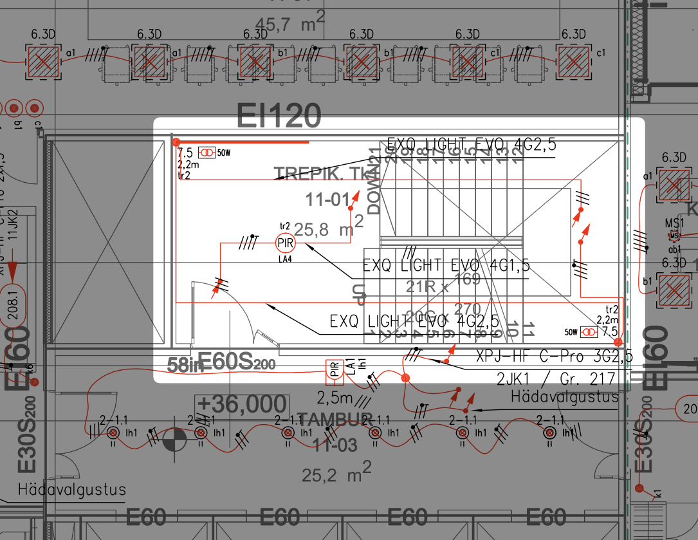

1. Sissejuhatus
1.1 Juhendi Eesmärk ja Käsitlusala¶
1.1. Juhendi Eesmärk ja Käsitlusala¶
1.1.1. Miks see juhend on koostatud?¶
Eesti elektripaigaldiste projekteerimise praktikas puudub hetkel ühtne, laiapõhjaline ja detailne juhendmaterjal, mis koondaks parimad tavad ning sätestaks selged nõuded projektdokumentatsiooni sisule ja vormistusele erinevates projekteerimisetappides. See on viinud olukorrani, kus projektide kvaliteet, detailsusaste ja maht on turuosaliste lõikes väga erinev, sõltudes sageli konkreetse tellija nõuetest või projekteerija harjumustest[cite: 4364, 4406]. Ebajärjepidevus raskendab nii projekteerimistööd, hangete korraldamist kui ka ehitusprotsessi ja hilisemat hooldust.
Käesoleva juhendi loomise peamine ajend ongi see lünk täita. Juhendi eesmärk on:
- Ühtlustada kvaliteeti: Luua ühtne arusaam heast projekteerimistavast ja kvaliteetsest projektdokumentatsioonist elektripaigaldiste valdkonnas Eestis.
- Standardiseerida projektide mahtu ja sisu: Määratleda selgemad piirid ja ootused dokumentatsiooni detailsusele ja mahule erinevates projekti staadiumites (EP, PP, TP).
- Tõhustada koostööd: Parandada kommunikatsiooni ja koostööd projekteerijate, tellijate, ehitajate, omanikujärelevalve ja teiste osapoolte vahel läbi ühiselt mõistetava raamistiku.
- Pakkuda praktilist tuge: Olla funktsionaalne ja kergesti mõistetav abivahend igapäevases projekteerimistöös.
1.1.2. Kellele juhend on mõeldud?¶
Juhend on mõeldud laiale sihtrühmale Eesti ehitussektoris, kuid peamisteks kasutajateks on:
- Elektripaigaldiste projekteerijad ja insenerid: Igapäevane töövahend projekteerimisülesannete täitmisel ja dokumentatsiooni koostamisel.
- Peaprojekteerijad ja projektijuhid: Abivahend projekteerimisprotsessi juhtimisel ja kvaliteedi tagamisel.
- Tellijad ja arendajad: Alusmaterjal projekteerimise lähteülesannete koostamiseks ja projektdokumentatsiooni kvaliteedi hindamiseks.
- Ehitusettevõtjad: Selgem arusaam projektdokumentatsiooni sisust ja oodatavast detailsusest.
- Omanikujärelevalve teostajad: Töövahend projekti vastavuse kontrollimisel.
- Erialaliidud, kutsestandardite koostajad ja õppeasutused: Sisend valdkonna arendamiseks ja õppematerjalide koostamiseks.
1.1.3. Mida juhend käsitleb?¶
Käesolev juhend käsitleb hoonete ja rajatiste elektripaigaldiste projekteerimise protsessi ning tulemusena valmiva ehitusprojekti dokumentatsiooni sisu ja vormistust. Juhend keskendub järgmistele põhiteemadele:
- Projekteerimise etapid: Nõuded ja soovitused eel-, põhi- ja tööprojekti (EP, PP, TP) koostamiseks vastavalt EVS 932:2017 määratlustele[cite: 43].
- Projektdokumentatsioon: Ühtsed nõuded dokumentide (seletuskirjad, joonised, skeemid, spetsifikatsioonid, loetelud, arvutused) struktuurile, sisule ja vormistusele.
- Tehnilised lahendused: Parimad praktikad ja miinimumnõuded erinevate elektripaigaldise osade (tugevvool, nõrkvool, automaatika) projekteerimiseks.
- BIM (Ehitise Infomudel): Soovitused ja nõuded BIM-põhisele projekteerimisele elektripaigaldiste valdkonnas.
- Kvaliteedi tagamine: Protseduurid ja kontroll-lehed projekteerimise kvaliteedi kindlustamiseks.
Juhend ei asenda kehtivaid seadusi, määrusi ega standardeid (nagu EVS 932, EVS-HD 60364 seeria jne), vaid täiendab ja selgitab neid, pakudes praktilisi juhiseid ja koondades valdkonna parimaid praktikaid. Juhend ei käsitle konkreetsete tootjate seadmete valikut ega asenda projekteerija erialast pädevust ja vastutust.
1.1.4. Inspiratsiooniallikad¶
Juhendi koostamisel on struktuuri, detailsuse ja praktilise lähenemise osas võetud inspiratsiooni Soome Sähkötieto ry ST-kortisto kogumiku põhimõtetest, mis on Soomes laialdaselt tunnustatud ja kasutatav teabeallikas. Siiski on kogu sisu kohandatud Eesti õigusruumile, kehtivatele standarditele (EVS, IEC, ISO jt) ning kohalikule projekteerimis- ja ehitustavale.
1.2 Juhendi Kasutamine¶
Käesolev juhend on loodud selleks, et olla praktiline töövahend Eesti elektripaigaldiste projekteerijatele igapäevatöös. Juhendi efektiivseks kasutamiseks palume järgida alltoodud soovitusi.
1.2.1. Juhendi Ülesehitus¶
Juhend on struktureeritud loogilisteks plokkideks, et hõlbustada vajaliku info leidmist:
- Üldosa (Peatükid 1-2): Sisaldab juhendi eesmärki, käsitlusala, termineid, viiteid normdokumentidele ning üldiseid projekteerimise ja töökorralduse põhimõtteid.
- Projektdokumentatsioon (Peatükk 3): Käsitleb projekti dokumentide koosseisu ja vormistamise nõudeid (sh joonised, skeemid, seletuskirjad, loetelud).
- Eriosade Projekteerimine (Peatükid 4-6): Annab detailsemaid juhiseid ja nõudeid tugevvoolu-, nõrkvoolu- ja automaatikapaigaldiste projekteerimiseks, jaotatuna vastavalt süsteemidele ja alateemadele. Sisu on tihti liigendatud vastavalt projekti staadiumitele (EP, PP, TP).
- BIM Nõuded (Peatükk 7): Keskendub ehitise infomudeli (BIM) rakendamisele elektripaigaldiste projekteerimisel.
- Kvaliteedi Tagamine (Peatükk 8): Sisaldab kvaliteedijuhtimise põhimõtteid ja praktilisi kontroll-lehti (checklist'e) erinevatele projekteerimisetappidele ja eriosadele.
- Lisad (Peatükk 9): Koondab abimaterjale nagu tingmärkide legendid, lühendid, standardsete lahenduste näited ja viidatud dokumentide loetelud.
1.2.2. Kuidas Leida Vajalikku Infot?¶
Juhendist info otsimisel lähtuge oma konkreetsest tööülesandest:
- Projekti Staadium: Kui töötate konkreetse staadiumi (EP, PP, TP) kallal, vaadake peatükki 2 üldiste põhimõtete ja väljundite kohta ning peatükki 8 vastava staadiumi kontroll-lehtede jaoks. Samuti leiate staadiumipõhist detailsust eriosade peatükkidest (4-6).
- Eriala/Süsteem: Kui projekteerite konkreetset süsteemi (nt valgustus, andmeside, KVJ automaatika), otsige infot vastavast eriosa peatükist (4, 5 või 6).
- Dokumendi Tüüp/Vormistus: Kui vajate teavet jooniste, skeemide, seletuskirja vormistamise, failinimede või CAD-kihtide kohta, vaadake peatükki 3.
- BIM: Kui projekt teostatakse BIM-mudelis, on keskne info koondatud peatükki 7.
- Märksõnad/Sisukord: Kasutage detailset sisukorda või (digitaalse versiooni puhul) otsingufunktsiooni spetsiifilise info kiireks leidmiseks.
1.2.3. Nõuete ja Soovituste Rakendamine¶
- Kohustuslikkus vs. Soovituslikkus: Juhendis viidatud seadused, määrused ja kohustuslikud standardid (nt EVS-HD 60364 osad) on täitmiseks kohustuslikud. Juhend ise esitab peamiselt valdkonna parimaid praktikaid, standardiseeritud lähenemisi ja soovitusi, mis tulenevad normdokumentidest ja erialasest konsensusest. Juhendi järgimine tervikuna on tungivalt soovitatav kvaliteedi ühtlustamiseks ja hea tava tagamiseks, kuid see ei asenda vajadust tunda ja järgida kehtivat seadusandlust ning kohustuslikke standardeid. Juhend täiendab, mitte ei asenda neid alusdokumente.
- Miinimumnõuded ja Hea Tava: Paljud juhendis kirjeldatud nõuded (eriti detailsuse osas) kujutavad endast miinimumtaset, mis on vajalik kvaliteetse ja arusaadava projektdokumentatsiooni saavutamiseks. Projekteerijal soovitatakse lähtuda alati konkreetsest projektist ning vajadusel esitada infot ka juhendis nõutust detailsemalt, kui see aitab kaasa parema lõpptulemuse saavutamisele.
- Kontroll-lehed: Peatükis 8 toodud kontroll-lehed on praktilised tööriistad projekteerijale enesekontrolliks, et tagada dokumentatsiooni vastavus juhendi nõuetele ja oluliste aspektide käsitlemine igas staadiumis.
- Kontekstipõhisus: Juhend annab üldise raamistiku. Projekteerija peab alati arvestama konkreetse projekti spetsiifiliste nõuete, tellija lähteülesande, ehitise tüübi ja kasutusotstarbe ning eelarveliste piirangutega.
- Professionaalne Vastutus: Juhend on abivahend, kuid see ei vähenda projekteerija professionaalset vastutust tehtud otsuste ja lahenduste eest. Alati tuleb kasutada oma erialast pädevust ja head inseneritava.
1.2.4. Juhendi Uuendamine ja Tagasiside¶
Käesolev juhend on "elav dokument", mida on plaanis regulaarselt üle vaadata ja ajakohastada vastavalt tagasisidele, tehnoloogia arengule ning muudatustele seadusandluses ja standardites (nt kord aastas).
Ootame kõigilt juhendi kasutajatelt aktiivset tagasisidet, ettepanekuid täiendusteks või teavitusi võimalikest vigadest ja ebatäpsustest. Teie panus aitab muuta juhendit veelgi paremaks ja praktilisemaks.
Tagasiside edastamiseks palume kasutada järgmist kontakti: * E-post: [Lisa siia vastav e-posti aadress, nt juhend@eetel.ee vms] * Veebivorm: [Lisa link, kui selline on olemas] * Kontaktisik: [Nimi ja kontaktandmed, kui määratud]
Vaatame kogu tagasiside regulaarselt läbi ja arvestame sellega juhendi järgmiste versioonide koostamisel.
1.3 Terminid ja Määratlused¶
Käesoleva jaotise eesmärk on tagada juhendis kasutatavate olulisemate terminite ühtne ja selge mõistmine kõikide kasutajate poolt. Ühtne terminoloogia on kvaliteetse projekteerimise ja tõhusa kommunikatsiooni aluseks erinevate osapoolte vahel.
1.3.1. Üldised Terminid ja Viited¶
Ehitusprotsessi ja -projekti üldised terminid ning määratlused (nt ehitise tellija, projekteerija, ehitamine, eskiis, ehitise eluiga jne) järgivad Eesti standardis EVS 932:2017 "Ehitusprojekt" peatükis 3 esitatud määratlusi. Käesolev juhend ei korda kõiki neid definitsioone ning üldiste terminite puhul soovitatakse esmajärjekorras juhinduda standardist EVS 932:2017.
Käesolevas jaotises keskendutakse terminitele, mis on: * spetsiifilised elektripaigaldiste projekteerimisele; * vajalikud käesoleva juhendi sisu mõistmiseks; * praktikas erinevalt tõlgendatavad või vajavad täpsustamist Eesti kontekstis.
1.3.2. Juhendis Kasutatavad Põhiterminid¶
Allpool on esitatud valik juhendis läbivalt kasutatavaid termineid koos selgitustega. Loetelu täieneb vastavalt vajadusele juhendi arendamise käigus.
Projektijuhtimise ja Dokumentatsiooni Terminid:
- Eelprojekt (EP): Ehitusprojekti esimene staadium vastavalt EVS 932:2017 määratlusele. Keskendub projektlahenduse põhimõtete väljatöötamisele ja valikule.
- Ehitusprojekt: Dokumentide kogum, mis kirjeldab projekteeritavat ehitist ja selle lahendusi vastavalt konkreetsele staadiumile (EP, PP, TP).
- Juhend: Käesolev Elektripaigaldiste Projekteerimise Juhend.
- Kontroll-leht (Checklist): Töövahend projekteerijale käesoleva juhendi peatükis 8, mis aitab kontrollida projektdokumentatsiooni vastavust nõuetele ja heale tavale erinevates staadiumites.
- Põhiprojekt (PP): Ehitusprojekti teine staadium vastavalt EVS 932:2017 määratlusele. Detailiseerib EP lahendusi määral, mis võimaldab ehitusmaksumuse hindamist ja ehitushanke korraldamist.
- Projektlahendus: Projekteerimise tulemusena loodud konkreetne tehniline või arhitektuurne lahendus ehitise või selle osa jaoks.
- Seletuskiri: Ehitusprojekti tekstiline osa, mis selgitab projektlahendusi, lähtekohti, arvutusi ja nõudeid. Struktuur ja sisu vastavalt käesoleva juhendi peatükile 3.3.3 ja Grupp A näidisele.
- Skeem: Graafiline esitus süsteemi ülesehitusest või toimimisest. Käesolevas juhendis eristatakse peamiselt:
- Struktuurskeem: Näitab süsteemi põhikomponentide (nt keskused, seadmed) ja nendevaheliste seoste hierarhiat ja paiknemist.
- Toimimisskeem (Funktsionaalskeem): Näitab süsteemi toimimise loogikat, seadmeid, ühendusi, signaale ja parameetreid.
- Ühejooneskeem: Elektriahelate lihtsustatud esitusviis, kus mitmejuhtmeline ahel (nt 3F+N) kujutatakse ühe joonena.
- Spetsifikatsioon: Seadme, materjali või toote tehniliste parameetrite ja omaduste detailne kirjeldus, mis ei sisalda koguseid.
- Staadium: Ehitusprojekti arengujärk (EP, PP, TP), mis määrab projekteerimistöö ja esitatava info detailsuse.
- Tasapinnaplaan: Ehitise või selle osa horisontaalprojektsioonis joonis, mis näitab ruumide, tarindite, seadmete ja paigaldiste paiknemist.
- Tööprojekt (TP): Ehitusprojekti kolmas, kõige detailsem staadium vastavalt EVS 932:2017 määratlusele. Selle alusel toimub ehitamine.
Elektripaigaldise Spetsiifilised Terminid:
- Automaatikapaigaldis (EA): Süsteemid ja seadmed hoonete tehnosüsteemide (nt KVJ, valgustus) automaatseks juhtimiseks ja jälgimiseks. Hõlmab ka tuleohutussüsteemide automaatikat (TOA).
- Elektripaigaldis: Kohtkindlalt paigaldatud elektrotehniliste seadmete ja tarvikute kogum, mis on ette nähtud elektrienergia tootmiseks, edastamiseks, muundamiseks, jaotamiseks või kasutamiseks. Jaguneb käesolevas juhendis peamiselt tugevvoolu-, nõrkvoolu- ja automaatikapaigaldisteks.
- Jaotuskeskus (Kilp): Madalpinge lülitusaparaatide ja juhtimisseadmete komplekt (switchgear and controlgear assembly), mis on ette nähtud elektrienergia jaotamiseks. Nõuded vastavalt käesoleva juhendi ptk 4.3 ja Grupp C materjalidele.
- Kaablitee: Tarind (nt redel, renn, karbik, toru) kaablite paigaldamiseks ja toetamiseks.
- Maandus (Earthing): Elektripaigaldise või selle osa ühendamine maaga ohutuse või talitluse tagamiseks.
- Nõrkvoolupaigaldis (EN/ELV): Paigaldised, mida iseloomustab madal pinge (tavaliselt alla 50V AC või 120V DC) ja väike voolutarve. Hõlmab peamiselt infoedastus- (andmeside, TV, fonolukk) ja turvasüsteeme (ATS, valve, läbipääs, videovalve).
- Piksekaitse (LPS - Lightning Protection System): Süsteem ehitise kaitsmiseks välgulöögi otseste ja kaudsete mõjude eest.
- Potentsiaaliühtlustus (Bonding): Erinevate juhtivate osade (nt metallkonstruktsioonid, torustikud, seadmete kestad) elektriline ühendamine potentsiaalide ühtlustamiseks.
- Tugevvoolupaigaldis (EL): Elektripaigaldise osa, mis tegeleb peamiselt elektrienergia jaotamise ja kasutamisega energeetilistel eesmärkidel (valgustus, jõuseadmed, küte jne).
- Toitegrupp (Circuit/Group): Ühe kaitseseadmega (nt kaitselüliti) kaitstud ja ühest jaotuskeskuse väljundist toidetav ahel või ahelate kogum.
BIM Terminid:
- BIM (Ehitise Infomudel): Ehitise füüsikaliste ja funktsionaalsete omaduste digitaalne esitus, mis sisaldab nii geomeetriat kui ka infot.
- IFC (Industry Foundation Classes): Avatud standard andmevahetuseks ehitustarkvarade vahel.
- LOD (Level of Development/Detail): Mudeli elementide geomeetria ja info detailsusaste vastavalt projekti staadiumile (nt LOD 200 PP jaoks, LOD 300/350 TP jaoks). Täpsem määratlus käesoleva juhendi peatükis 7.
- Ristumiste Kontroll (Clash Detection): Erinevate mudelite (nt elekter vs KVJ vs konstruktsioonid) elementide omavaheliste sobimatuste (ristumiste, liiga väikeste vahekauguste) tuvastamine tarkvara abil.
Märkus: Terminoloogia areneb pidevalt. Käesolevat jaotist täiendatakse ja täpsustatakse juhendi järgmistes versioonides vastavalt vajadusele ja kasutajate tagasisidele.
1.4 Normatiivsed Viited¶
Käesolev juhend tugineb Eesti Vabariigis kehtivatele seadustele, määrustele, standarditele ning heale tavale elektripaigaldiste projekteerimisel. Projekteerija on kohustatud alati lähtuma projekteerimise hetkel kehtivatest õigusaktidest ja standardite asjakohastest versioonidest. Allpool on loetletud peamised normatiivsed dokumendid, millele käesolevas juhendis viidatakse või mis moodustavad elektripaigaldiste projekteerimise aluse Eestis. Loetelu ei ole ammendav ning projekteerija peab iga konkreetse projekti puhul veenduma kõikide asjakohaste nõuete täitmises.
1.4.1. Eesti Vabariigi Seadused ja Määrused¶
Märkus: Seaduste ja määruste järgimine on kohustuslik.
- Ehitusseadustik (EhS): Reguleerib üldiseid ehitamise ja ehitusprotsessi nõudeid, sh projekteerimist.
- Määrus "Nõuded ehitusprojektile": Sätestab detailsed nõuded ehitusprojekti sisule, struktuurile ja vormistusele erinevates staadiumites. Käesolev juhend täiendab seda määrust elektripaigaldiste spetsiifikaga.
- Asjakohased Kliimaministeeriumi (varasemalt Majandus- ja Kommunikatsiooniministeeriumi) määrused:
- Elektriohutusnõudeid käsitlevad määrused.
- Energiatõhususe miinimumnõudeid sätestavad määrused.
- Sideehitise nõudeid käsitlevad määrused.
- ...(vajadusel lisada spetsiifilisi määruseid, nt nr 17 tuleohutuse kohta).
- Asjakohased Päästeameti määrused ja juhendid: Reguleerivad tuleohutuspaigaldiste (ATS, turvavalgustus, suitsutõrje jne) nõudeid.
- Muud asjakohased õigusaktid: (nt Töötervishoiu ja tööohutuse seadus, Jäätmeseadus jne, kui projekti kontekstis relevantne).
1.4.2. Eesti Standardid (EVS)¶
Märkus: Paljud EVS standardid on Euroopa (EN) või rahvusvaheliste (IEC, ISO) standardite ülevõtud.
- EVS 932:2017 "Ehitusprojekt": Keskne standard ehitusprojekti koostamise, staadiumite ja sisu kohta Eestis. Moodustab käesoleva juhendi raamistiku aluse.
- EVS-HD 60364 seeria "Ehitiste elektripaigaldised": Madalpingeliste elektripaigaldiste projekteerimise ja ehitamise põhistandardite sari. Olulisemad osad hõlmavad:
- Osa 4-41: Kaitseviisid. Kaitse elektrilöögi eest.
- Osa 4-42: Kaitseviisid. Kaitse kuumustoime eest.
- Osa 4-43: Kaitseviisid. Liigvoolukaitse.
- Osa 5-51: Elektriseadmete valik ja paigaldamine. Üldeeskirjad.
- Osa 5-52: Elektriseadmete valik ja paigaldamine. Juhistikud.
- Osa 5-53: Elektriseadmete valik ja paigaldamine. Lülitus- ja juhtimisseadmed.
- Osa 5-54: Elektriseadmete valik ja paigaldamine. Maanduspaigaldised ja kaitsejuhid.
- Osa 6: Kontroll.
- Osa 7: Nõuded eripaigaldistele ja -paikadele (sh 7-712 Päikese-fotogalvaanilised (PV) süsteemid, 7-714 Välisvalgustuspaigaldised, 7-722 Elektriautode toiteseadmed jne).
- EVS-EN 62305 seeria "Piksekaitse": Standardite sari piksekaitsesüsteemide projekteerimiseks ja paigaldamiseks.
- EVS-EN 50110 seeria "Käit elektripaigaldistes": Standardid elektripaigaldiste ohutuks käitamiseks.
- EVS-EN 1838 "Rakendusvalgustus. Hädavalgustus": Nõuded hädavalgustussüsteemidele.
- EVS-EN 12464 seeria "Valgus ja valgustus. Töökohtade valgustus": Nõuded sise- ja välistöökohtade valgustusele.
- EVS-EN ISO 7010 "Graafilised sümbolid. Ohutusvärvid ja ohutusmärgid": Registreeritud ohutusmärgid.
- EVS-EN 81346 seeria "Tööstussüsteemid, paigaldised ja seadmed ning tööstustooted. Struktureerimispõhimõtted ja viitetähistus": Süsteemide ja komponentide tähistamise põhimõtted.
- Jooniste vormistamise standardid (ISO baasil):
- EVS-EN ISO 3098 seeria (Tehniline tootedokumentatsioon. Kirjad)
- EVS-EN ISO 5457 (Tehniline tootedokumentatsioon. Jooniselehtede formaadid ja kujundus)
- EVS-EN ISO 7083 (Tehnilised joonised. Geomeetrilise tolerantsi tähised. Proportsioonid ja mõõtmed)
- EVS-EN ISO 7200 (Tehniline tootedokumentatsioon. Andmeväljad kirjanurkades ja dokumendipäistes)
- EVS-EN ISO 13567 seeria (Tehniline tootedokumentatsioon. CAD-jooniste kihtide struktuur ja nimetamine)
1.4.3. Rahvusvahelised Standardid (IEC, ISO, EN)¶
- IEC 61439 seeria "Low-voltage switchgear and controlgear assemblies": Jaotuskeskuste projekteerimise ja katsetamise alusstandardid.
- IEC 60909 seeria "Short-circuit currents in three-phase a.c. systems": Lühisvoolude arvutamise standardid.
- IEC 61000 seeria "Electromagnetic compatibility (EMC)": Elektromagnetilise ühilduvuse standardid.
- ISO/IEC 81346 seeria: Sama mis EVS-EN 81346.
- EN standardid: Paljud ülaltoodud EVS standardid põhinevad EN standarditel.
1.4.4. Muud Asjakohased Juhendid¶
- Kliimaministeeriumi (varasemalt MKM) Juhendmaterjal - Ehitusprojekti dokumentide digitaalse vormistamise nõuded (või selle ajakohastatud versioon): Juhised digitaalseks asjaajamiseks ehituslubade menetlemisel.
- RKAS BIM Nõuded: Riigi Kinnisvara AS poolt kehtestatud nõuded BIM-mudelitele (oluline näide suure tellija nõuetest).
- Võrguvaldajate Tehnilised Tingimused ja Tüüplahendused: Elektrilevi OÜ, jt võrguettevõtjate kehtestatud nõuded liitumistele ja võrguehitusele.
- EETEL (Eesti Elektritööde Ettevõtjate Liit) juhendmaterjalid: Valdkondlikud juhendid ja soovitused (kui neid on välja antud).
- Käesolev Elektripaigaldiste Projekteerimise Juhend: Koondab ja selgitab ülaltoodud dokumentides esitatud nõudeid ja häid tavasid.
1.5 Vastutus ja Pädevus¶
Elektripaigaldiste projekteerimine on vastutusrikas insenertehniline tegevus, mis eeldab nii asjakohast pädevust kui ka selget arusaama vastutuse piiridest. Käesolev jaotis kirjeldab peamisi põhimõtteid seoses projekteerija vastutuse ja pädevusnõuetega Eestis.
1.5.1. Projekteerija Vastutus¶
- Iga konkreetse projekti osa eest vastutav projekteerija (edaspidi projekteerija) – olgu selleks üksikisik või juriidilise isiku esindaja – vastutab enda koostatud projektlahenduste korrektsuse, ohutuse, kehtivatele õigusaktidele ja normdokumentidele (sh käesolevale juhendile) vastavuse ning tehnilise teostatavuse eest.
- Projekteerija kohustuseks on tagada, et tema loodud projektiosa oleks kooskõlas teiste projekti osadega (nt arhitektuur, konstruktsioonid, KVJVK jne). See eeldab aktiivset suhtlust ja infovahetust teiste projekteerimisrühma liikmetega.
- Projekteerija peab oma lahendustes juhinduma headest inseneritavadest, projekti lähteülesandest ning käesolevas juhendis toodud põhimõtetest ja soovitustest.
- Kuigi käesolev juhend annab tehnilisi soovitusi ja parimaid praktikaid, lasub lõplik juriidiline vastutus tehtud projektlahenduste eest projekteerimistöid teostaval ettevõttel ja projekti allkirjastanud vastutaval spetsialistil.
1.5.2. Peaprojekteerija Vastutus¶
- Peaprojekteerija roll ja ülesanded on defineeritud määruses "Nõuded ehitusprojektile" ning standardis EVS 932:2017.
- Peaprojekteerija vastutab kogu ehitusprojekti terviklikkuse ja selle osade omavahelise kokkusobivuse eest. See hõlmab projekteerimisprotsessi juhtimist, infovahetuse korraldamist ning erinevate eriosade lahenduste integreerimist ühtseks toimivaks tervikuks.
- Elektriprojekti kontekstis, juhul kui elektripaigaldise projekteerimisse on kaasatud mitu spetsialisti või alltöövõtjat, võib olla määratud ka vastutav elektriprojekteerija, kes koordineerib erinevate elektrisüsteemide (EL, EN, EA) projekteerimist ja tagab nende omavahelise kooskõla ning vastavuse peaprojekteerija juhistele.
1.5.3. Pädevusnõuded¶
- Elektripaigaldiste projekteerimine, eriti ehitusloakohustuslike või ehitusteatist nõudvate ehitiste puhul, on reguleeritud tegevusala. Projekteerimistöid võib teostada Majandustegevuse Registris (MTR) registreeritud ettevõtja, kellel on vastav õigus projekteerimise valdkonnas tegutseda.
- Projekteerimistöid teostav isik peab omama vajalikku pädevust, mis hõlmab nii asjakohast haridust, töökogemust kui ka kehtivat kutsetunnistust vastavalt Ehitusseadustikus ja kutseseaduses sätestatule.
- Vastutav spetsialist, kes allkirjastab ehitusprojekti või selle osa, peab omama projektile vastavat kutsetaset (nt Diplomeeritud elektriinsener, tase 7 või Volitatud elektriinsener, tase 8), mis on kooskõlas kehtivate nõuetega projekti keerukusele. Kutsekvalifikatsiooni olemasolu ja kehtivust saab kontrollida Kutsekoja registrist.
- Pädevus tähendab lisaks formaalsele kvalifikatsioonile ka kursisolekut kehtivate õigusaktide, standardite (sh käesolevas juhendis viidatud normdokumentidega) ja tehnoloogia arenguga. See eeldab pidevat enesetäiendamist ja professionaalse taseme hoidmist.
1.5.4. Dokumentide Allkirjastamine¶
- Vastavalt määrusele "Nõuded ehitusprojektile" peab ehitusprojekti või selle asjakohase osa allkirjastama vastutav spetsialist. Digitaalse projekti puhul kasutatakse digitaalallkirja.
- Allkirjaga kinnitab vastutav spetsialist projekti vastavust nõuetele ning võtab vastutuse esitatud lahenduste eest.
- Vastutava spetsialisti nimi, kutsekvalifikatsioon ja kutsetunnistuse number (kui kohaldub) tuleb selgelt esitada projekti tiitellehel ja/või jooniste kirjanurkades vastavalt käesoleva juhendi vormistusnõuetele.
- Peaprojekteerija allkirjastab üldjuhul kogu ehitusprojekti tiitellehe, kinnitades projekti terviklikkust ja osade kokkusobivust.
2. Projekteerimise põhimõtted
2.1 Projekteerimise Etapid¶
Elektripaigaldise ehitusprojekti koostamine toimub Eestis kehtiva standardi EVS 932:2017 ja määruse "Nõuded ehitusprojektile" kohaselt üldjuhul kolmes peamises staadiumis: eelprojekt (EP), põhiprojekt (PP) ja tööprojekt (TP). Iga järgnev staadium tugineb eelnevas staadiumis tehtud ja kooskõlastatud tööle ning täpsustab ja detailiseerib projektlahendusi.
Projekti staadiumiteks jagamine võimaldab: * Vähendada tellija riske, võimaldades lahendusi ja kulusid hinnata enne suuremahuliste tööde alustamist. * Saada vajalikud kooskõlastused ja load (sh ehitusluba). * Korraldada ehitushanget defineeritud mahu alusel. * Tagada ehitajale piisav info kvaliteetseks ehitustööks.
Kuigi sisuliselt läbitakse projekteerimisel kõik etapid, ei pruugi alati olla vajalik vormistada eraldi dokumentatsioonina nii EP kui ka PP staadiumit, eriti väiksemate või lihtsamate objektide puhul. Samas on ehitustööde aluseks alati tööprojekti (TP) staadiumile vastav dokumentatsioon.
Järgnevalt kirjeldatakse iga staadiumi eesmärki, peamisi tegevusi ja oodatavat detailsusastet elektripaigaldiste projekteerimisel. Detailsemad nõuded konkreetsete dokumentide (joonised, skeemid, seletuskiri jne) ja eriosade (EL, EN, EA) sisule igas staadiumis on esitatud käesoleva juhendi peatükkides 3 kuni 6.
2.1.1. Eelprojekt (EP) / Preliminary Design¶
- Eesmärk: Töötada välja ja valida elektripaigaldise projektlahenduse põhimõtted ja üldine kvaliteeditase. Hinnata lahenduste teostatavust ja sobivust arhitektuurse kontseptsiooniga. Võimaldada ehitise esmast maksumuse hindamist ja hankida vajalikud kooskõlastused ning load (sh taotleda ehitusluba, kui detailsus on piisav). Anda alusinfo tehniliste tingimuste taotlemiseks võrguvaldajatelt.
- Lähteandmed: Tellija lähteülesanne, arhitektuurne eskiis/kontseptsioon, kehtiv detailplaneering või projekteerimistingimused, vajadusel olemasoleva olukorra uuringud.
- Elektripaigaldise Sisu (EP staadiumis):
- Määratleda hoone peamine elektrivarustuse põhimõte: liitumispunkti(de) asukoht, eeldatav peakaitsme suurus ja võimsusvajadus (esmane võimsuste bilanss), vajadus alajaama järele.
- Määratleda varu- ja katkematu toite (UPS, generaator) vajadus ja põhimõtteline lahendus.
- Määratleda peamised jaotuskeskuste asukohad ja ligikaudsed ruumivajadused (elektri-, nõrkvoolu-, automaatikakeskused).
- Määratleda peamiste kaabliteede (magistraalid, püstikud) ja šahtide asukohad ning ligikaudsed mõõtmed.
- Määratleda peamised nõrkvoolu- ja automaatikasüsteemid, mida hoonesse kavandatakse, ja nende üldised põhimõtted (nt ATS, valve, andmeside, hooneautomaatika ulatus).
- Esitada valgustuse kontseptsioon ja ligikaudsed valgustustihedused/võimsused. Määratleda hädavalgustuse vajadus ja tüüp.
- Hinnata piksekaitse vajadust (vajadusel riskianalüüs) ja klassi.
- Detailsusaste: Kontseptuaalne, põhimõtteline. Lahendused esitatakse üldistatult, keskendutakse ruumivajadusele ja süsteemide olemasolule/tüübile. Joonistel näidatakse peamised komponendid ja trassid skemaatiliselt. Arvutused on ligikaudsed (nt võimsuste bilanss).
- Tüüpilised Väljundid: Seletuskiri, asendiplaan (liitumised, välisvõrgud), põhimõtteline toitejaotusskeem, vajadusel tehnoruumide ja šahtide paiknemisega korruste plaanid, võimsuste bilanss.
2.1.2. Põhiprojekt (PP) / Basic/Detailed Design¶
- Eesmärk: Töötada välja detailne tehniline lahendus elektripaigaldisele, mis on piisav ehitusmaksumuse täpseks määramiseks, ehitushanke korraldamiseks ja ehituspakkumuse koostamiseks. Põhiprojekt peab olema piisavalt detailne, et selle alusel valitud lahendusi oleks võimalik ehitada ilma oluliste muudatusteta (mis mõjutaksid hinda).
- Lähteandmed: Tellija poolt heaks kiidetud eelprojekt, täpsustatud lähteülesanne, teiste eriosade põhiprojektid.
- Elektripaigaldise Sisu (PP staadiumis):
- Teostada detailne dimensioneerimine ja arvutused kõikidele süsteemidele (lühisvoolud, pingelangud, valgustusarvutused, kaablite valik jne).
- Koostada detailsed plaanid: Kaabliteede plaanid (tüübid, mõõdud, asukohad, kõrgused); valgustuse plaanid (valgustite tüübid, täpsed asukohad, juhtimisgrupid); jõuseadmete plaanid (pistikupesade tüübid ja asukohad, seadmete toitepunktid); maandus- ja piksekaitsepaigaldise plaanid.
- Koostada detailsed skeemid: Kõikide jaotuskeskuste ühejooneskeemid (kaitse- ja lülitusaparaadid, nimivoolud, sätted, väljundid); potentsiaaliühtlustuse skeem; nõrkvoolu- ja automaatikasüsteemide struktuur- ja funktsionaalskeemid.
- Koostada seadmete ja materjalide spetsifikatsioonid, mis määravad tehnilised nõuded ja kvaliteeditaseme (nt kilpide nõueteleht, valgustite loetelud). Võidakse viidata referentstootele, kuid mitte piirata konkurentsi.
- Tagada kooskõla teiste eriosadega, sh avade ja ruumivajaduste lõplik kooskõlastamine.
- Detailsusaste: Detailne. Kõik süsteemid ja lahendused on tehniliselt määratletud ja dimensioneeritud. Seadmed ja materjalid on kirjeldatud tehniliste parameetrite kaudu. Joonistel on näidatud seadmete täpsed asukohad ja kaabliteede trassid. BIM LOD tase 300.
- Tüüpilised Väljundid: Seletuskiri (või ehituskirjeldus), kõik vajalikud plaanid ja skeemid, spetsifikatsioonid, seadmete ja materjalide loetelud, arvutuste kokkuvõtted.
2.1.3. Tööprojekt (TP) / Construction Working Documents¶
- Eesmärk: Anda ehitajale kogu vajalik info elektripaigaldise ehitamiseks, seadistamiseks ja kontrollimiseks vastavalt projektlahendusele. Tööprojekt täpsustab ja detailiseerib põhiprojekti lahendusi.
- Lähteandmed: Tellija poolt heaks kiidetud põhiprojekt, info ehitaja poolt valitud konkreetsete seadmete ja materjalide kohta (margid, mudelid, tootja andmed), ehitustehnoloogilised eelistused (kui kokku lepitud).
- Elektripaigaldise Sisu (TP staadiumis):
- Täpsustada põhiprojekti lahendusi vastavalt konkreetsetele valitud seadmetele ja materjalidele (nt kilpide sisemine paigutus, täpsed ühendusklemmid, seadmete mõõdud).
- Lisada detailsed paigaldusjuhised: Kinnitusdetailid, täpsed mõõdud paigaldamiseks, kaablite markeerimise juhised, ühendusjuhised (juhtmete numbrid, klemmide tähised jne).
- Koostada detailsed kaablite loetelud (vajadusel koos pikkustega) ja ühendustabelid.
- Määratleda kaitseseadmete täpsed sätted, automaatika parameetrid ja reguleerimisväärtused.
- Koostada vajalikud tööjoonised, sõlmed ja detailid, mida põhiprojektis ei pruukinud olla (nt keerukad kaabliteede ristumised, seadmete paigaldusdetailid).
- Detailsusaste: Väga detailne, ehitusvalmis. Sisaldab kogu infot, mida paigaldaja vajab töö teostamiseks ilma täiendavate projekteerimisülesanneteta. Joonised on mõõtmestatud ja sisaldavad kõiki vajalikke detaile. BIM LOD tase 350/400.
- Tüüpilised Väljundid: Täielikult detailiseeritud seletuskiri, plaanid, skeemid, sõlmejoonised, kaablite ja seadmete loetelud (koos markide/mudelitega), seadistustabelid, paigaldusjuhised.
Märkus: Praktikas võib piisavalt detailne põhiprojekt (PP) kokkuleppel tellijaga olla aluseks ka ehitustööde teostamisel, kuid sel juhul tuleb see vormistada ja markeerida kui tööprojekt (TP).
2.2 Lähteülesanne ja Lähteandmed¶
Eduka elektripaigaldise projekti aluseks on selge eesmärgipüstitus ja täielikud ning täpsed lähteandmed. Puudulik või ebaselge lähteinfo on üks peamisi põhjuseid projekteerimisel tekkivatele viivitustele, lisakuludele ja ootustele mittevastavale lõpptulemusele.
2.2.1. Lähteülesande Olulisus ja Sisu¶
Lähteülesanne on tellija kirjalik dokument, mis väljendab tema soove, vajadusi, võimalusi, nõudmisi ja piiranguid projekteeritava elektripaigaldise kohta. See on keskne dokument, millest projekteerija oma töös juhindub.
Miks on sisukas lähteülesanne oluline? * See defineerib selgelt projekti eesmärgid ja oodatava tulemuse. * See aitab vältida vääritimõistmisi tellija ja projekteerija vahel. * See võimaldab projekteerijal pakkuda parimat võimalikku lahendust vastavalt tellija vajadustele ja võimalustele. * See vähendab vajadust teha hilisemates staadiumites kulukaid muudatusi.
Hea elektripaigaldise lähteülesanne peaks sisaldama vähemalt järgmist infot: * Projekti üldeesmärgid: Hoone või rajatise kasutusotstarve, üldised ootused (nt energiatõhusus, töökindlus, kasutusmugavus). * Funktsionaalsed nõuded: Konkreetsed vajadused erinevatele süsteemidele (nt millistes ruumides on vaja erinõuetega pistikupesi, millist valgustustaset ja juhtimist soovitakse, milliseid nõrkvoolusüsteeme vajatakse, milline on oodatav automaatika tase). * Tehnilised nõuded ja piirangud: Erinõuded seadmetele, eelistatud tehnoloogiad (kui on), olemasolevad piirangud (nt ruumipuudus, eelarve, esteetilised nõuded). * Kvaliteedinõuded: Ootused materjalide ja seadmete kvaliteedile, paigaldustöödele. * Eskiis/Kontseptsioon: Ideaalis on lähteülesandele lisatud või viidatud hoone arhitektuurne eskiis või kontseptsioon. * Staadiumid ja mahud: Soovitud projekti staadiumid (EP, PP, TP) ja oodatavad väljundid (dokumendid, mudelid). * Tellijapoolsed standardid/eelistused: Kui tellijal on olemas oma tehnilised nõuded või standardid.
Märkus: Kvaliteetse lähteülesande koostamine, eriti keerukamate objektide puhul, nõuab sageli erialaspetsialistide (sh kogenud elektriinseneri) kaasamist juba varajases faasis.
2.2.2. Üldised Nõutavad Lähteandmed¶
Lisaks lähteülesandele vajab elektriprojekteerija oma tööks korrektseid ja ajakohaseid tehnilisi lähteandmeid projekti keskkonna ja teiste osade kohta. Nende hankimise eest vastutab üldjuhul tellija. Olulisemad üldised lähteandmed on:
- Planeeringud ja load:
- Kehtiv detailplaneering või projekteerimistingimused.
- Arhitektuurne ja Konstruktiivne Projekt:
- Asjakohase staadiumi arhitektuursed joonised (asendiplaan, korruste plaanid, lõiked, vaated).
- Konstruktiivse osa joonised (kandekonstruktsioonid, avad, materjalid).
- Asukohapõhine Info:
- Ajakohane digitaalne topo-geodeetiline alusplaan (L-EST97 koordinaatsüsteemis, EH2000 kõrgussüsteemis).
- Ehitusgeoloogilise uuringu andmed (pinnase ehitus, eritakistus maanduspaigaldise projekteerimiseks).
- Keskkonnatingimused (korrosiooniklass, radoonitase jne, kui relevantne).
- Olemasolev Olukord (Renoveerimisel):
- Olemasoleva hoone mõõdistusprojekt.
- Olemasoleva elektripaigaldise audit või tehnilise seisukorra uuring.
- Varasemad projektdokumendid ja teostusjoonised.
- Võrguvaldajate Info:
- Tehnilised tingimused elektrienergia ja sidevõrkudega liitumiseks (sh liitumispunkti asukoht, lubatud lühisvoolud, nõuded kaitsele ja mõõtmisele).
- Ametkondade Nõuded:
- Päästeameti, Muinsuskaitseameti, Keskkonnaameti jm asutuste erinõuded ja kooskõlastused (kui kohaldub).
2.2.3. Elektripaigaldise Spetsiifilised Lähteandmed¶
Elektriprojekteerija vajab täiendavalt spetsiifilist infot, mis tuleb reeglina tellijalt, arhitektilt, sisearhitektilt või teiste eriosade projekteerijatelt:
- Seadmete Võimsused ja Asukohad:
- Kõikide elektrit tarbivate seadmete (KVJ seadmed, köögitehnoloogia, sanitaartehnika, tehnoloogilised seadmed, liftid jne) nimekiri koos täpsete asukohtade ja tehniliste andmetega: võimsus (kW), pinge (V), faaside arv, käivitusvoolud, üheaegsustegurid, juhtimisvajadus, erinõuded toitele (nt UPS, generaator).
- Valgustus:
- Ruumide valgustusnõuded (valgustiheduse klass, värviedastusindeks, räiguse piiramine jne).
- Valgustite tüübid ja asukohad (kui need on määratud arhitekti/sisearhitekti poolt).
- Valgustuse juhtimise soovid (lülitite asukohad, grupeerimine, hämardamine, automaatjuhtimine).
- Nõrkvoolu- ja Automaatikasüsteemid:
- Andmeside- ja telefonipesade asukohad ja arv.
- Turvasüsteemide (valveandurid, kaamerad, läbipääsulukud) katvus ja asukohad.
- ATS-i andurite ja nuppude asukohad (vastavalt tuleohutusosale).
- Helinduse, video jm süsteemide nõuded ja asukohad.
- Hooneautomaatika funktsionaalsus, juhitavad ja jälgitavad seadmed, kasutajaliidese nõuded (IO nimekirjad).
- Ruumid ja Teed:
- Elektri-, nõrkvoolu- ja automaatikakilpide ning seadmeruumide kinnitatud asukohad ja suurused.
- Peamiste kaabliteede ja šahtide kinnitatud asukohad ja mõõdud.
2.2.4. Lähteandmete Hankimine ja Muutmine¶
- Vastutus: Projekteerija kohustus on kontrollida talle esitatud lähteandmete piisavust ja kvaliteeti ning teavitada tellijat ja/või peaprojekteerijat koheselt puudustest või vastuoludest. Puuduva info hankimine toimub koostöös tellija ja teiste osapooltega.
- Ajastus: Lähteandmed peavad olema võimalikult täielikud ja lõplikud enne vastava projekti staadiumi detailset alustamist (eriti enne PP alustamist). Hilisemad muudatused lähteülesandes või -andmetes võivad põhjustada olulist lisatööd, viivitusi ja kulusid.
- Muudatuste Haldamine: Kui projekteerimise käigus tekib vajadus muuta lähteülesannet või olulisi lähteandmeid, tuleb see formeerida muudatusena, hinnata selle mõju projektlahendusele, ajagraafikule ja maksumusele ning leppida kokku edasises tegevuses tellija ja projekteerija vahel.
2.3 Koostöö Teiste Osapooltega¶
Elektripaigaldise projekteerimine ei toimu isolatsioonis. Kvaliteetse, toimiva ja ehitatava lõpptulemuse saavutamiseks on kriitilise tähtsusega aktiivne, õigeaegne ja konstruktiivne koostöö kõikide projekti osapooltega. Hea koostöö aitab vältida vigu, optimeerida lahendusi ning säästa aega ja kulusid nii projekteerimise kui ka ehituse etapis.
Käesolev jaotis kirjeldab peamisi koostööpunkte ja infovahetuse vajadusi elektripaigaldise projekteerija ning teiste osapoolte vahel.
2.3.1. Koostöö Tellija ja Peaprojekteerijaga¶
- Tellija:
- Regulaarne suhtlus: Projekteerija peab hoidma tellijaga regulaarset kontakti, et selgitada lähteülesannet, esitleda lahendusvariante, saada tagasisidet ja kooskõlastusi olulistele otsustele ning projekti staadiumitele.
- Ootuste juhtimine: Oluline on selgitada tellijale erinevate lahenduste mõju maksumusele, ajagraafikule, energiatõhususele ja kasutusmugavusele.
- Muudatuste haldamine: Kõik tellijapoolsed soovitud muudatused pärast staadiumi kooskõlastamist tuleb vormistada ja nende mõjud läbi rääkida (vt ptk 2.2.4).
- Peaprojekteerija:
- Koordineerimine: Elektriprojekteerija on üks osa suuremast projekteerimismeeskonnast, mida juhib peaprojekteerija. Tuleb järgida peaprojekteerija juhiseid infovahetuse, koosolekute, tähtaegade ja dokumentide vormistamise osas.
- Aktiivne osalemine: Osaleda peaprojekteerija korraldatud töökoosolekutel, esitada õigeaegselt vajalikku infot teistele osapooltele ning tõstatada koheselt küsimusi või probleeme, mis mõjutavad teisi projekti osasid.
- Infovahetus: Tagada, et kogu asjakohane info (nt ruumivajadused, koormused, avade vajadus) jõuaks õigeaegselt peaprojekteerijani ja teiste asjaomaste osapoolteni.
2.3.2. Koostöö Arhitekti ja Sisearhitektiga¶
- Vajalik sisendinfo: Täpsed ja ajakohased arhitektuursed ja sisearhitektuursed joonised (plaanid, lõiked, vaated), sh mööbli paigutusplaanid, ripplagede plaanid, viimistlusmaterjalide info, esteetilised nõuded nähtavatele elektripaigaldise osadele.
- Kooskõlastamist vajavad teemad:
- Nähtavate seadmete asukohad: Lülitite, pistikupesade, valgustite, kilpide, juhtpaneelide, andurite jms täpsed asukohad seintel, lagedes ja põrandatel, arvestades ruumi funktsiooni, mööbli paigutust ja esteetikat.
- Varjatud paigaldised: Kaabliteede, süvistatavate karbikute ja torude paiknemine konstruktsioonides (seinad, laed, põrandad), arvestades viimistluskihtide ja konstruktsiooni eripäradega.
- Valgustuslahendus: Valgustite tüübi ja asukoha kooskõlastamine arhitektuurse ja sisearhitektuurse kontseptsiooniga, sh ripplaevalgustid, süvisvalgustid, fassaadivalgustus.
- Tehnoruumid ja -šahtid: Elektri-, nõrkvoolu- ja automaatikakeskuste ruumide ning kaablišahtide asukohtade ja suuruste kooskõlastamine.
2.3.3. Koostöö Konstruktsioonide Projekteerijaga¶
- Vajalik sisendinfo: Kandekonstruktsioonide joonised (vundament, postid, talad, vahelaed, seinad), materjalide info, raudbetoonelementide sarrusinfo (vajadusel), koormused (kui mõjutavad elektripaigaldise elemente).
- Kooskõlastamist vajavad teemad:
- Avad ja läbiviigud: Kõikide kaabliteede, torude ja šahtide läbiviikude asukohad ja suurused kandekonstruktsioonidest. Avade ülesanne tuleb esitada õigeaegselt ja korrektses formaadis.
- Süvistamine ja varjatud paigaldus: Torude, karpide, maanduselementide paigaldamine betooni või muudesse konstruktsioonidesse.
- Raskete seadmete kinnitused: Trafode, suuremate kilpide, generaatorite jms aluste ja kinnituspunktide lahendamine.
- Maandus ja Piksekaitse: Vundamendimaanduse kasutamine, piksekaitse allaviikude integreerimine konstruktsioonidesse.
2.3.4. Koostöö Teiste Eriosade Projekteerijatega (KVJVK, Vesi-Kanal jne)¶
- Vajalik sisendinfo: Kõikide elektrit tarbivate ja/või automaatikaga juhitavate seadmete (pumbad, ventilaatorid, klapid, katlad, jahutusseadmed jne) täpsed asukohad, tehnilised andmed (võimsus, pinge, faasid, juhtsignaalid) ja toimimisloogika. Torustike ja kanalisüsteemide paiknemine.
- Kooskõlastamist vajavad teemad:
- Ruumiline paiknemine: Kaabliteede ja elektriseadmete paigutamine, vältides konflikte torustike, ventilatsioonikanalite ja muude eriosade seadmetega. Eriti oluline on koordineerimine tehnoruumides ja šahtides. BIM-mudelis ristumiste kontroll on siin väga soovitatav.
- Toitepunktid: Õigete parameetritega (sh kaitseaste, erinõuded) toitepunktide ettenägemine kõikidele eriosade seadmetele.
- Juhtimis- ja automaatikaühendused: Vajalike juhtimis- ja signaalkaablite planeerimine ja ühenduspunktide kooskõlastamine elektri-, automaatika- ja vastava eriosa projekteerija vahel.
- Maandus ja potentsiaaliühtlustus: Metallist torustike ja seadmete ühendamine potentsiaaliühtlustussüsteemi.
2.3.5. Koostöö Võrguvaldajatega¶
- Vajalik sisendinfo: Kehtivad tehnilised tingimused ja liitumislepingu(te) tingimused (elekter, side). Info olemasolevate maa-aluste kommunikatsioonide kohta liitumispunkti läheduses.
- Kooskõlastamist vajavad teemad:
- Tehniliste tingimuste taotlemine ja täpsustamine (sh erinõuded nagu kahepoolne toide, mõõtmine jne).
- Liitumiskilbi(de) ja sisestus(t)e asukoha kooskõlastamine.
- Vajadusel projektlahenduste kooskõlastamine võrguvaldajaga vastavalt nende nõuetele.
- Ehitusaegsete tegevuste kooskõlastamine (nt kaevetööd, ümberlülitamised).
2.3.6. Koostööplatvormid ja Infovahetus¶
- Ühtne infokeskkond: Eduka koostöö aluseks on kokkulepitud infovahetuskanalid ja -platvormid. Eelistatud on digitaalsed projektipangad või ühised andmekeskkonnad (Common Data Environment - CDE), eriti BIM-projektide puhul.
- BIM koostöö: BIM-projektides tuleb täpselt kokku leppida mudelite vahetamise formaadid (nt IFC, RVT), sagedus, koordinaatsüsteemid, ristumiste kontrolli protseduurid ja vastutus ning vigade/küsimuste haldamise protsess (nt BCF formaadis). Detailsemalt käsitletakse seda peatükis 7.
- Koosolekud: Regulaarsed projekteerimiskoosolekud (nii eriosade-sisesed kui ka üldised) on vajalikud informatsiooni vahetamiseks, probleemide lahendamiseks ja otsuste vastuvõtmiseks. Elektriprojekteerija peab nendel aktiivselt osalema.
Kokkuvõtteks: Edukas elektripaigaldise projekt sünnib tihedas ja avatud koostöös teiste osapooltega. Õigeaegne ja täpne infovahetus ning probleemide varajane märkamine ja lahendamine on kvaliteetse lõpptulemuse võti.
2.4 Riskianalüüs ja Ohutus Projekteerimises¶
Elektripaigaldiste projekteerimine hõlmab enamat kui ainult funktsionaalsete ja normidele vastavate süsteemide loomist. Projekteerija vastutuse oluline osa on tagada, et loodud lahendused oleksid ohutud nii ehitamise, kasutamise kui ka hoolduse ajal. Riskide süsteemne hindamine ja ohutusmeetmete integreerimine projekteerimislahendustesse on kvaliteetse ja vastutustundliku inseneritöö lahutamatu osa.
2.4.1. Ohutuse ja Riskide Hindamise Olulisus¶
Ohutusnõuetega arvestamine ja riskide maandamine projekteerimise faasis ("Ohutus Projekteerimise Kaudu" ehk Safety in Design) on oluline, sest: * Ennetab õnnetusi: Aitab vältida potentsiaalseid ohuolukordi ja õnnetusjuhtumeid nii ehitusplatsil kui ka hilisema ekspluatatsiooni ja hoolduse käigus. * Tagab töökindluse: Korrektselt projekteeritud ja ohutusnõuetele vastav paigaldis on töökindlam ja selle eluiga pikem. * Vähendab kulusid: Varases staadiumis riskide maandamine on oluliselt kuluefektiivsem kui hilisemate probleemide ja õnnetuste tagajärgede likvideerimine. * Tagab vastavuse: Kindlustab vastavuse kehtivatele seadustele, määrustele ja standarditele (nt elektriohutus, tööohutus, tuleohutus). * Parandab ehitatavust ja hooldatavust: Läbimõeldud ohutuslahendused muudavad paigaldus- ja hooldustööd lihtsamaks ning turvalisemaks.
2.4.2. Peamised Riskivaldkonnad Elektriprojekteerimises¶
Elektriprojekteerija peab oma töös arvestama mitmesuguste potentsiaalsete riskidega, sealhulgas:
- Elektriohud:
- Elektrilöögioht (otsene ja kaudne puude).
- Lühised ja ülekoormused ning nendest tulenev tuleoht või seadmete kahjustused.
- Kaarleek (Arc Flash) oht lülitusseadmetes ja jaotuskeskustes.
- Elektritulekahjude süttimise oht (nt ülekuumenemine, rikked isolatsioonis).
- Paigaldusriskid: Kuigi ehitaja vastutab tööohutuse eest platsil, mõjutavad projekteerija valikud paigaldajate riske (nt raskete seadmete paigaldusviis, kaabliteede ligipääsetavus, töö kõrgustes või kitsastes tingimustes).
- Kasutus- ja Hooldusriskid:
- Ebapiisav kaitseaste (IP/IK) vastavalt keskkonnatingimustele.
- Ohtlikud olukorrad erikeskkondades (märjad ruumid, plahvatusohtlikud tsoonid, meditsiiniruumid).
- Raskendatud või ohtlik ligipääs hooldustöödeks (nt kilpidele, seadmetele, ühendustele).
- Ebapiisav eraldusvõimalus (lülitusseadmed) hooldustöödeks.
- Puudulik või eksitav märgistus, mis võib viia valede ühenduste või lülitusteni.
- Välised ja Keskkonnariskid:
- Keskkonnamõjud (niiskus, temperatuur, korrosioon, UV-kiirgus).
- Mehhaanilised vigastused (nt kaabliteede kahjustused transpordikoridorides).
- Elektromagnetiline ühilduvus (EMC) ja häired teistest süsteemidest.
- Pikselöögist tulenevad ohud.
- Tuleohutusriskid: Elektripaigaldise osade (kaablid, seadmed) panus tulekoormusesse või tule levikusse (NB! Detailne tuleohutuse lahendus esitatakse tuleohutusosas, kuid elektriprojekteerija peab arvestama materjalide tuletundlikkuse ja tulepüsivusega).
2.4.3. Ohutusmeetmed Projekteerimisel ("Ohutus Projekteerimise Kaudu")¶
Projekteerija saab ja peab riske maandama juba projekteerimise käigus, valides teadlikult ohutumaid lahendusi:
- Vastavus Normidele: Järgida rangelt kõiki kohalduvaid ohutusstandardeid (eriti EVS-HD 60364 seeria, IEC 61439 jne).
- Kaitseaparatuuri Valik ja Kooskõlastus: Korrektne kaitseseadmete (kaitselülitid, rikkevoolukaitsmed, liigpingepiirikud jne) dimensioneerimine, valik ja selektiivsuse tagamine.
- Materjalide ja Seadmete Valik: Valida keskkonnatingimustele ja kasutusotstarbele vastavate kaitseastmete (IP, IK) ja muude omadustega (nt korrosioonikindlus, temperatuuritaluvus) seadmed ja materjalid.
- Paigutus ja Trassid: Projekteerida kaabliteed ohututesse asukohtadesse, tagada piisav tööpind ja ligipääs jaotuskeskuste ja seadmete ümber ning hooldustöödeks. Planeerida ohutud ja ergonoomilised paigalduslahendused.
- Eraldamine ja Lülitamine: Näha ette piisavad ja selgelt märgistatud eraldus- ja lülitusvõimalused ohutuks hoolduseks ning avariiolukordadeks.
- Maandus ja Potentsiaaliühtlustus: Projekteerida nõuetekohane ja efektiivne kaitsemaandus- ja potentsiaaliühtlustussüsteem.
- Märgistus: Projekteerida selge, üheselt mõistetav ja püsiv paigaldise, kaablite, kilpide ja kaitseseadmete märgistussüsteem.
- Paigaldatavus ja Hooldatavus: Arvestada projekteerimisel reaalsete paigaldus- ja hooldustingimustega, vältida ülemäära keerukaid või raskesti ligipääsetavaid lahendusi.
2.4.4. Dokumenteerimine¶
Olulisemad riskihinnangud, valitud ohutusmeetmed ja erinõuded tuleb dokumenteerida ehitusprojektis:
- Seletuskiri: Peab sisaldama ülevaadet peamistest riskidest ja rakendatud ohutusmeetmetest, sh viiteid järgitud standarditele. Erinõuded paigaldusele või hooldusele tuleb selgelt välja tuua.
- Joonised ja Skeemid: Peavad selgelt näitama ohutusega seotud elementide (kaitseaparatuur, maandus, potentsiaaliühtlustus, eralduslülitid, ohutuskujad jne) asukohti ja ühendusi.
- Arvutused ja Tabelid: Kaitseaparatuuri valiku ja seadistuste arvutused, maandustakistuse arvutused jms tuleb säilitada ja vajadusel projektile lisada.
- Riskianalüüs (vajadusel): Keerukamate või kõrgema riskiastmega objektide (nt plahvatusohtlikud tsoonid, meditsiiniruumid) puhul võib olla nõutav või otstarbekas koostada eraldi riskianalüüsi dokument.
Kokkuvõtteks: Ohutus ei ole lisategevus, vaid projekteerimisprotsessi loomulik osa. Iga elektriprojekteerija peab tundma ohutusnõudeid ja standardeid ning rakendama neid oma töös järjepidevalt, et tagada ohutu, töökindel ja kauakestev elektripaigaldis.
3. Dokumentatsioon
3.1 Üldnõuded Dokumentatsioonile¶
Käesolev peatükk keskendub elektripaigaldise ehitusprojekti dokumentatsiooni koostamisele, struktureerimisele ja vormistamisele. Kvaliteetne, selge ja ühtne dokumentatsioon on eduka projekti elluviimise, ehitushanke, ehitustööde teostamise ja hilisema käidu ning hoolduse aluseks.
3.1. Üldnõuded Dokumentatsioonile¶
See alajaotis kirjeldab üldiseid põhimõtteid ja nõudeid, mis kehtivad kogu elektripaigaldise projektdokumentatsioonile (sh seletuskirjad, joonised, skeemid, loetelud, arvutused jne), sõltumata konkreetsest dokumendi tüübist või projekti staadiumist. Detailsemad nõuded spetsiifilistele dokumenditüüpidele ja vormistuselementidele on esitatud järgnevates alajaotistes (3.2 kuni 3.7).
3.1.1. Dokumentatsiooni Terviklikkus ja Järjepidevus¶
- Terviklikkus: Kogu ehitusprojekt koos kõigi selle osade ja dokumentidega moodustab ühtse terviku. Erinevad dokumendid täiendavad üksteist ning neid tuleb käsitleda ja kasutada koos.
- Järjepidevus: Informatsioon, mis on esitatud ühes projekti dokumendis (nt seletuskirjas), peab olema kooskõlas teistes dokumentides (nt joonistel, skeemidel, loeteludes) esitatud infoga. Vastuolusid tuleb vältida.
- Vastuolude Lahendamine: Kuigi vastuolusid tuleb vältida, siis nende esinemisel sama staadiumi dokumentide vahel lähtutakse üldjuhul määruses "Nõuded ehitusprojektile" §6(2) toodud hierarhiast: esmalt seletuskiri, seejärel joonised, siis muud dokumendid. Tööprojekti staadiumis, kui kogu info on joonistel, võib joonistel esitatu olla ülimuslik. Käesolev juhend soovitab siiski tagada info vastuoludeta esituse kõikides dokumentides.
- Viitamine: Dokumentide vahel tuleb kasutada selgeid ja korrektseid ristviiteid, et tagada info leitavus ja seosed erinevate dokumentide vahel (nt seletuskirjas viide konkreetsele joonisele/skeemile).
3.1.2. Selgus ja Loetavus¶
- Arusaadavus: Projektdokumentatsioon peab olema koostatud nii, et see on erialaspetsialistile (projekteerija, ehitaja, järelvalve teostaja, haldaja) lihtsalt loetav, üheselt mõistetav ja ilma vastuoludeta.
- Struktuur ja Ülesehitus: Informatsioon peab olema esitatud loogiliselt struktureeritult. Dokumentide (eriti seletuskirjade ja jooniste) ülesehitus peaks olema selge ja järjepidev.
- Detailsus: Esitatud info detailsusaste peab vastama konkreetsele projekti staadiumile (EP, PP, TP) vastavalt käesoleva juhendi peatükis 2.1 ja EVS 932:2017 nõuetele. Vältida tuleb nii ebapiisavat kui ka ülemäärast detailsust.
- Graafiline Selgus: Joonised ja skeemid peavad olema graafiliselt selged, vältides elementide ülekuhjumist ja kasutades piisavalt suurt kirja ning eristatavaid tingmärke.
- Failide Optimeerimine: Digitaalsed dokumendid (eriti PDF-failid) peavad olema tehniliselt korrektsed ja optimeeritud mahuga, et tagada nende mugav kasutamine.
3.1.3. Keel ja Terminoloogia¶
- Keel: Projektdokumentatsiooni keel on eesti keel. Tuleb kasutada korrektset grammatikat, lauseehitust ja erialast stiili, vältides liigseid võõrkeelseid termineid või slängi.
- Terminoloogia: Kogu projektis tuleb kasutada ühtset ja korrektset erialast terminoloogiat. Lähtuda tuleb käesoleva juhendi peatükis 1.3 defineeritud terminitest ning asjakohastest standarditest. Ebaselguse või mitmetitõlgendatavuse vältimiseks tuleb vajadusel termineid seletuskirjas täiendavalt defineerida.
3.1.4. Vormistuslik Ühtsus¶
- Kogu projekti dokumentatsioon peab olema vormistatud ühtses stiilis. See hõlmab lehekülgede paigutust, kirjatüüpe ja -suurusi, joonte stiile, tingmärke, kirjanurkade ja tiitellehtede kasutamist.
- Detailsemad nõuded vormistuselementidele (digitaalne vorming, failinimed, tiitellehed, seletuskiri, joonised, skeemid, spetsifikatsioonid, arvutused) on esitatud käesoleva peatüki järgnevates alajaotistes (3.2 kuni 3.7). Nende järgimine tagab projektide võrreldavuse ja professionaalse väljanägemise.
3.1.5. Muudatuste Haldamine¶
- Projekteerimisprotsess on iteratiivne ja muudatused on sageli vältimatud. Kõik pärast dokumendi esmast väljastamist või kooskõlastamist tehtud muudatused tuleb korrektselt hallata ja dokumenteerida vastavalt määruse "Nõuded ehitusprojektile" §12 nõuetele.
- Märgistamine: Muudatused tuleb joonistel ja muudes dokumentides selgelt märgistada (nt revisjonipilvedega, muudatuste tabelis kirjanurgas).
- Versioonihaldus: Iga muudetud dokument peab saama uue versiooninumbri ja muutmise kuupäeva.
- Dokumentide Nimekiri: Projekti dokumentide nimekiri peab alati kajastama kehtivate dokumentide staatust, sh viimaseid versioone ja muudatuste kuupäevi.
- Kooskõlastamine: Olulised muudatused tuleb kooskõlastada tellija ja teiste asjassepuutuvate osapooltega.
3.2 Digitaalne Vormistamine ja Esitamine¶
Kaasaegne projekteerimisprotsess toimub valdavalt digitaalselt ning ka ehitusprojektide esitamine menetlemiseks (nt ehitusloa taotlemisel) toimub üha enam elektrooniliselt läbi Ehitisregistri (EHR) või muude digitaalsete kanalite. Käesolev jaotis kirjeldab nõudeid ja soovitusi elektripaigaldise projektdokumentatsiooni digitaalseks vormistamiseks ja esitamiseks.
3.2.1. Üldised Põhimõtted¶
- Loetavus ja Selgus: Digitaalsed dokumendid peavad olema kergesti loetavad nii ekraanilt kui ka väljatrükil. Vormindus peab olema selge ja üheselt mõistetav. Vältida tuleks liigset informatsiooni ja elementide ülekuhjumist.
- Optimeeritus: Failide maht peab olema mõistlik ja optimeeritud digitaalseks kasutamiseks ning edastamiseks.
- Vastavus Paberkandjale: Digitaalse dokumendi lehe suurus ja paigutus peavad vastama selle eeldatavale väljatrükile paberil (nt A3, A2, A1 formaat).
- Orientatsioon: Dokumendid peavad olema orienteeritud nii, et neid saab lugeda ekraanil vasakult paremale ilma pööramata. Joonised orienteeritakse kirjanurga järgi.
- Ligipääsetavus: Faile ei tohi krüpteerida ega kaitsta parooliga viisil, mis takistab nende avamist menetleval ametiasutusel või teistel projekti osapooltel.
3.2.2. Nõutavad Failivormingud¶
- Peamine Formaat (PDF): Kõik tekstidokumendid (seletuskirjad, tabelid), joonised ja skeemid esitatakse reeglina PDF (Portable Document Format) formaadis, välja arvatud erijuhul (vt Registriandmete asendiplaan).
- PDF Kvaliteet: PDF-failid tuleb luua otse algsest digitaalsest dokumendist (CAD, BIM, tekstiredaktor) kasutades vastavat eksportimise või virtuaalse PDF-printeri funktsiooni. Paberväljatrükkide skaneerimist PDF-iks tuleb vältida (v.a olemasolevate paberdokumentide, nt kooskõlastuste, digitaliseerimisel).
- Vektor- vs Rastergraafika: Joonised ja tekstid peavad PDF-is säilitama vektorkuju ja teksti otsimise ning kopeerimise võimaluse. Graafikat ei tohi konverteerida rasterpildiks.
- Fondid: Kõik kasutatud fondid (v.a standardsete CAD-joonte fondid) peavad olema PDF-faili sisse ehitatud (embedded).
- Rasterpildid PDF-is: Kui dokument sisaldab rasterpilte (nt fotosid), peaks nende resolutsioon olema 300-400 dpi.
- Registriandmete Asendiplaan: EHR-i infosüsteemi automaatseks andmete lugemiseks koostatav asendiplaan esitatakse DWG (versioon 2010 või varasem) või DGN formaadis (Täpsemalt vt 3.2.7).
- Rasterpildid (eraldi failidena): Vajadusel esitatavad fotod vms esitatakse PDF, JPEG, PNG või TIFF formaadis. Soovituslik maksimaalne failimaht on 5MB.
- Videofailid: Üldlevinud, vabavaraga mängitavates formaatides (nt MP4).
- Üks Dokument = Üks Fail: Iga loogiline projektdokument (nt konkreetne jooniseleht, seletuskiri) peab olema eraldi failina.
3.2.3. Failide Nimetamise Kord¶
Ühtne failide nimetamise kord on oluline dokumentide haldamiseks ja kiireks leidmiseks. Järgida tuleb alltoodud struktuuri (baseerub MKM juhendil):
Struktuur:
ProjektiTunnus_Staadium_DokumendiTähis[_vNN][_Märkus][_Kuupäev].laiend
ProjektiTunnus(Kohustuslik): Projekti unikaalne tunnus (min 3 tähemärki, nt projekti nr).Staadium(Kohustuslik): Projekti staadiumi tähis (EP, PP, TP, LA jne).DokumendiTähis(Kohustuslik): Koosneb kolmest osast, eraldatud sidekriipsuga (-):Projektiosa: Vähemalt kahetäheline kood (nt EL, EN, EA, AR, EK jne - vt käesoleva juhendi koodistikku või MKM juhendi tabelit 1). Üldosa tähis on AA. Mitut osa hõlmava dokumendi puhul eraldatakse tähised plussmärgiga (+).Grupp: Ühekohaline number vastavalt dokumendi tüübile (0-Ülddokumendid, 1-Lähtedok, 2-Kooskõlastused, 3-Seletuskirjad, 4-Asendiplaanid, 5-Plaanid, 6-Lõiked/Vaated, 7-Sõlmed, 8-Spetsifikatsioonid/Loetelud, 9-Lisad - vt MKM juhendi tabelit 2).Järjekord: Vähemalt kahekohaline number (vajadusel täiendavate tähtedega), mis tagab failide korrektse sorteerumise grupi ja projektiosa piires.- Näide:
EL-5-01,EN-8-01a
_vNN(Kohustuslik muudatustel): Versiooni number (nt_v02,_v03), lisatakse alates teisest versioonist._Märkus(Soovituslik): Lühike selgitav tekst (ilma tühikuteta)._Kuupäev(Soovituslik): Koostamise või muutmise kuupäev formaadis AAAA-KK-PP.- .
laiend: Faililaiend (nt .pdf, .dwg, .docx).
Nõuded Nimele:
* Kasutada tohib ainult tähti (ilma täpitähtedeta), numbreid ja sümboleid -, _, +, (, ). Tühikud ei ole lubatud.
* Allkriipsu (_) kasutada ainult ülaltoodud põhiväljade eraldamiseks.
* Failinimed peavad olema projekti konteineri piires unikaalsed.
* Soovituslik maksimaalne pikkus on 64 tähemärki.
* Failinimi tuleb märkida ka projekti dokumentide nimekirja.
Näide: 12345_PP_EL-5-01_v01_Korrus2_Valgustus.pdf
3.2.4. Projekti Konteineri Struktuur ja Esitamine¶
- Konteiner: Projekt esitatakse reeglina ühes digitaalselt allkirjastatud konteineris (DDOC formaadis).
- Konteineri Nimi: Nimetatakse sarnaselt failidele, kasutades kohustuslikena välju
ProjektiTunnus,StaadiumjaMärkus(kus märkus on lühike projekti nimi/aadress). Versiooni number lisatakse muudatuste korral.- Näide:
12345_PP_v02_Kooli1.ddoc
- Näide:
- Sisu Struktuur:
- Väiksema arvu failide (<20) puhul võivad dokumendifailid paikneda otse konteineri juurkataloogis.
- Suurema arvu failide puhul paigutatakse failid konteineri sees olevasse ühte ZIP või 7Z arhiivifaili. Arhiivifail nimetatakse samamoodi nagu konteiner (laiendiga .zip või .7z).
- Arhiivi sees struktureeritakse failid alamkataloogidesse kas dokumendi gruppide (nt
3_Seletuskirjad,5_Plaanid) või projektiosade (ntEL_Tugevvool,EN_Norkvool) järgi. Kataloogi nimi peaks sisaldama koodi ja kirjeldust (ntEL_Tugevvool). Kogu projekti ulatuses tuleb kasutada ühtset struktureerimise loogikat. Ülddokumendid (Grupp 0) võivad olla juurkataloogis.
- Esitamine: Esitamine toimub vastavalt ametiasutuse nõuetele, tavaliselt läbi EHR portaali, e-posti teel (jälgida mahupiiranguid), andmekandjal või veebilingi kaudu.
3.2.5. Digitaalne Allkirjastamine¶
- Kogu projekti konteiner (DDOC) peab olema digitaalselt allkirjastatud.
- Allkirjastajaks on projekti esitaja või koostaja. Vastutavad spetsialistid (pädevad isikud) peavad allkirjastama kas kogu konteineri või vähemalt need dokumendid konteineri sees, mis kuuluvad nende vastutusalasse. Allkirja andmisel tuleks märkida allkirjastaja roll projektis.
- Kui konteinerisse lisatakse skaneeritud paberdokumente (nt tehnilised tingimused), kinnitab esitaja nende koopiate õigsust oma digiallkirjaga konteineril. Originaalid tuleb säilitada.
3.2.6. Muudatuste Esitamine¶
- Juhul kui pärast esmast esitamist tehakse projektis muudatusi, tuleb esitada kogu projekt uuesti muudetud versioonina.
- Muudetud dokumendifailide nimes tuleb kasutada järgmist versiooninumbrit (nt
_v02). - Ka projekti konteineri failinimes tuleb kasutada uut versiooninumbrit.
- Projekti dokumentide nimekirjas peab olema selgelt näidatud muudetud/asendatud dokumentide staatus ja versiooninumber.
3.2.7. Registriandmete Asendiplaani Erinõuded¶
- EHR-i andmete automaatseks sisestamiseks võib olla nõutav eraldi Registriandmete asendiplaani esitamine DWG või DGN formaadis.
- Selle faili koostamisel tuleb rangelt järgida MKM juhendis või EHR-i veebilehel toodud tehnilisi nõudeid:
- Koordinaatsüsteem: L-EST97 ja EH2000.
- Kihid (Layers): Kasutada ainult ettemääratud kohustuslikke kihinimesid (nt
HO_kontuur_0,HO_kontuur_1,VK_toru_vee,VR_projektalajne). - Geomeetria: Hoonete kontuurid esitada suletud polügoonidena, tehnovõrgud joonobjektidena, punktobjektid sümbolitena vastavalt nõuetele.
- Projekti ala piir: Määratleda kiht
VR_projektala.
- Täpsed tehnilised nõuded leiate kehtivast juhendmaterjalist (nt MKM juhendi Lisa 1) või EHR portaalist.
3.3 Dokumentide Struktuur Projektis¶
Selge ja loogiline projektdokumentatsiooni struktuur on oluline nii projekti koostajale, tellijale, ehitajale kui ka hilisemale haldajale. See tagab informatsiooni kiire leitavuse ja vähendab arusaamatusi. Käesolev jaotis kirjeldab soovituslikku elektripaigaldise projekti struktuuri ja olulisemate ülddokumentide sisu.
3.3.1. Projekti Üldine Struktuur¶
- Projektiosad: Mahukamad ehitusprojektid jaotatakse tavaliselt eriosadeks vastavalt projekteerimisvaldkondadele, nagu on kirjeldatud standardis EVS 932:2017 §6.1. Elektripaigaldiste projekteerija jaoks on olulisemad osad tavaliselt:
- AA - Üldosa / Ühisosa: Sisaldab kogu projekti hõlmavat infot, nt üldandmeid, alusdokumentide loetelu, projekti osade ja vastutavate isikute nimekirja. Selle koostab reeglina peaprojekteerija.
- EL - Tugevvoolupaigaldised: Hõlmab elektri jaotust, valgustust, jõuseadmeid, maandust, piksekaitset jne.
- EN - Nõrkvoolupaigaldised: Hõlmab andmeside-, side-, turva- (valve, läbipääs, video), ATS- ja muid nõrkvoolusüsteeme.
- EA - Automaatikapaigaldised: Hõlmab hooneautomaatikat, tehnosüsteemide juhtimist jne.
- Sõltuvalt projekti mahust ja meeskonna struktuurist võib elektriprojekt olla esitatud ühe tervikliku osana (nt "Elektripaigaldis") või jaotatud alamemadeks (EL, EN, EA). Oluline on säilitada sisemine loogika ja järjepidevus.
- Digitaalne Struktuur: Digitaalselt esitatava projekti puhul soovitatakse kasutada alajaotises 3.2.4 kirjeldatud kaustastruktuuri (põhinedes dokumendi gruppidel või projektiosadel), et tagada selgus ja vastavus heale tavale ning MKM juhendile.
3.3.2. Tiitellehed (Title Pages)¶
- Iga ehitusprojekt tervikuna ning iga eraldi köitena vormistatud projektiosa peab algama tiitellehega.
- Tiitelleht peab sisaldama vähemalt järgmist informatsiooni (vastavalt määrusele "Nõuded ehitusprojektile" §7(1) ja käesoleva juhendi lisas X toodud näidistele [viide Grupp A mallidele]):
- Projekti nimi ja tunnus/number.
- Projektiosa nimetus (kui on eraldi osa tiitelleht).
- Ehitise aadress.
- Projekteerija (Koostaja) andmed: nimi, registrikood, kontaktandmed, MTR number (kui kohaldub).
- Vastutava spetsialisti andmed: nimi, kutsekvalifikatsioon ja -tase, kutsetunnistuse number.
- Peaprojekteerija andmed (kui erineb koostajast): nimi, registrikood, kontaktandmed, vastutava isiku andmed.
- Projekti staadium (EP, PP, TP).
- Dokumendi väljaandmise kuupäev ja muudatuste ajalugu (versiooni number ja kuupäev).
- Tiitelleht peab olema allkirjastatud vastutava spetsialisti (ja vajadusel peaprojekteerija) poolt.
3.3.3. Dokumentide Nimekiri (List of Documents)¶
- Iga projekti köide või digitaalne konteiner peab sisaldama täielikku ja ajakohast dokumentide nimekirja, mis loetleb kõik sellesse köitesse/konteinerisse kuuluvad dokumendid (joonised, skeemid, seletuskirjad, lisad jne).
- Nimekiri peab iga dokumendi kohta sisaldama vähemalt:
- Dokumendi tähis: Unikaalne tunnus vastavalt peatükis 3.2.3 kirjeldatud süsteemile (nt EL-5-01).
- Dokumendi nimetus: Selge ja informatiivne pealkiri (nt "2. korruse valgustuse plaan").
- Faili nimi: Täpne failinimi vastavalt nimetamise korrale (digitaalsete projektide puhul kriitilise tähtsusega).
- Formaat / Lehe suurus: (nt A3, A1, PDF, DWG).
- Versioon / Muudatuse kuupäev: Dokumendi kehtiv versiooninumber ja viimase muudatuse kuupäev.
- Lehekülgede arv: (kui dokument koosneb mitmest lehest).
- Soovitatav on esitada dokumentide nimekiri tabeli kujul.
3.3.4. Seletuskiri (Explanatory Report)¶
- Seletuskiri on projekti peamine tekstiline dokument, mis kirjeldab ja selgitab projekteeritud lahendusi, kasutatud lähtekohti, arvutuste tulemusi, materjalivalikuid ning vastavust normidele ja nõuetele. Seletuskiri peab andma konteksti ja selgitusi graafilistele dokumentidele (joonised, skeemid).
- Struktuur: Seletuskirja soovituslik struktuur (tuginedes näidisele lisas X [viide Grupp A mallile]):
- 1. Üldosa: Käsitlusala, projekteerimise ulatus, alusandmed, normatiivsed viited.
- 2. Tehnilised lahendused: Detailne kirjeldus eriosade (EL, EN, EA) kaupa, sh:
- Süsteemide kirjeldus ja toimimispõhimõtted.
- Peamiste seadmete ja materjalide kirjeldus (viidetega spetsifikatsioonidele).
- Arvutuste kokkuvõtted (nt võimsuste bilanss, valgustustihedused, kaablite dimensioneerimise alused).
- Ohutusnõuded (sh maandus, piksekaitse, elektriohutus).
- Paigaldusnõuded ja kvaliteedinõuded.
- Koostöö teiste osadega.
- 3. Lisad (vajadusel): Viited arvutustele, tootjate andmelehtedele vms.
- Sisu Nõuded:
- Seletuskiri peab olema konkreetne, tehniliselt korrektne ja kergesti mõistetav. Vältida tuleb üldist ja mittemidagiütlevat teksti ning põhjendamatut kopeerimist teistest projektidest.
- Peab sisaldama viiteid asjakohastele joonistele, skeemidele ja standarditele.
- Peab sisaldama infot projekteerija(te) ja vastutav(ate) spetsialist(ide) kohta.
- Peab olema kooskõlas projekti graafilise osaga.
3.4 Jooniste Vormistamise Nõuded¶
Elektripaigaldise projektide graafiline osa – plaanid, skeemid, lõiked, vaated ja detailid – peab olema vormistatud korrektselt, selgelt ja ühtselt. See tagab jooniste loetavuse, vähendab vääritimõistmisi ning lihtsustab nii projekteerimis-, ehitus- kui ka hooldusprotsesse. Käesolev jaotis kirjeldab peamisi nõudeid ja soovitusi jooniste vormistamiseks, tuginedes kehtivatele standarditele.
3.4.1. Üldised Paigutusnõuded¶
- Komponendid: Iga jooniseleht peab sisaldama kolme põhikomponenti: graafiline ala (kus esitatakse joonis ise), tingmärkide legend (selgitused kasutatud sümbolite, joonte jms kohta) ning kirjanurk (joonise identifitseerimis- ja haldusinfo).
- Orientatsioon: Joonised tuleb vormistada nii, et neid saab lugeda (nii ekraanilt kui paberilt) vasakult paremale ilma lehte pööramata. Orientatsiooni määrab kirjanurga lugemissuund.
- Raamjoon ja Veerised: Joonisel peab olema raamjoon ning piisavad veerised, mis vastavad paberväljatrüki nõuetele.
- Värvikasutus: Kui joonisel kasutatakse värve informatsiooni edastamiseks (nt süsteemide eristamiseks), peab sellele olema joonisel selge märkus ning värvide tähendus peab olema legendis lahti seletatud. Joonis peab olema mõistetav ka must-valge väljatrüki või koopia korral (kasutada lisaks värvidele ka erinevaid joonetüüpe või viirutusi).
3.4.2. Jooniselehe Formaadid¶
- Standardformaadid: Kasutada tuleb standardseid ISO A-seeria formaate (A0, A1, A2, A3) vastavalt standardile EVS-EN ISO 5457.
- Pikendatud Formaadid: Vajadusel (nt pikkade trasside või hoonete puhul) võib kasutada pikendatud formaate (nt A3x3, A3x4), tingimusel, et lehe kõrgus vastab standardformaadile.
- Formaadi Valik: Valida tuleb formaat, mis tagab joonise selge ja loetava esituse valitud mõõtkavas.
3.4.3. Kirjanurk (Title Block)¶
- Kohustuslikkus: Iga jooniseleht peab olema varustatud standardse kirjanurgaga, mis paikneb reeglina lehe all paremas nurgas. Kirjanurga ülesehitus ja andmeväljad peavad vastama standardile EVS-EN ISO 7200.
- Miinimumsisu: Kirjanurk peab sisaldama vähemalt järgmist informatsiooni (vt ka näidist Lisas X [viide YLD_kirjanurga-sisu.docx]):
- Projekti nimi ja tunnus
- Projektiosa nimetus (nt EL, EN, EA)
- Ehitise aadress
- Koostaja (ettevõtte nimi)
- Projekteerija (koostaja nimi)
- Vastutav spetsialist (nimi, kvalifikatsioon)
- Projekti staadium (EP, PP, TP)
- Joonise tunnus (unikaalne kood, nt EL-5-01)
- Joonise nimetus
- Lehe number / Lehtede arv kokku
- Mõõtkava
- Esmase väljaandmise kuupäev
- Muudatuste tabel (tähis, kuupäev, sisu, tegija)
- Allkirjastamine: Vastutav spetsialist allkirjastab kirjanurga vastavas väljas.
3.4.4. Mõõtkava (Scale)¶
- Joonise mõõtkava peab olema selgelt näidatud kirjanurgas.
- Soovituslikud mõõtkavad elektripaigaldiste joonistele:
- Asendiplaanid, üldised trassiplaanid: 1:200, 1:500
- Korruste plaanid (valgustus, jõud jne): 1:100 (eelistatud), 1:50 (kui detailsus nõuab)
- Elektri-, automaatika-, nõrkvooluruumide plaanid: 1:50, 1:20
- Skeemid: Üldjuhul "Mõõtkavata" (Without Scale), märkida kirjanurka.
- Lõiked, vaated, sõlmed: Vastavalt vajadusele (1:50, 1:20, 1:10, 1:5).
- Valitud mõõtkava peab tagama joonise hea loetavuse ja detailide eristatavuse.
3.4.5. Tekstid ja Fondid (Texts and Fonts)¶
- Standardid: Tekstide vormistamisel lähtuda standarditest EVS-EN ISO 3098 (Kirjad) ja EVS-EN ISO 7083 (Proportsioonid ja mõõtmed).
- Fondid: Kasutada tehnilistele joonistele sobivaid, lihtsasti loetavaid ja platvormiüleseid sans-serif fonte (nt ISOCPEUR, Arial, Romans). Vältida kaldkirja (v.a erandjuhtudel) ja dekoratiivseid fonte.
- Teksti Kõrgus: Teksti kõrgus peab vastama standardile ja tagama loetavuse ka pärast võimalikku vähendamist. Soovituslikud miinimumkõrgused paberjoonisel:
- Põhitekst (mõõdud, tähised): min 2.5 mm.
- Abitekst (märkused, selgitused): min 1.8 mm / 2.0 mm.
- Paigutus: Tekst peab olema paigutatud loogiliselt, ei tohi katta olulisi graafilisi elemente ning peab olema üheselt seostatav vastava objekti või alaga.
3.4.6. Jooned ja Graafika (Lines and Graphics)¶
- Joonetüübid: Kasutada standardseid joonetüüpe (pidev, kriips-, punkt-, kriips-punkt jne) vastavalt standardile EVS-EN ISO 128 (või uuem) elementide ja nende staatuse (nt nähtav, varjatud, telg) eristamiseks. Joonetüüpide tähendus peab olema legendis selgitatud.
- Joonepaksused: Kasutada vähemalt kolme erinevat joonepaksust (nt peen, keskmine, jäme), et parandada joonise struktuuri ja loetavust (nt konstruktsioonid jämedamalt, seadmed keskmiselt, kaabeldus peenelt). Soovituslikud paksused vastavalt ISO 128-le (nt 0.18, 0.25, 0.35, 0.5 mm).
- Graafiline Selgus: Vältida joonte ja sümbolite liigset tihedust. Vajadusel kasutada väljatõsteid või suurema mõõtkavaga fragmente keerulisemate alade kuvamiseks.
- Vektorgraafika: Digitaalsetes väljundites (PDF) peavad jooned ja tekstid olema vektorkujul.
3.4.7. Tingmärgid ja Legend (Symbols and Legend)¶
- Standardtingmärgid: Elektripaigaldise komponentide kujutamiseks tuleb kasutada rahvusvaheliselt tunnustatud ja/või Eestis standardiseeritud tingmärke (eelkõige IEC 60617 / EVS-EN 60617 seeria alusel).
- Legend: Iga joonis või jooniste komplekt peab sisaldama tingmärkide legendi, kus on selgitatud kõikide joonisel kasutatud tingmärkide, lühendite, joonetüüpide, värvide ja mustrite tähendused.
- Järjepidevus: Kogu projekti ulatuses tuleb kasutada samu tingmärke järjepidevalt.
- Oma tingmärgid: Kui standardset tingmärki pole või see ei sobi, võib luua oma tingmärgi, kuid see peab olema legendis selgelt defineeritud ja eristuma standardsetest märkidest.
3.4.8. Kihid (CAD Layers)¶
- Standard: CAD-jooniste koostamisel tuleb kasutada standardset kihistruktuuri ja nimetamise korda, mis põhineb standardil EVS-EN ISO 13567 (või samaväärsel kehtival standardil).
- Eesmärk: Loogiline ja järjepidev kihtide kasutamine on hädavajalik joonise haldamiseks (elementide nähtavuse juhtimine), koostööks teiste osapooltega ning andmevahetuseks (sh BIM-mudelitega).
- Põhimõtted: Kihid peaksid eristama elemente vähemalt järgmiste tunnuste alusel:
- Eriosad (EL, EN, EA, AR, EK jne).
- Elemendi tüüp (nt kaablitee, valgusti, pistikupesa, tekst, mõõtmed, teljed).
- Süsteem (nt üldvalgustus, turvavalgustus, jõud, ATS, andmeside).
- Staatus (nt uus, olemasolev, lammutatav).
- Projektipõhine Standard: Täpne kihistandard ja nimetamise konventsioon tuleb määratleda projekti CAD-juhendis või BEP-s.
3.5 Skeemide Vormistamine ja Sisu¶
3.4. Jooniste Vormistus¶
Elektripaigaldise projektide graafiline osa – plaanid, skeemid, lõiked, vaated ja detailid – peab olema vormistatud korrektselt, selgelt ja ühtselt. See tagab jooniste loetavuse, vähendab vääritimõistmisi ning lihtsustab nii projekteerimis-, ehitus- kui ka hooldusprotsesse. Käesolev jaotis kirjeldab peamisi nõudeid ja soovitusi jooniste vormistamiseks, tuginedes kehtivatele standarditele.
3.4.1. Üldised Paigutusnõuded¶
- Komponendid: Iga jooniseleht peab sisaldama kolme põhikomponenti: graafiline ala (kus esitatakse joonis ise), tingmärkide legend (selgitused kasutatud sümbolite, joonte jms kohta) ning kirjanurk (joonise identifitseerimis- ja haldusinfo).
- Orientatsioon: Joonised tuleb vormistada nii, et neid saab lugeda (nii ekraanilt kui paberilt) vasakult paremale ilma lehte pööramata. Orientatsiooni määrab kirjanurga lugemissuund.
- Raamjoon ja Veerised: Joonisel peab olema raamjoon ning piisavad veerised, mis vastavad paberväljatrüki nõuetele.
- Värvikasutus: Kui joonisel kasutatakse värve informatsiooni edastamiseks (nt süsteemide eristamiseks), peab sellele olema joonisel selge märkus ning värvide tähendus peab olema legendis lahti seletatud. Joonis peab olema mõistetav ka must-valge väljatrüki või koopia korral (kasutada lisaks värvidele ka erinevaid joonetüüpe või viirutusi).
3.4.2. Jooniselehe Formaadid¶
- Standardformaadid: Kasutada tuleb standardseid ISO A-seeria formaate (A0, A1, A2, A3) vastavalt standardile EVS-EN ISO 5457.
- Pikendatud Formaadid: Vajadusel (nt pikkade trasside või hoonete puhul) võib kasutada pikendatud formaate (nt A3x3, A3x4), tingimusel, et lehe kõrgus vastab standardformaadile.
- Formaadi Valik: Valida tuleb formaat, mis tagab joonise selge ja loetava esituse valitud mõõtkavas.
3.4.3. Kirjanurk (Title Block)¶
- Kohustuslikkus: Iga jooniseleht peab olema varustatud standardse kirjanurgaga, mis paikneb reeglina lehe all paremas nurgas. Kirjanurga ülesehitus ja andmeväljad peavad vastama standardile EVS-EN ISO 7200.
- Miinimumsisu: Kirjanurk peab sisaldama vähemalt järgmist informatsiooni (vt ka näidist Lisas X [viide YLD_kirjanurga-sisu.docx]):
- Projekti nimi ja tunnus
- Projektiosa nimetus (nt EL, EN, EA)
- Ehitise aadress
- Koostaja (ettevõtte nimi)
- Projekteerija (koostaja nimi)
- Vastutav spetsialist (nimi, kvalifikatsioon)
- Projekti staadium (EP, PP, TP)
- Joonise tunnus (unikaalne kood, nt EL-5-01)
- Joonise nimetus
- Lehe number / Lehtede arv kokku
- Mõõtkava
- Esmase väljaandmise kuupäev
- Muudatuste tabel (tähis, kuupäev, sisu, tegija)
- Allkirjastamine: Vastutav spetsialist allkirjastab kirjanurga vastavas väljas.
3.4.4. Mõõtkava (Scale)¶
- Joonise mõõtkava peab olema selgelt näidatud kirjanurgas.
- Soovituslikud mõõtkavad elektripaigaldiste joonistele:
- Asendiplaanid, üldised trassiplaanid: 1:200, 1:500
- Korruste plaanid (valgustus, jõud jne): 1:100 (eelistatud), 1:50 (kui detailsus nõuab)
- Elektri-, automaatika-, nõrkvooluruumide plaanid: 1:50, 1:20
- Skeemid: Üldjuhul "Mõõtkavata" (Without Scale), märkida kirjanurka.
- Lõiked, vaated, sõlmed: Vastavalt vajadusele (1:50, 1:20, 1:10, 1:5).
- Valitud mõõtkava peab tagama joonise hea loetavuse ja detailide eristatavuse.
3.4.5. Tekstid ja Fondid (Texts and Fonts)¶
- Standardid: Tekstide vormistamisel lähtuda standarditest EVS-EN ISO 3098 (Kirjad) ja EVS-EN ISO 7083 (Proportsioonid ja mõõtmed).
- Fondid: Kasutada tehnilistele joonistele sobivaid, lihtsasti loetavaid ja platvormiüleseid sans-serif fonte (nt ISOCPEUR, Arial, Romans). Vältida kaldkirja (v.a erandjuhtudel) ja dekoratiivseid fonte.
- Teksti Kõrgus: Teksti kõrgus peab vastama standardile ja tagama loetavuse ka pärast võimalikku vähendamist. Soovituslikud miinimumkõrgused paberjoonisel:
- Põhitekst (mõõdud, tähised): min 2.5 mm.
- Abitekst (märkused, selgitused): min 1.8 mm / 2.0 mm.
- Paigutus: Tekst peab olema paigutatud loogiliselt, ei tohi katta olulisi graafilisi elemente ning peab olema üheselt seostatav vastava objekti või alaga.
3.4.6. Jooned ja Graafika (Lines and Graphics)¶
- Joonetüübid: Kasutada standardseid joonetüüpe (pidev, kriips-, punkt-, kriips-punkt jne) vastavalt standardile EVS-EN ISO 128 (või uuem) elementide ja nende staatuse (nt nähtav, varjatud, telg) eristamiseks. Joonetüüpide tähendus peab olema legendis selgitatud.
- Joonepaksused: Kasutada vähemalt kolme erinevat joonepaksust (nt peen, keskmine, jäme), et parandada joonise struktuuri ja loetavust (nt konstruktsioonid jämedamalt, seadmed keskmiselt, kaabeldus peenelt). Soovituslikud paksused vastavalt ISO 128-le (nt 0.18, 0.25, 0.35, 0.5 mm).
- Graafiline Selgus: Vältida joonte ja sümbolite liigset tihedust. Vajadusel kasutada väljatõsteid või suurema mõõtkavaga fragmente keerulisemate alade kuvamiseks.
- Vektorgraafika: Digitaalsetes väljundites (PDF) peavad jooned ja tekstid olema vektorkujul.
3.4.7. Tingmärgid ja Legend (Symbols and Legend)¶
- Standardtingmärgid: Elektripaigaldise komponentide kujutamiseks tuleb kasutada rahvusvaheliselt tunnustatud ja/või Eestis standardiseeritud tingmärke (eelkõige IEC 60617 / EVS-EN 60617 seeria alusel).
- Legend: Iga joonis või jooniste komplekt peab sisaldama tingmärkide legendi, kus on selgitatud kõikide joonisel kasutatud tingmärkide, lühendite, joonetüüpide, värvide ja mustrite tähendused.
- Järjepidevus: Kogu projekti ulatuses tuleb kasutada samu tingmärke järjepidevalt.
- Oma tingmärgid: Kui standardset tingmärki pole või see ei sobi, võib luua oma tingmärgi, kuid see peab olema legendis selgelt defineeritud ja eristuma standardsetest märkidest.
3.4.8. Kihid (CAD Layers)¶
- Standard: CAD-jooniste koostamisel tuleb kasutada standardset kihistruktuuri ja nimetamise korda, mis põhineb standardil EVS-EN ISO 13567 (või samaväärsel kehtival standardil).
- Eesmärk: Loogiline ja järjepidev kihtide kasutamine on hädavajalik joonise haldamiseks (elementide nähtavuse juhtimine), koostööks teiste osapooltega ning andmevahetuseks (sh BIM-mudelitega).
- Põhimõtted: Kihid peaksid eristama elemente vähemalt järgmiste tunnuste alusel:
- Eriosad (EL, EN, EA, AR, EK jne).
- Elemendi tüüp (nt kaablitee, valgusti, pistikupesa, tekst, mõõtmed, teljed).
- Süsteem (nt üldvalgustus, turvavalgustus, jõud, ATS, andmeside).
- Staatus (nt uus, olemasolev, lammutatav).
- Projektipõhine Standard: Täpne kihistandard ja nimetamise konventsioon tuleb määratleda projekti CAD-juhendis või BEP-s.
3.6 Spetsifikatsioonid ja Loetelud¶
Lisaks seletuskirjale, joonistele ja skeemidele on elektripaigaldise projektdokumentatsiooni oluliseks osaks spetsifikatsioonid ja loetelud (sh mahuarvutused). Need dokumendid defineerivad täpselt projekteeritud lahendustes kasutatavad materjalid, seadmed, nende tehnilised nõuded ja kogused.
3.6.1. Eesmärk ja Olulisus¶
- Spetsifikatsioonid kirjeldavad detailselt seadmetele, materjalidele ja süsteemidele esitatavaid tehnilisi ja kvaliteedinõudeid (nt parameetrid, standardid, omadused).
- Loetelud ja mahuarvutused esitavad projektis kasutatavate materjalide ja seadmete kogused ning tüübid, olles aluseks:
- Eelarvestamisele ja hangetele: Võimaldavad täpset hinnakalkulatsiooni ja korrektsete hankedokumentide koostamist.
- Materjalide tellimisele: Annab ehitajale info vajalike materjalide ja seadmete koguste kohta.
- Paigaldusele: Aitab paigaldajal identifitseerida õigeid komponente ja nende asukohti.
- Kvaliteedikontrollile: Võimaldab kontrollida paigaldatud materjalide ja seadmete vastavust projektis nõutule.
Selged, täpsed ja täielikud spetsifikatsioonid ning loetelud on hädavajalikud vigade vältimiseks ja projekti eduka elluviimise tagamiseks.
3.6.2. Spetsifikatsioonid (Specifications)¶
- Määratlus: Spetsifikatsioon on seadme, ehitusmaterjali või -toote parameetrite ja omaduste detailne tehniline kirjeldus. See ei sisalda koguseid, vaid keskendub kvaliteedi- ja tehniliste nõuete defineerimisele.
- 3.6.2.1. Sisu ja Vorm:
- Sisu: Spetsifikatsioon peab sisaldama kogu asjakohast tehnilist informatsiooni, sh:
- Viited kohalduvatele standarditele (nt IEC, EN, EVS).
- Nõutavad tehnilised parameetrid (nt nimipinge, nimivool, võimsus, kaitseaste IP/IK, lühisvoolutaluvus, mõõdud, materjal, värvus, kasutegur, täpsusklass jne).
- Nõuded funktsionaalsusele ja talitlusele.
- Kvaliteedinõuded (nt sertifikaadid, tootjapoolne testimine).
- Keskkonna- ja paigaldustingimused.
- Vorm: Soovitatav on kasutada struktureeritud vormi, näiteks tabeleid. Iga spetsifitseeritud elemendi tüüp peaks olema identifitseeritav unikaalse tähise või koodiga, mis on seotud jooniste, skeemide ja loeteludega. Heaks näiteks detailsele spetsifikatsioonile on jaotuskeskuste nõueteleht.
- Sisu: Spetsifikatsioon peab sisaldama kogu asjakohast tehnilist informatsiooni, sh:
- 3.6.2.2. Detailsus Staadiumiti:
- PP (Põhiprojekt): Spetsifikatsioonid keskenduvad funktsionaalsete ja tehniliste nõuete määratlemisele, mis on vajalikud sobivate toodete valimiseks ja hankepakkumuste koostamiseks. Üldjuhul ei nimetata konkreetseid tootjaid ega mudeleid, välja arvatud juhul, kui see on tehniliselt vältimatu või kasutatakse referentstootena koos "või samaväärne" klausliga ja samaväärsuse kriteeriumitega.
- TP (Tööprojekt): Spetsifikatsioone täpsustatakse vastavalt ehitaja poolt valitud konkreetsetele toodetele. Võidakse lisada konkreetne tootja ja mudeli/tüübi tähis. Lisanduda võivad ka spetsiifilised paigaldus-, seadistus- või testimisnõuded, mis tulenevad valitud tootest.
3.6.3. Loetelud ja Mahuarvutused (Lists/Schedules and Quantity Take-offs)¶
- Määratlus: Loetelud on tabelid, mis koondavad infot projektis kasutatavate seadmete, materjalide või kaablite kohta, sisaldades tavaliselt nende tüüpi, asukohta, kogust ja viiteid spetsifikatsioonidele või joonistele. Mahuarvutus on koguste leidmise protsess ja tulemus.
- 3.6.3.1. Tüüpilised Loetelud Elektriprojektis:
- Jaotuskeskuste loetelu: Kilbi tähis, nimetus, asukoht, nimivool, kaitseaste jms.
- Valgustite loetelu: Valgusti tüübi tähis (viitega spetsifikatsioonile), ruumi/ala tähis, kogus, paigaldusviis, juhtimisgrupp.
- Valgusallikate loetelu: Tüüp, sokkel, võimsus, värvsustemperatuur, värviedastusindeks, eluiga, kogus.
- Kaabliteede loetelu: Tüüp (redel, renn, karbik, toru), materjal, ristlõike mõõdud, kogupikkus tüübi ja süsteemi kaupa.
- Kaablite loetelu: Kaabli tähis, tüüp/mark, soonte arv ja ristlõige, hinnanguline pikkus, alguspunkt (kilp/klemm), lõpp-punkt (seade/karp/klemm). (Koostatakse tavaliselt TP staadiumis).
- Põhiseadmete loetelu: Suuremate seadmete (trafod, generaatorid, UPSid, kontrollerid jne) loetelu koos põhiparameetrite ja kogustega.
- Installatsioonimaterjalide loetelu: Muude materjalide (nt harukarbid, pistikupesad, lülitid, klemmiühendused) koondkogused.
- 3.6.3.2. Mahuarvutused: Kogused (pikkused, tükid, pindalad, mahud) arvutatakse projektdokumentatsiooni (joonised, skeemid, mudelid) alusel. BIM-mudelite kasutamine (LOD 300+) võimaldab oluliselt automatiseerida ja täpsustada mahuarvutuste protsessi.
- 3.6.3.3. Vormistamine: Loetelud esitatakse eelistatult tabeli kujul. Tabeli päises peavad olema selged veergude nimetused (nt Tähis, Nimetus/Tüüp, Tehnilised andmed/Viide spetsifikatsioonile, Asukoht, Kogus, Ühik, Märkused). Tähistused peavad olema kooskõlas jooniste ja skeemidega.
3.6.4. Seos Teiste Dokumentidega¶
- Joonised ja Skeemid: Spetsifikatsioonides kirjeldatud nõuded ja loeteludes esitatud kogused peavad olema täielikus kooskõlas joonistel ja skeemidel kujutatuga. Elementide tähistamine peab olema järjepidev.
- Seletuskiri: Seletuskiri annab üldisema ülevaate ja põhjendused valitud lahendustele, spetsifikatsioonid ja loetelud sisaldavad detailset tehnilist ja kvantitatiivset infot. Seletuskirjas tuleks viidata vastavatele spetsifikatsioonidele ja loeteludele, vältides info dubleerimist.
- BIM Mudel: BIM-põhises projekteerimises tuleks spetsifikatsioonid (parameetritena) ja loetelud/mahud genereerida otse mudelist (vt ptk 7.6). See tagab andmete järjepidevuse ja vähendab käsitsi tehtavaid vigu. Mudeli kvaliteet (LOD, parameetrite korrektsus) on siin määrava tähtsusega.
Märkus: Projekteerija vastutab korrektsete spetsifikatsioonide ja loetelude koostamise eest vastavalt projekti staadiumile. Ehitaja kasutab neid dokumente hangete tegemiseks ja paigaldustöödeks ning võib koostada täiendavaid, veel detailsemaid töö- või tellimisnimekirju.
3.7 Arvutused¶
Insenertehnilised arvutused on elektripaigaldise projekteerimise lahutamatu osa, mis tagavad süsteemide ohutuse, töökindluse, efektiivsuse ning vastavuse standarditele ja normidele. Arvutused on aluseks komponentide (kaablid, kaitseseadmed, valgustid jne) korrektsele dimensioneerimisele ja valikule ning süsteemi kui terviku toimivuse kontrollimisele.
3.7.1. Arvutuste Eesmärk ja Vajalikkus¶
Elektripaigaldise projektis teostatavate arvutuste peamised eesmärgid on: * Ohutuse tagamine: Veenduda, et paigaldis on kaitstud lühiste, ülekoormuste, elektrilöögi ja muude ohtude eest. * Funktsionaalsuse kindlustamine: Tagada, et süsteemid toimivad ettenähtud viisil (nt piisav pinge tarbijate juures, nõutav valgustatus). * Vastavus normidele: Tõendada vastavust kehtivatele standarditele (nt EVS-HD 60364 seeria, EVS-EN 12464) ja määrustele (nt energiatõhususnõuded). * Optimaalne dimensioneerimine: Valida sobivad seadmed ja ristlõiked, vältides nii ala- kui ka üledimensioneerimist, mis tagab nii tehnilise kui ka majandusliku optimaalsuse. * Lahenduste põhjendamine: Anda kvantitatiivne alus tehtud disainivalikutele.
Teostatavate arvutuste maht ja detailsusaste sõltuvad projekti staadiumist (EP, PP, TP) ja keerukusest.
3.7.2. Peamised Teostatavad Arvutused¶
Elektripaigaldise projektides teostatakse tüüpiliselt järgmisi arvutusi:
- Koormusarvutused ja Võimsuste Bilanss:
- Installeeritud ja arvutusliku (tarbitava) võimsuse määramine.
- Üheaegsustegurite rakendamine.
- Kogu objekti võimsuste bilansi koostamine (vajalik liitumisvõimsuse ja peakaitsme määramiseks).
- Valgustusarvutused:
- Valgustiheduse (lx), ühtluse, räiguse (UGR) arvutused ruumide ja alade kaupa vastavalt standardile EVS-EN 12464.
- Hädavalgustuse arvutused vastavalt standardile EVS-EN 1838.
- Energiatõhususnäitajate (LENI - Lighting Energy Numeric Indicator) arvutused.
- Elektrotehnilised Võrguarvutused:
- Lühisvooluarvutused (maksimaalne ja minimaalne $I_k$) vastavalt standardile IEC 60909, et valida sobiva lahutusvõimega kaitseseadmed ja kontrollida nende rakendumistingimusi ning kaablite termilist taluvust.
- Pingelangu arvutused, et tagada normidele vastav pinge tarbijate klemmidel normaal- ja käivitusrežiimides.
- Kaablite ja Juhistike Valiku Arvutused: Ristlõike valik lähtudes koormusvoolust ($I_B$), lubatud pingelangust ($\Delta U\%$), kaitseseadme rakendumistingimustest ($I_2$, $I_a$), lühisvoolutaluvusest ($I_k$) ja paigaldustingimustest (koormatavustegurid).
- Kaitseaparatuuri Valiku ja Koordinatsiooni (Selektiivsuse) Arvutused: Kaitselülitite, sulavkaitsmete, rikkevoolukaitsmete valik ja seadistamine, et tagada nii kaitse kui ka süsteemi võimalikult suur töökindlus (selektiivsus).
- Maanduse ja Piksekaitse Arvutused:
- Maandustakistuse arvutus.
- Piksekaitse riskianalüüs ja vajaliku kaitseklassi määramine vastavalt standardile EVS-EN 62305-2.
- Muud Arvutused:
- Varu- ja katkematu toite seadmete (UPS, generaator) võimsuse arvutused.
- Vajadusel reaktiivenergia kompenseerimise arvutused.
- Vajadusel harmooniliste analüüs.
3.7.3. Arvutusmetoodika ja Tarkvara¶
- Metoodika: Kõik arvutused peavad põhinema kehtivatel standarditel (EVS-HD 60364, EVS-EN 62305, IEC 60909 jne) ja üldtunnustatud insenertehnilistel arvutusmetoodikatel. Kasutatud metoodika peab olema arvutuste juures kirjeldatud või sellele tuleb viidata.
- Lähteandmed: Arvutuste täpsus sõltub otseselt kasutatud lähteandmete korrektsusest. Projekteerija peab kasutama ajakohaseid andmeid võrguvaldajalt (nt lühisvõimsus liitumispunktis), seadmete tootjatelt ning teistelt projekti osapooltelt. Vigaste või ebatäpsete lähteandmete kasutamine toob kaasa ekslikud arvutustulemused.
- Tarkvara: Arvutuste teostamiseks on soovitatav kasutada valideeritud ja erialaselt tunnustatud tarkvara (nt DIALux, Relux valgustusele; SIMARIS, Ecodial, Febdok, ETAP vms elektrotehnilisteks arvutusteks). Tarkvara kasutamisel peab projekteerija mõistma selle tööpõhimõtteid ja piiranguid ning vastutama tulemuste õigsuse ja interpretatsiooni eest.
3.7.4. Arvutuste Vormistamine ja Esitamine¶
- Dokumenteerimine: Kõik projekteerimisotsuste aluseks olevad olulised arvutused tuleb korrektselt dokumenteerida ja säilitada projekti juures.
- Esitusviis: Arvutused ja/või nende tulemused esitatakse projektdokumentatsioonis sobival viisil:
- Seletuskirjas: Esitatakse arvutuste kokkuvõte, peamised tulemused (nt arvutuslik võimsus, peakaitsme suurus, keskmine valgustihedus) ja järeldused.
- Lisadena: Mahukamad arvutused (nt detailsed valgustusarvutuste raportid, lühisvooluarvutuste tabelid, selektiivsusanalüüs) vormistatakse eraldi lisadena. Tarkvaraväljundid peavad olema selgelt vormindatud, kommenteeritud ning sisaldama projekti ja arvutuse identifitseerimisandmeid.
- Joonistel ja Skeemidel: Teatud arvutustulemused, mis on olulised paigaldusel või käidul (nt kaitseseadme nimivool ja seadistus, kaabli ristlõige, arvutuslik pingelang liini lõpus), märgitakse otse vastavatele skeemidele või plaanidele.
- Selgus ja Jälgitavus: Arvutuste esitus peab olema selge, arusaadav ja kontrollitav. Tuleb näidata kasutatud lähteandmed, viited metoodikale/standardile, vajadusel peamised valemid ning üheselt mõistetavad lõpptulemused koos korrektsete ühikutega.
- Staadiumid:
- EP: Keskendutakse koondnäitajatele ja esmastele hinnangutele (võimsuste bilanss, esmane valgustusarvutus).
- PP: Teostatakse detailsed dimensioneerimis- ja kontrollarvutused (lühisvool, pingelang, kaablivalik, valgustus, kaitseaparatuuri valik jne).
- TP: Vajadusel täpsustatakse arvutusi vastavalt valitud seadmetele, määratakse lõplikud seadistusväärtused kaitseaparatuurile.
Märkus: Projekteerija vastutab teostatud arvutuste korrektsuse ja tulemuste õige interpretatsiooni eest ning selle eest, et projekteeritud lahendused vastaksid arvutustega tõendatud nõuetele.
4. Tugevvool
4.2 Üldskeemid¶
Üldskeemid on elektripaigaldise projektdokumentatsiooni oluline osa, mis annavad tervikliku ülevaate elektrivarustuse ja -jaotuse põhimõtetest. Nende hulka kuuluvad peamiselt elektrivarustuse skeem ja magistraalvõrkude skeem, mis võivad teatud projekteerimisetappides olla ka ühendatud. Need skeemid on aluseks detailsemate lahenduste väljatöötamisel ning tagavad süsteemi loogilise ja arusaadava esituse.
4.2.1. Üldnõuded Skeemidele¶
Kõikidele üldskeemidele kehtivad järgmised põhinõuded, et tagada nende selgus, üheselt mõistetavus ja vastavus heale tavale:
- Standardid ja Normid:
- Skeemide koostamisel tuleb lähtuda kehtivatest standarditest, sealhulgas jooniste vormistamise üldnõuetest (nt EVS-EN ISO 5457 , EVS-EN ISO 7200 kirjanurga kohta , EVS-EN ISO 3098 tekstide kohta ) ning elektriskeemide koostamise standarditest (nt IEC 60617 tingmärkidele, IEC 61082 dokumentide koostamisele).
- Arvestada tuleb määrusega "Nõuded ehitusprojektile" ja standardiga EVS 932:2017 "Ehitusprojekt" .
- Vormistus ja Loetavus:
- Kasutada standardseid või projektis defineeritud tingmärke. Kõik kasutatud tingmärgid peavad olema esitatud joonise legendis või viidatud juhendi üldisele tingmärkide lisale (vt käesoleva juhendi Lisa X ).
- Teksti suurus joonistel peab tagama loetavuse ka vähendatud formaatidel, soovituslikult tähekõrgus 2.0-2.5 mm .
- Kasutada selgeid ja eristatavaid joonetüüpe.
- Skeemid peavad olema loogiliselt üles ehitatud ja kergesti jälgitavad.
- Informatiivsus ja Kooskõla:
- Skeemid peavad sisaldama piisavalt informatsiooni, et anda selge ülevaade süsteemi ülesehitusest ja toimimispõhimõtetest vastava projekteerimisstaadiumi detailsusastmes.
- Kõik tähised (seadmed, kaablid, ruumid jne) peavad olema kooskõlas teiste projekti osadega (nt jaotuskeskuste skeemid, tasapinnaplaanid).
- Failinimed peaksid järgima kokkulepitud konventsioone, näiteks MKM juhendi järgi . CAD kihtide kasutamisel järgida asjakohaseid standardeid (nt ISO 13567) .
4.2.2. Elektrivarustuse Skeem¶
Elektrivarustuse skeem (ka toiteskeem) kujutab elektripaigaldise toiteallikaid, liitumispunkti(e), peajaotusseadmeid ning nendevahelisi põhiseoseid. Selle eesmärk on anda ülevaade kogu objekti elektrivarustuse ülesehitusest.
- Sisu Nõuded Staadiumite Kaupa:
- EP (Eelprojekti Staadium) :
- Liitumispunkti(de) asukoht (viide asendiplaanile) ja peamised parameetrid (pinge, maksimaalne lubatud vool/võimsus, lühisvõimsus liitumispunktis, kui teada).
- Peamiste jaotuskeskuste (nt peakilp, olulisemad korrusekeskused) ühekordne kujutis ja nendevahelised peamised toitekaablid või -liinid (põhimõttelised, ilma detailse dimensioneerimiseta, kuid võib näidata eeldatava nimivoolu või suurusjärgu).
- Varutoiteallikate (nt generaator, UPS) olemasolu ja põhimõtteline ühenduskoht süsteemis .
- Omatoodangu allikate (nt PV-jaam) olemasolu ja põhimõtteline ühenduskoht .
- Pingesüsteemi (nt TN-C-S, TN-S) märkimine.
- PP (Põhiprojekti Staadium) :
- Kõik eelprojekti staadiumi info täpsustatult.
- Jaotusvõrgu struktuur kuni alajaotuskeskusteni.
- Peamiste kaablite/lattliinide tüübid ja arvutuslikud ristlõiked/nimivoolud .
- Peajaotusseadmete (sh peakilp) ja olulisemate jaotuskeskuste sisend- ja peakaitselülitite tüübid, nimivoolud ja lühisvoolutaluvus (Icu/Ics) .
- Mõõtesüsteemide (arvestite) asukohad skeemis (kui ei ole eraldi arvestite skeemi).
- Reaktiivenergia kompenseerimise seadmete asukoht ja põhimõte (kui on) .
- Ülepingekaitsevahendite (SPD) tüüp ja asukoht peajaotuskeskuses.
- TP (Tööprojekti Staadium) :
- Kõik põhiprojekti staadiumi info täpsustatult.
- Kõikide kaablite/lattliinide täpsed margid, ristlõiked ja paigaldusviisid (kui see mõjutab parameetreid).
- Kõikide kaitseseadmete täpsed tüübid, nimivoolud, karakteristikud ja seadistusväärtused .
- Selektiivsuse tagamise põhimõtted (võib olla viide eraldi arvutustele/tabelitele).
- Täpsed ühenduspunktid ja klemmide tähised jaotuskeskustes (vajadusel).
- EP (Eelprojekti Staadium) :
4.2.3. Magistraalvõrkude Skeem¶
Magistraalvõrkude skeem näitab detailselt peajaotusvõrgu jaotuskeskuste vahelisi kaableid/lattliine ja nende kaitseaparatuuri. Põhiprojekti ja tööprojekti staadiumis võib see olla integreeritud elektrivarustuse skeemiga, kui see ei halvenda loetavust .
- Sisu Nõuded Staadiumite Kaupa:
- EP (Eelprojekti Staadium):
- Magistraalvõrkude skeemi eraldi esitamine on tavaliselt valikuline; põhimõttelised magistraalid kajastuvad elektrivarustuse skeemil .
- PP (Põhiprojekti Staadium):
- Jaotuskeskuste vahelised kaablid/lattliinid koos tüübi, ristlõike/nimivoolu ja ligikaudse pikkusega.
- Kaableid/lattliine kaitsvad kaitselülitid jaotuskeskustes koos tüübi, nimivoolu ja seadistustega (ülekoormus ja lühisvoolu vabasti) .
- UPS-i ja generaatori ühendused ning nendest toituvad magistraalid .
- Elektri tootmis- ja salvestusseadmete (nt PV) ühendused magistraalvõrku .
- Juhistikusüsteemi (TN-S, TN-C-S vms) kajastamine magistraalide osas .
- Reaktiivenergia kompenseerimisseadmed kajastatakse .
- Märkus: Arvesteid magistraalliinide skeemil ei kajastata .
- TP (Tööprojekti Staadium):
- Kõik põhiprojekti staadiumi info täpsustatult.
- Täpsed kaablimargid, paigaldusviisid (kui mõjutab skeemi loetavust või tehnilisi parameetreid).
- Kriitiliste liinide puhul pingelangu arvutuste tulemused (või viide).
- Täpsed ühendusviisid ja klemmid jaotuskeskustes.
- EP (Eelprojekti Staadium):
4.2.4. Muud Üldskeemid¶
Vastavalt projekti spetsiifikale võib olla vajalik koostada ka muid üldistavaid ja süsteemidevahelisi seoseid selgitavaid skeeme . Nende sisu ja detailsusaste määratakse vastavalt konkreetsele vajadusele ja projekteerimisstaadiumile.
4.2.4.1. Sisevalgustuse Juhtimisskeemid¶
- Eesmärk: Kujutada sisevalgustuse juhtimise loogikat ja komponente.
- Sisu võib hõlmata (PP/TP staadiumis):
- Juhtimisseadmete (nt DALI kontrollerid, DMX liidesed, liikumis- ja kohalolekuandurid, hämardid, lülitid) paiknemine ja tüübid .
- Juhtimisahelate (nt DALI siinid, DMX universumid) kulgemine ja ühendused valgustite ning juhtimisseadmetega.
- Adresseeritavate süsteemide (DALI, DMX) puhul seadmete aadressid või adresseerimise põhimõtted.
- Toiteallikad juhtimissüsteemidele.
- Integreerimine hooneautomaatikasüsteemiga (kui on asjakohane).
4.2.4.2. Välisvalgustuse Skeem¶
- Eesmärk: Näidata välisvalgustuspaigaldise elektrilist ülesehitust ja juhtimist.
- Sisu võib hõlmata (PP/TP staadiumis):
- Välisvalgustite toiteahelad alates jaotuskeskusest.
- Kasutatavad kaablid (tüüp, ristlõige) ja nende paigaldusviis (skemaatiliselt).
- Juhtimisseadmed (nt fotoreleed, programmkellad, kontaktorid) ja nende ühendused.
- Vajadusel liigpingekaitse lahendused välisvalgustuse ahelates.
- Seos üldise elektrivarustuse skeemiga.
4.2.4.3. Hädavalgustuse Skeem¶
- Eesmärk: Kujutada hädavalgustussüsteemi (sh evakuatsiooni- ja paanikavältimisvalgustus) ülesehitust ja toitepõhimõtteid.
- Sisu võib hõlmata (PP/TP staadiumis):
- Hädavalgustite (autonoomsed või kesktoitega) toiteallikad ja ahelad.
- Keskakusüsteemi (CBS) või detsentraliseeritud akusüsteemide (nt eraldi UPSid) paiknemine ja ühendused.
- Hädavalgustuse jaotuskeskuste skeemid.
- Monitooringu- ja testimissüsteemide ühendused.
- Tulekindlate kaablite kasutusalad ja tüübid.
4.2.4.4. Hooneväliste Elektriseadmete Skeem¶
- Eesmärk: Anda ülevaade erinevate hooneväliste seadmete (nt pumplad, tõkkepuud, teetõkised, elektriautode laadimispunktid, liiva-, õli- ja rasvapüüdurid, välisvaldkonna videokaamerad) toite- ja juhtimisahelatest .
- Sisu võib hõlmata (PP/TP staadiumis):
- Iga väliseadme identifitseerimine ja asukoht (viide vastavale tasapinnaplaanile).
- Toiteallikad ja kaabeldus iga seadme jaoks.
- Kaitseaparatuur (kaitselülitid, rikkevoolukaitsmed).
- Juhtimisahelad ja signaalid (nt ühendus hooneautomaatikaga, kohalikud juhtimispunktid).
4.2.4.5. Suitsuluukide Toite- ja Juhtimisskeem¶
- Eesmärk: Selgitada suitsueemaldussüsteemi elektrilist toidet ja juhtimist. Märkus: Tihti on see osa tuleohutusautomaatika (TOA) projektist .
- Sisu võib hõlmata (PP/TP staadiumis):
- Toiteallikad (sh varutoide, tulekindlad kaablid).
- Juhtkeskuse ja ajamite ühendused.
- Integratsioon tulekahjusignalisatsioonisüsteemiga (ATS).
- Käsitsijuhtimise punktide ühendused.
- Signalisatsioon ja olekunäidud.
4.2.4.6. Laia Maandussüsteemi Skeem¶
- Eesmärk: Kujutada komplekssete või ulatuslike objektide maandussüsteemi terviklahendust, kui see on vajalik lisaks detailsetele maandusplaanidele.
- Sisu võib hõlmata (PP/TP staadiumis):
- Peamiste maanduselektroodide (nt vundamendimaandur, rõngasmaandur, süvamaandurid) jaotus ja omavahelised ühendused.
- Peamiste potentsiaaliühtlustuslattide (PML) asukohad ja nendevahelised ühendused.
- Ühendused erinevate hooneosade või rajatiste maandussüsteemide vahel.
- Suuremate tehnoloogiliste seadmete või erinõuetega alade maandamise põhimõtted.
4.2.4.7. Etapilisuse Skeem¶
- Eesmärk: Selgitada elektripaigaldise rajamise ja kasutuselevõtu järjekorda etapiviisiliselt ehitatavatel objektidel.
- Sisu võib hõlmata (PP/TP staadiumis):
- Ehitusetappide piirid elektripaigaldise osas.
- Ajutiste toiteallikate ja ühenduste asukohad ja parameetrid.
- Püsitoitele ülemineku skeemid ja järjestus.
- Iga etapi lõpus kasutuselevõetavate süsteemide ulatus.
4.2.4.8. Arvestite Skeem¶
- Eesmärk: Näidata detailselt elektrienergia arvestussüsteemi ülesehitust, eriti kui objektil on mitmeid arvestuspunkte või keerukas arvestusloogika.
- Sisu võib hõlmata (PP/TP staadiumis):
- Kõikide elektriarvestite (pea-, grupi-, alam-) asukohad ja tüübid.
- Voolutrafode (kui kasutatakse) asukohad, ülekandetegurid ja täpsusklassid.
- Arvestite ühendamine jaotuskeskustesse.
- Andmesideühendused kauglugemissüsteemiga või hoonehaldussüsteemiga (BMS).
- Arvestite identifitseerimistähised.
4.2.4.9. Elektriautode Laadimise Skeem¶
- Eesmärk: Kujutada elektriautode laadimistaristu elektrivarustust ja juhtimist.
- Sisu võib hõlmata (PP/TP staadiumis):
- Laadimispunktide (laadijate) asukohad, tüübid (AC/DC) ja võimsused.
- Toiteahelad jaotuskeskustest laadimispunktideni, kaablite tüübid ja ristlõiked.
- Iga laadimispunkti kaitseaparatuur (sh rikkevoolukaitsmed tüüp B või vastavalt tootja nõuetele).
- Dünaamilise koormusjuhtimise (DLM) süsteemi komponendid ja ühendused (kui on kasutusel).
- Arvestuslahendused laadimiseks tarbitud energiale.
- Andmesideühendused (nt keskhalduseks, maksesüsteemideks).
Märkus: Üldskeemid peavad andma selge ja üheselt mõistetava pildi elektripaigaldise ülesehitusest ning olema aluseks detailsemate projektiosade koostamisel. Terminoloogia ühtsus kogu projektis, sh skeemidel, on väga oluline . Skeemide sisu detailsusaste sõltub projekti staadiumist ja konkreetse objekti keerukusest.¶
4.3 Kilbiskeemid¶
4.3. Jaotuskeskused (sh nõueteleht, skeemid, laotised)¶
Jaotuskeskused on elektripaigaldise keskne osa, mis tagavad elektrienergia ohutu jaotamise erinevatele tarbijatele. Nende korrektne projekteerimine, dokumenteerimine ja valmistamine on kriitilise tähtsusega kogu elektripaigaldise töökindluse, ohutuse ja hooldatavuse seisukohalt. Käesolev jaotis kirjeldab nõudeid jaotuskeskuste projekteerimisele ja nendega seotud dokumentatsioonile, sealhulgas nõuetelehtedele, skeemidele ja laotistele.
4.3.1. Üldnõuded ja Standardid¶
- Põhistandardid: Jaotuskeskuste projekteerimisel ja valmistamisel tuleb lähtuda eelkõige järgmistest standarditest:
- IEC 61439 seeria (EVS-EN 61439 seeria): "Madalpingelised lülitus- ja juhtimisseadmekomplektid"[cite: 848]. See standardisari määratleb jaotuskeskuste projekteerimise, ehituse ja katsetamise nõuded.
- EVS-HD 60364 seeria: "Ehitiste elektripaigaldised", eriti osad, mis käsitlevad kaitset liigvoolu ja elektrilöögi eest ning seadmete valikut ja paigaldamist.
- IEC 60909 seeria: "Lühisvoolud kolmefaasilistes vahelduvvooluvõrkudes" lühisvoolude arvutamiseks[cite: 867].
- IEC 60947-2 või IEC 60898 kaitseaparatuuri lühisvoolutaluvuse kohta[cite: 867].
- Vajadusel eristandardid spetsiifilistele paigaldistele (nt mere-, raudtee-)[cite: 848].
- Disainiprintsiibid:
- Ohutus: Tagada personali ja vara ohutus normaal- ja rikkeolukordades (kaitse elektrilöögi, lühise, ülekoormuse, kaarleegi eest)[cite: 858].
- Töökindlus: Tagada toiteallikate ja väljundite usaldusväärne toimimine, arvestades selektiivsuse ja varutoite nõudeid.
- Hooldatavus: Võimaldada ohutut ja lihtsat juurdepääsu komponentidele hoolduseks, kontrolliks ja testimiseks. Sisemise eraldatuse vorm (nt 1, 2b, 3b, 4a, 4b vastavalt IEC/TR 61439-0) peab olema määratletud[cite: 848, 867].
- Laiendatavus: Arvestada tulevaste laienduste võimalusega (reservruum vähemalt 15-20%)[cite: 850, 867].
- Kooskõlastamine: Jaotuskeskuste projekteerimisel on oluline koostöö:
- Arhitekti ja sisearhitektiga: Kilbiruumide asukohtade, suuruste ja juurdepääsude osas.
- KVVKJ projekteerijaga: Kilpide soojuseralduse ja ventilatsioonivajaduse osas[cite: 856].
- Tellijaga: Erinõuete, varutoitevajaduste ja juhtimisloogika osas.
- Hooneautomaatika projekteerijaga: Andmesideühenduste ja juhtimissignaalide osas.
4.3.2. Jaotuskeskuse Nõueteleht¶
Nõueteleht on keskne dokument, mis koondab jaotuskeskuse tehnilised ja ehituslikud nõuded ning on aluseks kilbi valmistajale ja hilisemale kontrollile[cite: 866]. See esitatakse eraldi lehena enne skeeme[cite: 866].
- Põhinõuded Nõuetelehel[cite: 848, 867]:
- Kilbi tähis (nimetus ja otstarve).
- Nimipinge ja sagedus.
- Nimivool (kilbi peasisendile).
- Pingesüsteem (TN-C, TN-S, TN-C-S, IT jne).
- Lühisvoolutaluvus Icw (nt 1s, kasutavad ka seadmete tootjad ja on võrreldav)[cite: 848].
- Kaitseaste (IP-klass).
- Löögikindlus (IK-aste).
- Kilbiehituse standard (viide IEC/EVS-EN 61439 osale, nt IEC 61439-1/-2/-3)[cite: 848, 867].
- Vajadusel eristandardi nõuded (mere, raudtee jne)[cite: 848].
- Sisemise eraldatuse vorm (nt 1, 2b, 3b, 4a, 4b vastavalt IEC/TR 61439-0)[cite: 848, 867].
- Installeeritud ja arvutuslikud võimsused (kilbi tootjale ebaoluline info)[cite: 848].
- Juhtahelate Andmed[cite: 849]:
- Pinge ja sagedus (AC/DC).
- Ehituslikud Andmed[cite: 849, 867]:
- Keskuse tüüp (kapp, kilp, klemmkarp).
- Paigaldusviis (pinnapealne, süvistatav).
- Kinnitusviis (põrand, sein).
- Lukustuse tüüp (pöördlukuga, võtmega lukuga).
- Kilbi värv (standardne või erinõue).
- Keskuse kriitilised mõõdud (pikkus, laius, kõrgus, sügavus). PP staadiumis eeldatavad maksimaalsed mõõtmed, TP staadiumis valmistaja poolt antud täpsed gabariidid[cite: 849, 867].
- Piirangud transpordiühikule (nt madalad uksed)[cite: 849].
- Keskkonna temperatuuripiirid[cite: 850, 867].
- Reservruumi protsentuaalne nõue (nt 15-20%)[cite: 850, 867].
- Uste avanemise suund ja nurk (vajadusel märkustesse)[cite: 856].
- Markeerimine[cite: 850, 867]:
- Välise markeeringu nõuded (valmistaja standard või erinõuded).
- Sisese markeeringu nõuded (valmistaja standard või erinõuded), sh kust/kuhu markeering.
- Jõuahelate markeerimise nõuded.
- Juhtahelate markeerimise viis (nt ei markeerita (0), klemmi tähis (1), otseühenduse aadress (2), vastasühenduse aadress (3), otseühenduse ja vastasühenduse aadress (4), juhtme number (5))[cite: 851].
- Seadmete ja Kaabelduse Informatsioon:
- Latistuse materjal (Cu või Al, TP staadiumis täpsustatakse)[cite: 849, 851, 867].
- Signaallampide tüüp[cite: 851].
- Juhtmestuse minimaalsed ristlõiked (jõuahel, juhtahel, DC ahel jne)[cite: 851].
- Juhtmestuse tüüpide värvid (L1, L2, L3, N, PE, juhtahela L, juhtahela N, DC +, DC- jne)[cite: 851].
- Kaablite sisendite ja väljundite suunad (alt/ülevalt/tagant jne)[cite: 851, 867].
- Toitekaablite ühendusviis (otse aparaadiga või klemmidele)[cite: 852].
- Jõuväljundite ühendusviis (otse aparaadiga või klemmidele)[cite: 852].
- Juhtahelate ühendusviis.
- Sisendi tüüp (nt lattsild, kaabel; kaabli tüüp ja mõõtmed, võib olla ka ainult skeemil)[cite: 853, 867].
- Märkused: Harva kasutatavad või väga spetsiifilised nõuded (nt lisakaitse nagu kaarekaitse[cite: 858], erinõuded viimistlusele[cite: 858], erinõuded kilbi sisemisele latistusele[cite: 858], soojuseraldus ja ventilatsioonivajadus [cite: 856]) on soovitatav lisada märkuste lahtrisse, et hoida nõueteleht ülevaatlikuna[cite: 854, 855].
4.3.3. Skeemid¶
Jaotuskeskuste skeemid on peamine dokumentatsiooniosa, mis kirjeldab keskuse elektrilist ülesehitust ja funktsionaalsust.
- Primaarskeemid (Ühejooneskeemid):
- Esitatakse kõikide pea- ja jaotuskeskuste kohta[cite: 866].
- Sisu (PP baastase): [cite: 867]
- Latistuse nimetus ja juhistiku tähised (L(x), N, PE, TE jne)[cite: 858, 867].
- PEN lahutuspunkt (vajadusel)[cite: 858, 867].
- Kilbi sisestused:
- Sisestuskoha (kust toide tuleb) nimetus[cite: 858, 867].
- Nimivool ja nimivõimsus.
- Sisestuslüliti valik (koormuslüliti, kaitselüliti, sular jne)[cite: 859, 867].
- Lülitusviisi määramine (käsitsi, ajamiga)[cite: 859, 867].
- Mõõteseadmed (voolutrafod, mõõteseadmed, abiahelate kaitsmed)[cite: 859, 867].
- Asendikontaktid[cite: 859, 867].
- Ühenduskaabel/latt[cite: 859, 867].
- Liigpingepiiriku vajadus ja valik (parameetrid)[cite: 859, 867].
- Juhtsignaalide kirjeldus (vajadusel)[cite: 859].
- Kilbi väljundid:
- Tarbija tunnus, nimetus või kirjeldus[cite: 859, 867].
- Nimivool ja nimivõimsus.
- Väljundlüliti tüüp (MCB, MCCB, RCD, AFDD, LSI valik)[cite: 867].
- Lülitusviisi määramine (käsitsi, ajamiga)[cite: 859, 867].
- Mõõteseadmed (voolutrafod, mõõteseadmed, abiahelate kaitsmed)[cite: 859, 867].
- Asendikontaktid[cite: 859, 867].
- Ühenduskaabel/latt[cite: 859, 867].
- Juhtsignaalide kirjeldus (vajadusel)[cite: 859, 867].
- Juhitavate väljundahelate komponendid (kontaktorid, sagedusmuundurid, abireleed jne)[cite: 859, 867].
- Juhtahelate komponendid ja releed[cite: 867].
- Indikatsioon ja lülitus:
- Indikatsioontulede kogus[cite: 859, 867].
- Juhtnupud ja nende tüüp, funktsiooni kirjeldus (osaliselt, lõplikult selgub sekundaarskeemides)[cite: 859, 867].
- Muud komponendid:
- Trafod (primaar- ja sekundaarpinge), täpsusklass[cite: 859, 867].
- Abikontrollerid[cite: 859, 867].
- Muud põhikomponendid[cite: 859, 867].
- Pistikupesad kilbis sees, kilbi kestal (koos tähise ja võimsusega)[cite: 860, 867].
- Andmesideühendused:
- Kilpi sisenevad ja väljuvad andmesideühendused (siini tüüp/IO)[cite: 867].
- Kaablitüübid (keerupaar, varjestus jne)[cite: 867].
- Lülitusseadmete ehitus (plug-in, vanker, fix)[cite: 856, 867].
- Lisakaitse (nt kaarekaitse)[cite: 858, 867].
- Sisu (TP kõrgem tase): [cite: 867]
- Kõik PP taseme info.
- Tähised.
- Sätted (kõikide kaitseseadmete ja rikkekaitsete sätted).
- Aegreleede, pingekontrolli releede ja muu aparatuuri seadistuste sätted/viited[cite: 861].
- Täpsustatud lülitusviis (käsitsi, ajamiga, ajami tüüp).
- Faseering.
- Indikatsioontulede värvus ja funktsioon, tehase poolt esitatud parameetrid (pinge, AC/DC jne).
- Täpsustatud kaablitüübid (kaabli mark ja kogused) andmesideühendustele.
- Sekundaarahelate skeemid:
- PP staadiumis esitatakse tüüpsed skeemid ahelatüüpide kaupa, näidates kõik põhi- ja abikomponendid (releed, tuled, lülitid, nupud, kontaktid jne)[cite: 873].
- TP staadiumis esitatakse kõikide ahelate skeemid detailselt[cite: 873]:
- Komponentide tähised ahelate kaupa.
- Komponentide tehnilised parameetrid.
- Klemmide tähised ja numbrid.
- Välisühendused (sooned, tähised, ühendused klemmidega).
- Juhtahelate sisemised ristlõiked ja soonte värvus.
- RLA loogika skeem (vajadusel):
- Esitatakse maatriksina, kus on kirjeldatud juhitavad lülitid, lülituse käivitussignaal, viiteajad, lülitite olekud vastavalt sisendite olekule[cite: 870].
- PP staadiumis sisaldab juhitavaid sisendeid, sisendite olekuid, viiteaegu lülituste vahel, sisendite olekute muutuse siirdeprotsessi[cite: 871]. Primaarskeemil näidatakse juhitavad lülitid tähistustega, toitekilbid, ajami tüüp, nimivoolud, latistus, tagasisideahelad, blokeeringud, käsijuhtimine[cite: 871].
- TP staadiumis lisanduvad täpsustatud viiteajad, täpsustatud juhtimise maatriks, täpsustatud tähised ja nimivoolud primaarskeemil, RLA kontrolleri valik ja tüüp[cite: 871].
- Keskpinge jaotusseadme skeem (vajadusel): Sisu täpsustatakse vastavalt projekti eripäradele[cite: 868, 869].
- Tingmärkide loetelu: Skeemides kasutatavad tingmärgid sõltuvad suuresti projekteerimisel kasutatavast tarkvarast ja peavad olema üheselt mõistetavad[cite: 857].
4.7.8. Jaotuskeskuste Laotised (Layout)¶
Jaotuskeskuste laotised on joonised, mis näitavad komponentide füüsilist paigutust kilbis.
- Sisu (PP staadiumis võib olla skemaatilisem):
- Kilbikesta gabariidid[cite: 875].
- Sisu (TP staadiumis): [cite: 860, 875]
- Kogu PP taseme info täpsustatuna.
- Kilbi kesta konfiguratsioon, avatavus, kinnitused.
- Kaablite sisend- ja väljundavade asukohad ja mõõdud, läbiviikude arv ja läbimõõt vastavalt kaablitele.
- Kilbi kestal ja/või uksel paiknevate indikatsioonide, näiturite, lülitite, seadenuppude ja sõrmistike täpne paigutus.
- Kaabliteede paiknemine kilbis.
- Kõikide kilbi komponentide (kaitselülitid, kontaktorid, klemmliistud, latid jne) täpne paiknemine kilbis.
- Eestvaade, pealtvaade, vajadusel külgvaated ja sokli joonis.
- Kilbi jahutuse ja ventilatsiooni lahendus (kui vajalik, arvestades soojuseraldusega [cite: 861]).
- Klemmliistude tähised ja numeratsioon[cite: 861].
- Välisühenduste (kaablid, sooned, tähised) ühendused klemmidega[cite: 861].
- Kasutatavate komponentide spetsifikatsioon (tüüp, nominaal, valmistaja kood, tehnilised parameetrid)[cite: 861].
- Indikatsioontulede värvus ja funktsioon[cite: 861].
- Kõikide kaitseseadmete ja rikkekaitseseadmete sätted[cite: 861].
- Aegreleede, pingekontrolli releede jm aparatuuri seadistuste sätted/viited[cite: 861].
4.7.9. Jaotuskeskuste Dokumentatsiooni Esitamine Staadiumiti¶
| Staadium | Dokumentatsiooni sisu |
|---|---|
| EP (Eelprojekt) | • Tiitelleht • Seletuskiri (jaotuskeskuste kontseptsioon, peamised parameetrid, asukohad, ruumivajadus) • Elektrivarustuse põhimõtteskeem (üldine, peamised jaotuskeskused ja nende vahelised seosed) • Magistraalvõrkude skeem (põhimõtteline) |
| PP (Põhiprojekt) | • Kõik EP mahus esitatu, täpsustatuna • Jaotuskeskuste nõuetelehed (baastase) • Peajaotuskeskuse ühejooneskeem • Garanteeritud ja katkematu toite jaotuskeskuste ühejooneskeemid • Kõikide teiste jaotuskeskuste ühejooneskeemid • Maandus- ja potentsiaaliühtlustuse skeem (keskustega seotud osas) • Vajadusel muud skeemid (nt RLA loogika skeem) • Jaotuskeskuste asukohaplaanid (osana elektriseadmete tasapinnaplaanidest) • Kaabliteede plaanid, mis näitavad ühendusi keskustega • Installatsioonimaterjalide spetsifikatsioonid (sh kilpide osas) • Kilpide laotised (baastase, peamiselt gabariidid) |
| TP (Tööprojekt) | • Kõik PP mahus esitatu, täpsustatuna ja detailiseerituna • Jaotuskeskuste nõuetelehed (kõrgem tase, täpsustatud andmetega valmistajalt) • Lõplikud primaarskeemid koos kõikide seadmete täpsete parameetrite ja sätetega • Kõik sekundaarahelate skeemid ahelate kaupa • RLA loogika skeem (täpsustatud) • Kilpide laotised (layout) koos täpsete gabariitidega, komponentide paigutusega, kaabliteede, kinnituste ja avade näitamisega • Komponentide spetsifikatsioonid (tüüp, nominaal, valmistaja kood, tehnilised parameetrid) • Kilbi soojuseralduse arvutus ja vajadusel ventilatsioonilahendus |
Märkus: Jaotuskeskuste korrektne ja detailne projekteerimine ning dokumenteerimine on vältimatu eeldus ohutu, töökindla ja standarditele vastava elektripaigaldise ehitamiseks ja käitamiseks. Erilist tähelepanu tuleb pöörata standardi IEC 61439 nõuete järgimisele ja koostööle kilbivalmistajaga.¶
4.4. Kaabliteed (plaanid, tüübid, markeerimine)
Versioon: 1.0
Kuupäev: 15.04.2025
1. Käsitlusala
Käesolev kaart kirjeldab nõudeid kaabliteede tasapinnaplaanide koostamisele elektripaigaldise projektides (tugev- ja nõrkvool). See hõlmab nii riputatavaid (laealused, seintel) kui ka põrandaaluseid kaabliteid. Eesmärk on tagada jooniste selgus, informatiivsus ja vastavus standarditele ning heale tavale.
- Asjakohased EHR koodid: 5-1100 (Põrandaalused kaabliteed), 5-1200 (Riputatavad kaabliteed)
2. Seotud dokumendid ja viited
-
Standardid:
-
EVS 932:2017 Ehitusprojekt
-
Määrus "Nõuded ehitusprojektile"
-
EVS-EN ISO 5457: Jooniste vormistus
-
EVS-EN ISO 7200: Kirjanurk (ja teised vormistusstandardid)
-
EVS-EN ISO 3098, EVS-EN ISO 7083: Tekst joonistel (ja teised vormistusstandardid)
-
EVS-EN ISO 13567 (või vastav kehtiv standard): CAD kihid
-
Juhendid:
-
MKM Juhendmaterjal - Ehitusprojekti dokumentide digitaalse vormistamise nõuded
-
Käesoleva juhendi peatükid: 3 (Dokumentatsiooni vormistus), 7 (BIM Nõuded), Lisa X (Tingmärgid).
3. Üldnõuded Vormistusele
-
Mõõtkava: Üldjuhul 1:100. Kaabliteede ja kilpide teeninduspiirkondade üldplaanid võivad olla 1:200. Suure detailsusvajadusega alad (nt alajaamad) 1:50 Mõõtkava näidata kirjanurgas.
-
Formaat: Standardne ISO A-seeria (A3, A2, A1). Võib kasutada pikendatud formaate (A3L jne), kui kõrgus vastab standardile
-
Layout: Peab sisaldama graafilist osa, tingmärkide legendi ja standardset kirjanurka [ Image x.x.x]. Orienteeritus lugemiseks vasakult paremale.
-
Kirjanurk: Peab vastama EVS-EN ISO 7200 nõuetele ja sisaldama vähemalt juhendis määratletud miinimuminfot [Image x.x.x].
-
Fondid: Kasutada levinud platvormiüleseid fonte (nt ISOCPEUR, Arial). Teksti kõrgus (mõõtkavast sõltumata) 2.0-2.5 mm.
-
Kihid (Layers): Kasutada standardset kihisüsteemi (nt ISO 13567). Eraldada kihiti tugevvoolu (EL), nõrkvoolu (EN) ja tulekindlad (TK) kaabliteed.
-
Alusplaanid: Lisada Xref-ina (mitte kopeerida joonisesse).
-
Failinimed: Vastavalt MKM juhendile ja käesoleva juhendi peatükile 3.2.
-
Väljund: Vektorkujul PDF-fail, kus on säilinud kihtide info ja teksti selekteerimise võimalus.
4. Sisu Nõuded Staadiumite Kaupa
| Staadium | Sisu Nõuded |
|---|---|
| EP | Eelprojekt (Fookus: põhimõtted, ruumivajadus) - Näidata põhimagistraalide (nii horisontaalseid kui vertikaalseid) asukohti ja ligikaudseid mõõtmeid/ruumivajadus. - Määratleda elektri- ja nõrkvoolu tehnoruumide (sh kilbiruumid, serveriruumid) ning šahtide asukohad ja ligikaudsed suurused koostöös arhitektiga. - Näidata jaotuskeskuste (pea-, korruse-) põhimõttelisi asukohti. - Määratleda kaabliteede tüübid üldiselt (nt riputatavad, põrandaalused). |
| PP | Põhiprojekt (Fookus: detailsus, süsteemide eristamine, koordineerimine) - Riputatavad kaabliteed (EHR 5-1200): Näidata kõik kaabliredelid, -rennid, karbikud, tulekindlad teed. Eristada tüübid (nt kaetud/katmata) ja süsteemid (EL/EN/TK) mustri või värviga [Source 4312, Image 2]. Markeerida lõigud (Tüüp / Laius / Esialgne kõrgus) [Source 4313, Image 3]. Näidata ka lattliinid [Source 4324]. - Põrandaalused kaabliteed (EHR 5-1100): Näidata paigaldustorusid, põrandakarpe, põrandakanaleid, tõstetud põrandaaluseid teid. - Jaotuskeskused: Näidata täpsed asukohad, tüübid (TAVA/GEN/UPS värvidega) ja teeninduspiirkonnad. - Avad: Esitada avade ülesanne konstruktorile. Näidata vajalikud läbiviigud. - Tuleohutustsoonid: Vajadusel näidata TT-tsoonid. |
| TP | Tööprojekt (Fookus: ehituslik täpsus, paigaldusinfo) - Kõrgused ja Mõõdud: Näidata täpsed paigalduskõrgused (alumine serv) kõikidele kaabliteedele, sh kõrguse muutumisel. Lisada mõõdud põrandakarbid ja muude väljaviikude mõõtmed. Määratleda kilpide täpsed gabariidid ja teenindusalade mõõtmed. Üldjuhul mõõtahelaid seadmetele ei lisata, v.a erijuhtudel. - Kaabeldus: Näidata põhimagistraalide kaablipakid (cable pack) kaabliteedel. - Sõlmed ja Detailid: Vajadusel lisada spetsiifilisi paigaldussõlme või detaile, eriti keerukamate lahenduste või liitumiste puhul. - Avad: Näidata lõplikud ehituslikud avad, mis tuleb tekitada. |
5. Markeerimine ja Tähistus
-
Kaabliteed: Iga kaablitee lõik (eriti riputatav) peab olema varustatud viitega/tähisega, mis sisaldab vähemalt:
-
Kaablitee tüüp: (nt redel C1, renn C3, karbik K1, TK-tee jne) [Image x.x.x]
-
Süsteem: (nt EL, EN, TK - võib olla ka värvi/mustriga)
-
Laius (w): millimeetrites (nt w=300)
-
Paigalduskõrgus (h): Alumise serva absoluutkõrgus või kõrgus nullist (nt h=2400). Näidata kõrguse muutuskohtades.
-
Näide viitest: Redel (C1) / EL / w=300 / h=2400
-
Jaotuskeskused: Tähistada vastavalt projektis kasutatavale süsteemile (nt JK1, PK, UPS-JK2). Eristada värviga tava-, gen.- ja UPS-toite kilbid.
-
Tingmärgid: Kasutada standardseid või projektis defineeritud tingmärke. Kõik kasutatud tingmärgid peavad olema esitatud joonise legendis.
6. BIM Nõuded
-
Kaabliteede modelleerimisel järgida juhendi peatükis 7 toodud nõudeid (LOD vastavalt staadiumile, parameetrid, kihid, ristumiste kontroll).
-
Kaabliteed on oluline osa eriosade koordineerimisel ja ristumiste vältimisel BIM mudelis.
7. Näited
- Näide riputatavate kaabliteede markeerimisest [Image 3].

- Näide süsteemide eristamisest mustritega [Image 2].

- Näide kilbi teeninduspiirkonna ja tähistuse kohta [Image 5].

- Näide kaablipakkide kujutamisest (TP) [Image 6].
8. Märkused ja Head Tavad
-
Kaabliteede planeerimisel arvestada teiste tehnosüsteemide (KVJVK, vesi-kanal) paiknemisega ja ruumivajadusega. Koostöö teiste eriosade projekteerijatega on kriitilise tähtsusega.
-
Kaaluda kaabliteede täituvuse ja kandevõime arvutamist/hindamist keerukamate objektide puhul (eriti PP/TP staadiumis).
-
Tööprojektis võib olla otstarbekas näidata kaablite järjestus kaabliteedel suuremate magistraalide puhul.
-
Dokumenteerida ja kooskõlastada kõik avade ülesanded konstruktoriga õigeaegselt.
4.5 Valgustuspaigaldised¶
Valgustuspaigaldis on hoone või rajatise üks olulisemaid elektripaigaldise osi, mis tagab vajaliku nähtavuse, ohutuse, töökeskkonna kvaliteedi ja esteetilise ilme. Kvaliteetne valgustuslahendus arvestab nii funktsionaalseid vajadusi kui ka energiatõhusust ja kasutajamugavust. Käesolev jaotis kirjeldab nõudeid üld-, turva-, ja fassaadivalgustuse projekteerimisele ja dokumenteerimisele.
4.5.1. Üldnõuded ja Standardid¶
- Põhistandardid: Valgustuspaigaldiste projekteerimisel tuleb lähtuda eelkõige järgmistest standarditest:
- EVS-EN 12464 seeria: "Valgus ja valgustus. Töökohtade valgustus" (Osa 1: Sisetöökohad; Osa 2: Välistöökohad). Määratleb kvantitatiivsed ja kvalitatiivsed nõuded erinevat tüüpi töökohtadele.
- EVS-EN 1838: "Rakendusvalgustus. Hädavalgustus". Määratleb nõuded evakuatsiooni- ja paanikavältimisvalgustusele.
- EVS-HD 60364 seeria: "Ehitiste elektripaigaldised". Määratleb üldised paigaldus- ja ohutusnõuded.
- CIE 97:2005: Juhend sisevalgustuse hooldustegurite määramiseks.
- Disainiprintsiibid:
- Tagada vastavalt ruumi/ala otstarbele piisav valgustihedus (lx) ja selle ühtlus.
- Piirata räigust (UGR - Unified Glare Rating) vastavalt standardi nõuetele.
- Valida sobiv värvsustemperatuur (K) ja tagada piisav värviedastusindeks (CRI / Ra).
- Arvestada hooldusteguriga (MF), et tagada nõutav valgustatus kogu hooldeperioodi vältel.
- Optimeerida energiatõhusust (arvutada LENI, kui nõutud). Võimalusel kasutada päevavalgust ja efektiivseid juhtimisstrateegiaid.
- Kooskõlastamine: Valgustuslahendus tuleb tihedalt kooskõlastada arhitekti ja sisearhitektiga, et tagada valgustite sobivus interjööri/eksterjööri ning nende korrektne integreerimine lagedesse, seintesse jm konstruktsioonidesse.
4.5.2 Tabel: Valgustusplaanide Sisu Nõuded Staadiumite Kaupa¶
| Staadium | Sisu Nõuded |
|---|---|
| EP | Eelprojekt (Fookus: kontseptsioon, põhimõtteline paigutus) - Esitada valgustuse üldine kontseptsioon (võib olla ka seletuskirjas). - Näidata põhimõtteline valgustite paigutus suuremates ruumides/alades, määratleda peamised valgustitüübid (nt üldvalgustus, kohtvalgustus). - Määratleda juhtimistsoonide piirjooned ja juhtimise põhimõtted (nt kas käsitsi, automaatne). - Näidata hädavalgustuse (turvavalgustuse) vajadus ja põhimõtteline tüüp (autonoomne/kesktoide). - Näidata fassaadivalgustuse kontseptsioon ja põhimõtteline valgustite asukoht (võib olla ka vaadetel). |
| PP | Põhiprojekt (Fookus: detailne paigutus, tüübid, juhtimine, hädavalgustus) - Üldvalgustuse plaan (EHR 5-300): - Näidata kõikide valgustite täpsed asukohad koos tüübi tähistega (viide valgustite loetelule/spetsifikatsioonile). - Näidata lülitite, andurite, regulaatorite ja muude juhtimisseadmete täpsed asukohad. - Märkida selgelt juhtimisgrupid (millised lülitid/andurid juhivad milliseid valgusteid) (vt seotud juhtimisskeemide kirjeldust ptk 4.5.9). - Näidata vajadusel valgustite paigalduskõrgused. - Eristada erinevate toitesüsteemide (TAVA/GEN/UPS) valgusteid ja seadmeid (nt kihtide või värvidega). - Hädavalgustuse plaan (EHR 5-400): - Näidata hädavalgustite (sh evakuatsiooni-, paanikavältimis-, kõrge riski tsooni valgustid) ja ohutusmärkide täpsed asukohad ja tüübid. - Märkida plaanile evakuatsiooniteed. - Näidata valgustamist vajavate tuleohutuspaigaldiste (nt tulekustutid, ATS nupud, esmaabivahendid) asukohad. - Näidata keskseadmete (CBS, seireseade) asukoht, kui on kasutusel (vt seotud skeeme ja loetelusid ptk 4.5.9). - Fassaadivalgustus: Näidata valgustite täpsed asukohad ja tüübid hoone vaadetel ja/või eraldi fassaadivalgustuse plaanil. |
| TP | Tööprojekt (Fookus: kaabeldus, ühendused, paigaldusinfo) - Esitada kogu Põhiprojekti (PP) staadiumi info. - Näidata kaabeldus (juhtmete/kaablite kulgemisteed) valgustitest ja juhtimisseadmetest jaotuskeskusteni, harukarpide või kontrolleriteni (vt ka seotud skeeme ptk 4.5.9). Kaabelduse võib näidata lihtsustatud kujul (nt spline/polyline), kuid seosed peavad olema üheselt mõistetavad. - Märkida gruppide numbrid ja/või viited jaotuskeskuse väljunditele iga valgusti/lüliti/juhtgrupi juurde. - Hädavalgustuse plaanil näidata kesktoitesüsteemi kaabeldus ja vajadusel adresseeritavate valgustite aadressid (vt ka aadresside tabelit ptk 4.5.9). - Lisada vajadusel spetsiifilised paigaldusjuhised või viited detailijoonistele/sõlmedele (mis on esitatud eraldi joonistel). |
4.5.3. Valgustusarvutused¶
- Vajalikkus: Nõuetele vastavuse tõendamiseks ja optimaalse lahenduse saavutamiseks tuleb teostada valgustustehnilised arvutused vähemalt standardites nõutud ruumidele ja aladele.
- Tarkvara: Arvutuste tegemiseks on soovitatav kasutada spetsialiseeritud tarkvara (nt DIALux, Relux).
- Lähteandmed: Arvutuste aluseks on ruumide täpsed mõõtmed ja kujud (arhitektuursest projektist/mudelist), pindade peegeldustegurid ning valitud valgustite fotomeetrilised andmed (ldt-/ies-failid) ja korrektne hooldustegur.
- Dokumenteerimine: Arvutuste tulemused (saavutatud valgustihedus, ühtlus, UGR jne) tuleb esitada arvutusraportitena, mis lisatakse projektile (tavaliselt PP ja TP staadiumis). Raport peab sisaldama kasutatud lähteandmeid ja tulemuste graafilist esitust (nt pseudo värvides või isoluks-kõveratega plaanid). Vt ka üldnõudeid arvutustele ptk 3.7.
4.5.4. Valgustite Valik ja Spetsifikatsioonid¶
- Valiku Protsess: Valgustite valik toimub sageli koostöös arhitekti, sisearhitekti ja tellijaga. Elektriprojekteerija ülesanne on tagada, et valitud valgustid vastaksid tehnilistele ja fotomeetrilistele nõuetele ning oleksid ohutud ja sobivad antud keskkonda.
- Spetsifikatsioonid (vt ptk 3.6):
- PP staadium: Määratletakse valgustitelt nõutavad tehnilised ja fotomeetrilised parameetrid: valgusvoog (lm), süsteemi efektiivsus (lm/W), võimsus (W), värvsustemperatuur (K), värviedastusindeks (CRI/Ra), räiguse piirväärtus (UGR), eluiga (LxxByy), valgusjaotuskõver, kaitseaste (IP/IK), löögikindlus, materjal, mõõdud, paigaldusviis, juhtimisvõimalus (nt DALI, 1-10V, lülitatav), garantiitingimused. Võib esitada referentstoote.
- TP staadium: Esitatakse konkreetsed valitud valgustite mudelid koos tootja ja tootekoodiga.
- Loetelud: Projekti (PP/TP) koosseisu kuuluvad:
- Valgustite loetelu: Sisaldab iga valgustitüübi tähist, nimetust, asukohta (ruumid/alad), kogust, paigaldusviisi, viidet spetsifikatsioonile.
- Valgusallikate loetelu: Kui kasutatakse eraldi valgusallikaid (nt lampe), siis nende tüüp, sokkel, võimsus, värvsusomadused, eluiga, kogus.
4.5.5. Valgustuse Juhtimine¶
- Strateegiad: Projekteerida tuleb läbimõeldud valgustuse juhtimise süsteem, mis tagab kasutusmugavuse ja energiatõhususe. Kasutada võib:
- Käsitsi lülitamist (tavalised lülitid, nupplülitid).
- Automaatset lülitamist (liikumis- ja kohalolekuandurid).
- Päevavalguse kompenseerimist (valgusandurid).
- Ajapõhist juhtimist (programmkellad).
- Stseenide loomist ja hämardamist.
- Tsentraalseid juhtimissüsteeme (nt DALI, KNX).
- Dokumenteerimine:
- Juhtimisgrupid: Plaanidel tuleb selgelt näidata, millised valgustid kuuluvad millisesse juhtimisgruppi ja milliste lülitite/anduritega neid juhitakse.
- Juhtimisseadmete asukohad: Lülitite, nuppude, andurite, juhtpaneelide asukohad tuleb kooskõlastada sisearhitektiga ja näidata plaanidel.
- Juhtimisskeemid: Keerukamate süsteemide (DALI, KNX jne) puhul tuleb koostada eraldi juhtimisskeemid (nt struktuuriskeem, ühendusskeemid), mis näitavad süsteemi ülesehitust, komponente ja ühendusi.
4.5.6. Valgustuse Plaanid¶
-
Üldvormistus: Järgida peatükis 3.4 toodud nõudeid. EHR kood: 5-300.
-
Sisu:
-
EP staadium: Valgustuse kontseptsiooni kirjeldus.
-
PP staadium: Täpne valgustite paigutus koos tüübi tähiste ja asukohtadega; lülitite, andurite ja muude juhtimisseadmete asukohad; juhtimisgruppide selge märgistus; vajadusel paigalduskõrgused (eriti rippvalgustid); erinevate süsteemide (tava-, turva-, varu-toide) eristamine kihtide ja/või värvidega.

- TP staadium: Kogu PP info + kaabeldus valgustitest ja juhtimisseadmetest jaotuskeskusteni (või harukarpide/kontrolleriteni); gruppide numbrid ja viited jaotuskeskusele.


-
4.5.7. Hädavalgustus (Turvavalgustus)¶
-
Standard: EVS-EN 1838. Projekteerimisel tuleb arvestada ka tuleohutusosa projektis määratletud nõuetega (evakuatsiooniteed jms).
-
Liigid: Projekteerida tuleb vastavalt vajadusele:
- Evakuatsioonitee valgustus: Tagamaks inimeste ohutu väljumise.
- Paanikavältimisvalgustus: Suuremates ruumides/alades paanika vältimiseks.
- Kõrge riskiga tööala valgustus: Ohtlike protsesside ohutuks lõpetamiseks.
- Ohutusmärgid: Evakuatsiooniteid ja -pääse tähistavad valgustatud või järelhelenduvad märgid.
-
Süsteemi Tüüp: Määratleda, kas kasutatakse autonoomseid (oma akuga) valgusteid või kesktoitesüsteemi (CBS - Central Battery System). Määratleda nõutav autonoomiaaeg (nt 1h, 3h) ja seiresüsteem (testnupp, automaattest, keskmonitooring).
-
Arvutused: Kontrollida nõutavate valgustiheduste (min 1 lx evakuatsioonitee keskjoonel põrandal, min 0.5 lx paanikavältimisalal) ja ühtluse saavutamist.
-
Plaanid (EHR 5-400): Näidata hädavalgustite (sh ohutusmärkide) täpsed asukohad ja tüübid; märkida evakuatsiooniteed; näidata valgustamist vajavate tuleohutuspaigaldiste (nt tulekustutid, ATS nupud, esmaabipunktid) asukohad; näidata keskseadmete (CBS, monitooringuseade) asukohad.
(Joonis 4)
-
Kaabeldus ja Adresseerimine (TP): Näidata kesktoitesüsteemi kaabeldus. Adresseeritavate süsteemide puhul näidata valgustite aadressid plaanil.
(Joonis 5)
4.5.8. Fassaadivalgustus¶
-
Standard: EVS-EN 12464-2 jt asjakohased.
-
Nõuded: Määratleda vastavalt ala kasutusele (liiklusteed, parklad, kõnniteed, platsid, hoone arhitektuurne esiletõstmine). Arvestada valgussaaste vältimisega.
-
Plaanid: Fassaadivalgustus näidata hoone vaadetel. Lisata positsioonid, läbiviigu asukohas jne.
(Joonis 6)
-
Juhtimine: Määratleda juhtimisviis (hämaraandur, kell, kalender, keskjuhtimine). Kooskõlastada võimalik liitumine linna tänavavalgustuse juhtimisvõrguga.
-
Toide: Lahendatakse koos muude välispaigaldiste toidetega (vt ptk 4.1).
4.5.9. Loetelud ja Skeemid¶
- Loetelud: Koostada Valgustite loetelu ja Valgusallikate loetelu vastavalt ptk 3.6 ja 4.5.3 nõuetele.
- Skeemid:
- Valgustuse juhtimise skeemid: Vajalikud keerukamate süsteemide (DALI, KNX) puhul, näidates süsteemi struktuuri, komponente (kontrollerid, gateway'd, andurid, toiteplokid) ja siinide/kaablite ühendusi.
- Hädavalgustuse skeemid: Vajalikud kesktoitesüsteemide (CBS) ja keskseirega süsteemide puhul, näidates keskseadme, akupankade, gruppide ja valgustite ühendusi ning seiresüsteemi ülesehitust.
- Skeemide vormistamisel järgida ptk 3.5 nõudeid.
Märkus: Valgustuslahenduse kvaliteet ja energiatõhusus sõltuvad suuresti lähteandmete täpsusest ja hoolikast projekteerimisest ning arvutustest. Koostöö arhitekti ja sisearhitektiga on esteetiliselt meeldiva ja funktsionaalse lõpptulemuse saavutamiseks hädavajalik.
4.6. Jõupaigaldised¶
4.6. Jõupaigaldised (pistikupesad, KVVKJ toited, eriseadmed)¶
Jõupaigaldised hõlmavad laia spektrit elektritarbijaid alates üldkasutatavatest pistikupesadest kuni spetsiifiliste tehnoloogiliste seadmete ja hoone tehnosüsteemide (nagu küte, ventilatsioon, jahutus, veevarustus ja kanalisatsioon – KVVKJ) toideteni. Nende korrektne projekteerimine on hoone funktsionaalsuse ja ohutuse seisukohalt kriitilise tähtsusega.
4.6.1. Üldnõuded ja Standardid¶
- Põhistandardid: Jõupaigaldiste projekteerimisel tuleb lähtuda eelkõige:
- EVS-HD 60364 seeria: "Ehitiste elektripaigaldised" (eriti osad, mis käsitlevad kaitset liigvoolu, rikkevoolu ja elektrilöögi eest, seadmete valikut ja paigaldamist).
- Asjakohased seadmestandardid (nt pistikupesade, mootorite, spetsiifiliste seadmete kohta).
- Disainiprintsiibid:
- Ohutus: Tagada kaitse ülekoormuse, lühise, rikkevoolu ja elektrilöögi eest. Arvestada erinõuetega niisketes või plahvatusohtlikes ruumides.
- Funktsionaalsus: Tagada kõikidele seadmetele piisav ja stabiilne toitepinge ning vajalik võimsus.
- Kasutusmugavus: Pistikupesade ja lülitusseadmete loogiline ja mugav paigutus.
- Hooldatavus: Seadmete ja ühenduspunktide hea ligipääsetavus hoolduseks ja remondiks.
- Kooskõlastamine: Jõupaigaldiste projekteerimine nõuab tihedat koostööd:
- Arhitekti ja sisearhitektiga: Pistikupesade, lülitite ja muude nähtavate elementide asukohtade ja väljanägemise osas.
- KVVKJ projekteerijaga: Kõikide KVVKJ seadmete (pumbad, ventilaatorid, küttekehad, jahutusseadmed, ajamid, automaatikakilbid jne) täpsete asukohtade, võimsuste, faaselisuse, käivitusvoolude ja juhtimisvajaduste osas.
- Tehnoloogia projekteerijaga (kui on): Tehnoloogiliste seadmete (nt köögiseadmed, tootmisseadmed, meditsiiniseadmed) täpsete asukohtade, võimsuste ja erinõuete osas.
- Nõrkvoolu ja automaatika projekteerijatega: Nende süsteemide seadmete (nt serverikapid, keskseadmed, kontrollerid) toiteallikate ja juhtimissignaalide osas.
4.6.2. Koormuste Hindamine ja Dimensioneerimine¶
- Koormusandmed: Täpsete koormusandmete (P, kW; In, A; cos φ; käivitusvoolud; üheaegsustegurid) kogumine kõikidelt ühendatavatelt seadmetelt on dimensioneerimise aluseks (vt ka ptk 3.7). See info saadakse tellijalt, arhitektilt (nt sisseehitatud mööbel), KVVKJ ja tehnoloogia projektidest.
- Ahelate Dimensioneerimine: Iga pistikupesa grupp ja fikseeritud seadme toiteahel tuleb dimensioneerida vastavalt eeldatavale koormusele, arvestades kaabli ristlõike valikul voolu kestvat lubatavat väärtust, pingelangu, lühisvoolu taluvust ja kaitseseadme rakendumistingimusi.
- Jaotuskeskuste Dimensioneerimine: Jaotuskeskuste sisendid ja väljundid dimensioneeritakse vastavalt ühendatud ahelate summaarsetele arvutuslikele koormustele.
4.6.3. Seadmete ja Materjalide Valik ning Spetsifikatsioonid¶
- Pistikupesad ja Lülitusseadmed: Valida tuleb vastavalt ruumi otstarbele, keskkonnatingimustele (IP-klass) ja ühendatavate seadmete tüübile (nt standardpistikupesad, CEE-pistikupesad, andmesidepistikupesad koos toitega, spetsiaalpistikupesad). Lülitid ja turvalülitid peavad vastama ühendatava seadme võimsusele ja ohutusnõuetele.
- Fikseeritud Seadmete Toitepunktid: Toitepunktid (nt harukarp, klemmenliist, turvalüliti, spetsiaalne pistikühendus) tuleb valida vastavalt konkreetse seadme paigaldusjuhendile ja võimsusele.
- Kaabeldus ja Paigaldustarvikud: Valida sobivad kaablitüübid ja paigaldusviisid (vt ptk 4.4), arvestades koormust, keskkonnatingimusi, tuleohutusnõudeid ja esteetilisi kaalutlusi.
- Spetsifikatsioonid (vt ptk 3.6):
- PP staadium: Määratleda pistikupesade, lülitite, turvalülitite, kaablitüüpide jms tehnilised ja kvaliteedinõuded.
- TP staadium: Vajadusel täpsustada konkreetsete tootjate ja mudelitega.
4.6.4. Juhtimine¶
- Kuigi enamik pistikupesi on passiivsed, võivad teatud jõutarbijad vajada spetsiifilist juhtimist:
- Kohalik Juhtimine: Paljudel seadmetel (nt elektrikütte radiaatorid, boilerid, teatud mootorid) on sisseehitatud termostaadid või lülitid.
- Kaugjuhtimine/Automaatika: Teatud seadmete (nt KVVKJ seadmed, pumbad, valitud tehnoloogilised seadmed) tööd võidakse juhtida hooneautomaatika (EA) süsteemi kaudu. Vajalik on tihe koostöö EA projekteerijaga juhtimissignaalide ja -ahelate osas.
- Blokeeringud: Ohutuse või funktsionaalsuse tagamiseks võivad olla vajalikud blokeeringud (nt KVVKJ seadmete seiskamine tulekahjusignalisatsiooni rakendumisel).
4.6.5. Jõupaigaldise Plaanid¶
- Üldvormistus: Järgida peatükis 3.4 toodud nõudeid.
- Pistikupesade Plaan (EHR 5-500):
- EP staadium: Määratleda põhimõttelised pistikupesade paigutuse alad ja erinõuetega tsoonid.
- PP staadium: Näidata kõikide pistikupesade täpsed asukohad ja tüübid (nt üldkasutatav, IT, jõupistikupesa) koos tähistega. Eristada erinevate toitesüsteemide (TAVA/GEN/UPS) pistikupesad (nt kihtide või värvidega). Asukohad kooskõlastada sisearhitektuurse lahenduse ja mööbli paigutusega. Lisada toitepunktide kirjeldused (vajadusel viitenoole või lühendiga).
- TP staadium: Kogu PP info + kaabeldus pistikupesadest jaotuskeskusteni; gruppide numbrid ja viited jaotuskeskusele; pistikupesade ja toiteotsade paigalduskõrgused. Üldjuhul mõõtketid pistikupesadele ei lisata, kui need tulenevad sisearhitektuuri joonistest.
- KVVKJ ja Muude Seadmete Toiteplaanid (nt EHR 5-800):
- EP staadium: Määratleda suuremate KVVKJ ja tehnoloogiliste seadmete põhimõttelised asukohad ja ligikaudsed võimsusvajadused.
- PP staadium: Näidata kõikide KVVKJ seadmete (ventilaatorid, pumbad, küttekehad, jahutusseadmed, klapiajamid, Fancoilid, elektriküttekaablid (sh vihmaveetorude ja lehtrite küte), elektrikerised, boilerid, termostaadid) ja muude fikseeritud eriseadmete (liftid, eskalaatorid, köögiseadmed, tehnoloogilised masinad) täpsed asukohad ja toitepunktide tähised. Näidata vajalikud turva- ja hoolduslülitid. Eraldi võib koostada elektrikütte plaanid.
- TP staadium: Kogu PP info + kaabeldus seadmetest jaotuskeskusteni; gruppide numbrid ja viited jaotuskeskusele. Vajadusel spetsiifilised paigaldusdetailid (nt jäätumissüsteemide paigaldusjoonised).
- Üldine Plaanidel: Kõikidel jõupaigaldise plaanidel peab olema näidatud toiteallikaks olevate kilpide asukohad ja nende teeninduspiirkonnad.
4.6.6. Seotud Loetelud ja Skeemid¶
- Loetelud (vt ptk 3.6):
- Pistikupesade loetelu: Tüüp, tähis, ruum/asukoht, grupp, kogus.
- Jõutarbijate loetelu: Seadme tähis, nimetus, asukoht, võimsus, faasid, grupp, viide tehnoloogilisele skeemile/seadmele.
- Kaablite loetelu (TP staadiumis): Tähis, mark, ristlõige, pikkus, algus- ja lõpp-punkt.
- Skeemid (vt ptk 3.5):
- Jaotuskeskuste ühejooneskeemid: Peavad sisaldama kõiki pistikupesade ja fikseeritud seadmete toiteahelaid koos korrektse kaitseaparatuuri, kaabelduse ja koormusandmetega.
- Juhtimisskeemid: Vajadusel seadmete (nt mootorid, küttekehad) juhtimisloogika ja -ahelate skeemid.
Märkus: Jõupaigaldiste projekteerimisel on eriti oluline täpne ja õigeaegne informatsioon teistelt eriosadelt (arhitektuur, sisearhitektuur, KVVKJ, tehnoloogia), et tagada kõikide seadmete korrektne ja ohutu toide.
4.6.7 Tabel: Jõuplaanide Sisu Nõuded Staadiumite Kaupa¶
| Staadium | Sisu Nõuded |
|---|---|
| EP | Eelprojekt (Fookus: kontseptsioon, põhimõtteline paigutus) - A. Pistikupesade Plaan (EHR 5-500): - Põhimõttelised pistikupesade paigutuse alad. - Erinõuetega tsoonide (nt niiskuskindlus) määratlus. - B. KVVKJ ja Muude Seadmete Toiteplaanid (nt EHR 5-800): - Suuremate KVVKJ ja tehnoloogiliste seadmete põhimõttelised asukohad. - Suuremate KVVKJ ja tehnoloogiliste seadmete ligikaudne võimsusvajadus. - C. Üldnõuded Kõikidel Jõupaigaldise Plaanidel: - Toiteallikaks olevate kilpide asukohad (vastavalt detailsusastmele). - Kilpide teeninduspiirkondade näitamine (vastavalt detailsusastmele). - Üldvormistus vastavalt juhendi ptk 3.4 (või viide vastavale jaotisele). |
| PP | Põhiprojekt (Fookus: detailne paigutus, tüübid, spetsifikatsioonid) - A. Pistikupesade Plaan (EHR 5-500): - Kõikide pistikupesade täpsed asukohad. - Pistikupesade tüübid (üld-, IT-, jõu- jne) ja tähised. - Erinevate toitesüsteemide (TAVA/GEN/UPS) pistikupesade eristamine (nt kihtide või värvidega). - Asukohtade kooskõlastus sisearhitektuurse lahenduse ja mööbliga. - Toitepunktide kirjeldused (vajadusel viitenoole või lühendiga). - B. KVVKJ ja Muude Seadmete Toiteplaanid (nt EHR 5-800): - Kõikide KVVKJ seadmete ja muude fikseeritud eriseadmete täpsed asukohad ja toitepunktide tähised. - Vajalikud turva- ja hoolduslülitid seadmetele. - Elektrikütte plaanid (vajadusel eraldi). - C. Üldnõuded Kõikidel Jõupaigaldise Plaanidel: - Toiteallikaks olevate kilpide asukohad. - Kilpide teeninduspiirkondade näitamine. - Üldvormistus vastavalt juhendi ptk 3.4 (või viide vastavale jaotisele). |
| TP | Tööprojekt (Fookus: kaabeldus, ühendused, paigaldusinfo) - Esitada kogu Põhiprojekti (PP) staadiumi info. - A. Pistikupesade Plaan (EHR 5-500) lisandub PP infole: - Kaabeldus pistikupesadest jaotuskeskusteni. - Gruppide numbrid ja viited jaotuskeskusele. - Pistikupesade ja toiteotsade paigalduskõrgused. - B. KVVKJ ja Muude Seadmete Toiteplaanid (nt EHR 5-800) lisandub PP infole: - Kaabeldus seadmetest jaotuskeskusteni. - Gruppide numbrid ja viited jaotuskeskusele. - Spetsiifilised paigaldusdetailid (vajadusel, nt jäätumissüsteemide paigaldusjoonised). - (Märkus: C osa Üldnõuded rakenduvad TP staadiumis PP mahus ja täpsustustega vastavalt TP detailsusastmele). |
4.7. Maandus ja piksekaitse¶
4.8. Piksekaitse, Maandus- ja Potentsiaaliühtlustus (plaan)¶
Piksekaitse-, maandus- ja potentsiaaliühtlustussüsteemid on hoone ohutuse ja elektriseadmete nõuetekohase toimimise seisukohalt kriitilise tähtsusega. Nende süsteemide korrektne projekteerimine ja dokumenteerimine plaanidel tagab kaitse pikselöökide, ohtlike puutepingete ja elektromagnetiliste häirete eest. Plaanid peavad olema koostatud selgelt, informatiivselt ning vastavuses kehtivate standardite ja heade tavadega.
4.8.1. Üldnõuded ja Standardid¶
Piksekaitse-, maandus- ja potentsiaaliühtlustuspaigaldiste projekteerimisel ja plaanide koostamisel tuleb lähtuda eelkõige järgmistest dokumentidest:
- Põhistandardid:
- EVS-HD 60364 seeria "Ehitiste elektripaigaldised" , eriti olulised osad on:
- EVS-HD 60364-4-41: Kaitse elektrilöögi eest .
- EVS-HD 60364-5-54: Maanduspaigaldised ja kaitsejuhid .
- EVS-HD 60364-4-443: Kaitse liigpingete eest.
- EVS-EN 62305 seeria "Piksekaitse" (osad 1-4) , mis käsitleb riskihaldamist, füüsilisi kahjustusi ja eluohtu, piksekaitse süsteeme (LPS) ning elektri- ja elektroonikasüsteeme ehitistes.
- EVS 932:2017 "Ehitusprojekt" , mis annab üldised juhised ehitusprojekti koostamiseks.
- Määrus "Nõuded ehitusprojektile" , mis sätestab ehitusprojekti kohustusliku sisu.
- EVS-HD 60364 seeria "Ehitiste elektripaigaldised" , eriti olulised osad on:
- Disainiprintsiibid:
- Ohutus: Inimeste, ehitiste ja seadmete kaitsmine pikselöögi otseste ja kaudsete mõjude ning elektrilöögist tulenevate ohtude eest.
- Töökindlus: Elektri- ja elektroonikasüsteemide kaitsmine liigpingete eest, tagades nende häireteta töö.
- Vastupidavus: Paigaldised peavad olema projekteeritud kestma kogu ehitise projekteeritud kasutusaja, arvestades keskkonnatingimusi ja korrosiooniohtu .
- Kontrollitavus ja Hooldatavus: Süsteemide komponendid (eriti ühenduskohad ja maandurid) peavad olema ligipääsetavad kontrolliks ja hoolduseks.
- Kooskõlastamine: Lahendused tuleb tihedalt kooskõlastada:
- Arhitekti ja sisearhitektiga: Piksekaitse komponentide (püüdurid, allaviigud), maanduslati asukoha ja muude nähtavate osade esteetilise ja funktsionaalse integreerimise osas.
- Konstruktsioonide projekteerijaga: Vundamendimaanduri ja konstruktsioonisiseste allaviikude planeerimisel ning metallkonstruktsioonide kasutamisel piksekaitse- või maandussüsteemi osana .
- KVVKJ ja teiste tehnosüsteemide projekteerijatega: Metalltorustike, ventilatsioonikanalite jms potentsiaaliühtlustamiseks ning liigpingekaitse koordineerimiseks.
- Nõrkvoolusüsteemide projekteerijatega: Side-, andmeside- ja turvasüsteemide kaablite ja seadmete kaitsmiseks liigpingete eest ning nende korrektseks maandamiseks.
4.8.2. Piksekaitse Süsteemi (LPS) Projekteerimine ja Plaanid¶
Piksekaitse süsteemi projekteerimine algab riskihindamisega vastavalt EVS-EN 62305-2 standardile, et määrata kindlaks vajalik piksekaitseklass (LPL).
- Piksekaitse Plaanide Sisu (üldiselt):
- Katuseplaan (EHR 5-600 ):
- Peab näitama kõiki katusel asuvaid olulisi elemente, nagu ventilatsiooniseadmed, PV-paneelid, fassaadipesusüsteemid, reklaamid jms .
- Piksepüüdurivõrgu ja/või -varraste paigutus, tüüp ja materjal .
- Ühendused katuse metallkonstruktsioonidega, mida kasutatakse loomuliku piksekaitse osana (nt metallkatus, fassaadipesu relsid) .
- Allaviikude ühenduskohtade asukohad katusel.
- Vajadusel lisapotentsiaaliühtlustuslatid katusel .
- Korruste Plaan(id) (vajadusel, EHR 5-600 ):
- Näidatakse, millistes postides või konstruktsioonides asuvad piksekaitse allaviigud, eriti kui need on varjatud . Tüüpkorruste puhul piisab ühest tüüpplaanist . Mõõtkava võib olla 1:200 .
- Fassaadivaated/plaanid (vajadusel, EHR 5-600 ):
- Näidatakse pinnapealselt paigaldatud allaviikude kulgemine fassaadil .
- Plaanidel esitatakse:
- EP staadiumis: Piksekaitse vajalikkuse hinnang, valitud piksekaitseklass (LPL) ja kontseptuaalne lahendus (püüdurite, allaviikude ja maanduse põhimõtteline paiknemine).
- PP staadiumis: Detailsemalt püüdurite ja allaviikude paigutus, materjalide esmased spetsifikatsioonid, ühendused maandussüsteemiga ja loomulike komponentidega, ülesanne konstruktorile konstruktsioonisiseste allaviikude osas .
- TP staadiumis: Kogu PP info täpsustatuna, kõikide komponentide täpsed asukohad, mõõdud, kinnitusviisid, materjalide spetsifikatsioonid, paigaldussõlmed ja detailid .
- Katuseplaan (EHR 5-600 ):
4.8.3. Maanduspaigaldise Projekteerimine ja Plaan¶
Maanduspaigaldise eesmärk on tagada ohutu potentsiaaliühtlustus ja rikkevoolude juhtimine maasse.
- Maanduspaigaldise Plaani Sisu (üldiselt):
- Alusplaanina kasutatakse vundamendi plaani koos seintepaigutusega .
- EP staadiumis: Maanduspaigaldise kontseptsioon (nt vundamendimaanduri eelistus), peamaanduslati (PML) ligikaudne asukoht.
- PP staadiumis:
- Horisontaalse maanduri (nt ümarteras, lintteras, vundamendisarrus) kulgemistee, materjal ja mõõdud .
- Vertikaalsete maanduselektroodide asukohad, sügavused ja tüübid (kui kasutatakse).
- Peamaanduslati (PML) täpne asukoht ja selle ühendamine maanduriga .
- Piksekaitse maandussüsteemi allaviikude ühenduskohad maanduspaigaldisega, koos kontrollühenduskohtadega (testklemmi asukohad) .
- Konstruktsioonidesse paigaldatavate piksekaitse allaviikude põhimõtteline lahendus ja ülesanne konstruktorile .
- TP staadiumis: Kogu PP info täpsustatuna, sh:
- Kõikide maandusjuhtide ja -elektroodide täpsed mõõdud, materjalid, paigaldusviisid.
- Ühendussõlmede joonised (nt maandusjuhtide ühendused sarrustega, seadmetega, PML-iga) .
- Kontrollkaevude ja -klemmide täpsed asukohad ja ehituslikud lahendused.
- Nõuded maandustakistusele ja selle mõõtmisele.
4.8.4. Potentsiaaliühtlustuse Projekteerimine ja Kajastamine Plaanidel¶
Potentsiaaliühtlustus tagab, et kõik samaaegselt puudutatavad juhtivad osad on samal potentsiaalil, vähendades elektrilöögi ohtu.
- Potentsiaaliühtlustuse kajastamine plaanidel:
- EP staadiumis: Potentsiaaliühtlustuse vajaduse ja põhimõtete (peamine, täiendav) kirjeldus seletuskirjas.
- PP staadiumis:
- Peamaanduslatiga (PML) ühendatavate osade (nt metallist vee-, kütte-, gaasi-, ventilatsioonitorustikud, hoone metallkarkass, kaabliredelid) näitamine ja ühendusjuhtide põhimõtteline kulgemine. Seda võib näidata kas eraldi skeemil, maandusplaanil või märkustena asjakohastel eriosade plaanidel.
- Täiendava potentsiaaliühtlustuse vajadusega piirkondade (nt vannitoad, eriruumid) määratlemine ja lahenduspõhimõtted.
- Lisapotentsiaaliühtlustuslattide asukohad ja nendega ühendatavad osad .
- TP staadiumis:
- Kõikide potentsiaaliühtlustusjuhtide täpsed trassid, ristlõiked, materjalid ja ühendusviisid.
- Potentsiaaliühtlustuselementide (latid, klemmid) täpsed asukohad ja paigaldusdetailid.
4.8.5. Markeerimine, Tähistus ja Sõlmed Plaanidel¶
- Kõik piksekaitse-, maandus- ja potentsiaaliühtlustussüsteemi komponendid peavad olema plaanidel selgelt tähistatud vastavalt kehtivatele standarditele ja projekti tingmärkide legendile (vt juhendi Lisa X ).
- Kaabliteede ja jaotuskeskuste markeerimine peab olema kooskõlas vastavate jaotiste nõuetega.
- PP staadiumis näidatakse olulisemad sõlmed põhimõtteliselt.
- TP staadiumis esitatakse vajalikud detailsed sõlmejoonised , mis selgitavad komponentide omavahelisi ühendusi, kinnitusi ja paigaldusnõudeid, eriti erilahenduste ja oluliste liitekohtade puhul.
4.8.6. Seotud Loetelud ja Dokumendid¶
- Materjalide spetsifikatsioonid: Piksekaitse-, maandus- ja potentsiaaliühtlustussüsteemide komponentide (vardad, juhid, klemmid, latid, liigpingepiirikud jne) spetsifikatsioonid esitatakse vastavalt juhendi ptk 3.6 nõuetele.
- Arvutused:
- Piksekaitse riskihindamise aruanne (vastavalt EVS-EN 62305-2).
- Maandustakistuse arvutused.
- Liigpingekaitse koordineerimise arvutused (vajadusel).
- Ülesanded teistele osapooltele: Näiteks ülesanne konstruktorile piksekaitse allaviikude integreerimiseks hoone konstruktsioonidesse .
4.8.7. BIM Nõuded¶
- Kui projekt teostatakse BIM-mudelis, modelleeritakse piksekaitse-, maandus- ja potentsiaaliühtlustuskomponendid vastavalt juhendi peatükis 7 toodud nõuetele (LOD vastavalt staadiumile, vajalikud parameetrid jne).
- Mudelis tuleb tagada komponentide korrektne geomeetriline esitus, asukoht, materjaliinfo ja ühendused teiste süsteemidega.
- Võimaldada ristumiskontrolli (clash detection) teiste eriosadega.
4.8.8. Maandus- ja Piksekaitseplaanide Sisu Nõuded Staadiumite Kaupa¶
| Staadium | Sisu Nõuded |
|---|---|
| EP | Eelprojekt (Fookus: põhimõtted, ruumivajadus, vajaduse hindamine) - Maanduspaigaldis ja Potentsiaaliühtlustus: - Maanduspaigaldise kontseptsiooni kirjeldus (sh vajaduse hindamine, põhimõtteline lahendus, nt vundamendimaanduri kasutamine). - Peamaanduslati (PML) põhimõtteline asukoht. - Potentsiaaliühtlustuse põhimõtete kirjeldus (sh peamine ja vajadusel täiendav potentsiaaliühtlustus). - Piksekaitse: - Piksekaitse vajalikkuse esmane analüüs (võib tugineda riskihindamisele, kui see on tehtud). - Vajaliku piksekaitseklassi (LPL) esialgne määratlus, kui vajadus on tuvastatud. - Piksekaitse süsteemi (püüdurid, allaviigud, maandus) kontseptuaalne lahendus ja põhimõtteline paiknemine skeemina või kirjeldusena, kui vajalik. - Üldnõuded Plaanidele (EP tasemel): - Üldjuhul esitatakse info seletuskirjas, vajadusel illustreerivate skeemidega. - Vajadusel märgitakse tehnoruumide ja šahtide esialgsed asukohad ja ruumivajadused seoses maandus-, potentsiaaliühtlustus- ja piksekaitse süsteemidega. - Viited asjakohastele standarditele ja normdokumentidele (nt EVS-HD 60364 seeria, EVS-EN 62305 seeria). |
| PP | Põhiprojekt (Fookus: detailne lahendus, komponentide valik, koordineerimine) - A. Maanduspaigaldise Plaan: - Alusplaanina kasutatakse vundamendi plaani koos seintepaigutusega. - Horisontaalse maanduspaigaldise (maanduri) kulgemine, materjal ja mõõdud. - Vertikaalsete maanduselektroodide asukohad ja tüübid (kui kasutatakse). - Maandusjuhtide trassid ja peamised ristlõiked. - Peamaanduslati (PML) täpne asukoht ja selle ühendus maanduriga. - Piksekaitse allaviikude ühenduskohad maanduspaigaldisega, koos kontrollühenduskohtadega (testklemmi asukohad). - Piksekaitse allaviikude põhimõtteline (skemaatiline) lahendus. - Ülesanne konstruktorile allaviigu traadi liikumise ja ühenduste kohta. - B. Potentsiaaliühtlustus: - Peapotentsiaaliühtlustusega liidetavate osade ja ühendusjuhtide põhimõtteline kulgemine PML-ini. - Täiendava potentsiaaliühtlustuse piirkondade ja lahenduste kirjeldus. - Lisapotentsiaaliühtlustuslattide asukohad (kui on olemas). - C. Piksekaitse Katuse Plaan (EHR 5-600): - Kõik katusel olevad olulised elemendid. - Piksepüüdurivõrgu ja/või piksevarraste paigutus, tüübid ja materjalid. - Ühenduskohad katuse metallkonstruktsioonidega. - Allaviikude ühenduskohtade asukohad katusel. - D. Piksekaitse Korrus(t)e Plaan(id) (vajadusel): - Postides või muudes konstruktsioonides asuvate piksekaitse allaviikude asukohad. - Tüüplahendus tüüpsete korruste puhul. - E. Piksekaitse Allaviigud Fassaadil (vajadusel): - Allaviikude asukohad ja kulgemisteed fassaadil. - F. Üldnõuded Plaanidele (PP tasemel): - Materjalide ja komponentide tehnilised nõuded ja spetsifikatsioonid. - Vajalikud märkused, viited standarditele. - Üldvormistus vastavalt juhendi asjakohasele jaotisele. |
| TP | Tööprojekt (Fookus: ehituslik täpsus, paigaldusinfo, sõlmed) - Esitada kogu Põhiprojekti (PP) staadiumi info täpsustatuna ja detailiseerituna. - A. Maanduspaigaldise ja Potentsiaaliühtlustuse Plaanid: - Kõikide maandus- ja potentsiaaliühtlustusjuhtide täpsed trassid, mõõdud, materjalid ja paigaldusviisid. - Ühendusdetailide ja -sõlmede täpsed joonised. - Kontrollkaevude, -ühenduste ja testklemmide täpsed asukohad ning ehituslikud lahendused. - Nõuded maandustakistuse mõõtmiseks ja dokumenteerimiseks. - Täpsed juhised erinevate süsteemide komponentide omavaheliste ühenduste kohta. - B. Piksekaitse Plaanid (Katus, Korrused, Fassaad): - Piksepüüdurite, allaviikude ja maanduselementide täpsed paigaldusasukohad koos mõõtudega, kinnitusviisid ja materjalid. - Kõikide ühenduste detailsed lahendused ja spetsifikatsioonid. - Läbiviikude detailid läbi katuse ja seinte. - Spetsiifilised paigaldusdetailid ja sõlmejoonised. - Ohutuskujade ja kaitsemeetmete täpsustamine paigaldustöödeks. - C. Üldnõuded Kõikidel Plaanidel (TP tasemel): - Täpsed paigalduskõrgused ja -mõõdud kõikidele komponentidele. - Viited kasutatavatele konkreetsetele tootestandarditele, tootejoonistele ja paigaldusjuhenditele. - Kogu vajalik informatsioon ehitustööde teostamiseks ja kvaliteedikontrolliks. - Üldvormistus vastavalt juhendi asjakohasele jaotisele. |
Märkus: Nõuetekohaselt projekteeritud ja paigaldatud piksekaitse-, maandus- ja potentsiaaliühtlustussüsteemid on hoone elanike ja vara kaitsmisel üliolulised. Erilist tähelepanu tuleb pöörata süsteemide omavahelisele korrektsele integreerimisele ning koostööle teiste projekteerimisvaldkondadega.¶
5. Nõrkvool
5.1 Ülevaade¶
5. Nõrkvoolupaigaldised (EN)¶
Nõrkvoolupaigaldised on tänapäevastes hoonetes ja rajatistes möödapääsmatud, tagades side, informatsiooni edastuse, turvalisuse ja mugavuse. Nende hulka kuuluvad mitmesugused süsteemid nagu andmeside-, telefoni-, televisiooni-, audio-video-, tulekahjusignalisatsiooni-, valve- ja läbipääsusüsteemid. Nõrkvoolupaigaldiste korrektne projekteerimine ja dokumenteerimine on oluline süsteemide töökindluse, hooldatavuse ning integreeritavuse tagamiseks teiste hoone tehnosüsteemidega. Käesolev jaotis kirjeldab nõudeid nõrkvoolupaigaldiste projekteerimisele ja nendega seotud dokumentatsioonile.
Projekt peab olema tervik ning kõik osad peavad olema omavahel kooskõlas . Dokumente võib väiksema mahu puhul kombineerida, eeldusel et sisu vastab mõlema kombineeritud dokumendi kirjeldusele . Kasutatakse MKM juhendis toodud dokumentide struktuuri ning failinimesid . Iga järgnev projekti staadium peab sisaldama ka eelneva staadiumi mahtu/infot (vastavalt EVS 932:2017 ).
Märkus: Nõrkvoolupaigaldiste projekteerimisel on oluline tagada süsteemide omavaheline ühilduvus ja korrektne integreerimine hoone teiste tehnosüsteemidega. Erilist tähelepanu tuleb pöörata tellija vajaduste täpsele kaardistamisele ning kehtivate standardite ja normide järgimisele, et tagada paigaldiste pikaajaline töökindlus ja turvalisus.
5.2 Üldnõuded ja Standardid¶
Nõrkvoolupaigaldiste projekteerimisel ja dokumentatsiooni koostamisel tuleb järgida kehtivaid õigusakte, standardeid ning head projekteerimistava.
- Peamised standardid ja normdokumendid:
- EVS 932:2017 "Ehitusprojekt": Üldised nõuded ehitusprojekti koostamisele, staadiumitele ja sisule .
- Määrus "Nõuded ehitusprojektile": Sätestab ehitusprojekti kohustusliku sisu ja vormistusnõuded.
- EVS-EN 50173 seeria: "Informatsioonitehnoloogia. Üldkaabeldus." (struktuurkaabelduse projekteerimiseks).
- EVS-EN 50174 seeria: "Informatsioonitehnoloogia. Kaabelduse paigaldamine."
- EVS-EN 54 seeria: "Automaatsed tulekahjusignalisatsioonisüsteemid" (ATS projekteerimiseks).
- EVS-EN 50131 seeria: "Häiresüsteemid. Sissetungi- ja röövihäiresüsteemid" (valvesüsteemide projekteerimiseks).
- EVS-EN 62676 seeria: "Videovalvesüsteemid turvarakendusteks" (CCTV).
- EVS-EN 50133 seeria: "Häiresüsteemid. Läbipääsusüsteemid turvarakendusteks."
- EVS-HD 60364 seeria: "Ehitiste elektripaigaldised" (asjakohased osad ohutuse ja paigalduse kohta).
- IEC 60617 ja IEC 61082: Elektriskeemide tingmärgid ja dokumentide koostamine.
- MKM Juhendmaterjal - Ehitusprojekti dokumentide digitaalse vormistamise nõuded .
- Tootjapoolsed paigaldus- ja projekteerimisjuhised.
- Disainiprintsiibid:
- Funktsionaalsus: Süsteem peab vastama tellija vajadustele ja tagama ettenähtud funktsioonide täitmise.
- Töökindlus ja Turvalisus: Süsteemid peavad olema töökindlad ja vastama turvanõuetele (sh andmeturve, sabotaažikindlus).
- Laiendatavus ja Paindlikkus: Projekteerimisel arvestada tulevaste laienduste ja tehnoloogiamuutuste võimalusega.
- Integreeritavus: Võimalusel tagada erinevate nõrkvoolusüsteemide omavaheline ja teiste hoone süsteemidega (nt automaatika, tugevvool) integreerimine .
- Standardiseerimine: Kasutada tunnustatud standardeid ja avatud lahendusi.
- Hooldatavus: Tagada seadmete ja ühenduste ligipääsetavus hoolduseks ja testimiseks.
- Kooskõlastamine:
- Tihe koostöö tellija, arhitekti, sisearhitekti ning teiste eriosade (eriti elektri, automaatika, KVJVK) projekteerijatega on vajalik seadmete asukohtade, kaabliteede, toitepunktide ja funktsionaalsete seoste määramiseks.
- Dokumentatsiooni Üldpõhimõtted Staadiumiti (vastavalt "NÕRKVOOLUPAIGALDIS.docx"):
- EP (Eelprojekti Staadium):
- Eesmärk on määratleda nõrkvoolupaigaldise vajadus, ulatus ja põhimõtted .
- Skeemide koostamine ei ole EP staadiumis tavaliselt nõutav ega otstarbekas, kuna seadmed pole veel teada .
- Seletuskirjas käsitletakse nõrkvoolupaigaldise ulatust ja põhimõtteid, sidumist teiste eriosadega, hoone sidevarustuse tüüpi (vajadusel koos välispaigaldisega) . Seletuskirja osad on: üldandmed (hoone aadress, korruste arv, tuleohutusklass, kasutusviis, projekteeritavad süsteemid), lähteandmed ja alusdokumendid, seadused/määrused/standardid, ning projekteeritavate süsteemide kirjeldused .
- PP (Põhiprojekti Staadium):
- Iga järgnev projekteerimisetapp sisaldab eelnevas etapis esitatud informatsiooni, mida täpsustatakse .
- Seletuskiri peab sisaldama projekteeritavate süsteemide kirjeldusi süsteemide kaupa (kirjeldatud prototüübina kasutatud seadmed nt turvasüsteemides, teavitussüsteemides, audio-videosüsteemides jt) . Vältida tuleb üldsõnalisust ja esitada objektipõhist infot, sh väljastpoolt tulevat (nt kõvahelisüsteemid, videolahendused) . Kirjeldada tuleb objektipõhist integratsioonitaset teiste osasüsteemidega (nt automaatika, tuleohutusautomaatika) ning süsteemide haldust (kasutajate arv, töökohad, kaughaldus) ja hooldus- ning garantiitingimusi .
- Plaanidel antakse seadmete asukohad ruumi täpsusega, arvestades eraldi asukohti ripplagede all ja taga, laes või seinal . Näidatakse keskuste ja alamkeskuste (kontrollerid, moodulid) asukohad, lõppseadmete asukohad, silmusepõhiste seadmete (ATS) jaotus silmustesse, hädakutsesüsteemi tsoonide moodustamine .
- Struktuurskeemidel esitatakse süsteemide tööpõhimõtte kirjeldus, keskuste ja alamkeskuste asukohad, võrgujaotlate asukohad ja omavahelised ühendused, lõppseadmete põhimõttelised ühendused keskusega, keskuste ja alamkeskuste omavahelised ühendused, ühendused teiste osasüsteemidega ning nõrkvoolupaigaldise alaosade vahel. Näidatakse ka süsteemide ja komponentide toitevajadused .
- Esitatakse Seadmete loetelu ja Jooniste loetelu .
- TP (Tööprojekti Staadium):
- Peab sisaldama töötava insenertehnilise lahenduse koos kasutatavate seadmetega; prototüüpide kasutamine ei ole lubatud .
- Seletuskiri täpsustab PP infot konkreetsete kasutatavate seadmete tasemel, vajadusel lisatakse tootjapoolsed skeemid. Kirjeldatakse seadmete adresseerimise ja testimise põhimõtteid .
- Plaanidel esitatakse lisaks PP infole: seadmete täpsed asukohad ruumis (sh paigalduskõrgused), seadmete aadressid ja tähised, seadmete kaabliühendused, kaabliteed .
- Struktuurskeemidel näidatakse valitud seadmestiku detailne ülesehitus: keskuste ja alamkeskuste asukohad detailselt, võrgujaotlate sisene seadmepaigutus, seadmete aadressid ja tähised, lõppseadmete täpsustatud ühendusskeemid koos täpsete kaabliühendustega, eriliste sõlmede detailsed skeemid, töövõtupiirid, ühendused teiste osasüsteemidega (täpne kaabeldus, asukohad, vajadusel kaablitabelid), ühendused nõrkvoolupaigaldise alaosade vahel (täpne kaabeldus, asukohad, vajadusel kaablitabelid) .
- Koostatakse Jaotla struktuurskeem ja Läbipääsuukse ühendusskeem .
- Kaablitabelid on kohustuslikud .
- BIM-mudel vastavalt rakenduskavale .
5.3 Andmeside¶
5.2. Andmesidevõrgud (struktuurkaabeldus, aktiivseadmed)¶
Andmesidevõrk (struktureeritud kaabeldussüsteem, SCS) on universaalne kaabelduskeskkond, mis võimaldab edastada andme-, kõne- ja muid signaale hoonesiseselt.
- Eesmärk: Tagada paindlik ja töökindel platvorm erinevatele infosüsteemidele (arvutivõrk, telefoniside, hooneautomaatika, videovalve jms).
- Põhikomponendid: Kaabeldus (horisontaal- ja magistraalkaabeldus), ühenduspaneelid, pistikupesad, jaotuskapid (rackid), aktiivseadmed (switchid, ruuterid).
- Sisu plaanidel ja skeemidel:
- EP staadiumis: Kirjeldatakse seletuskirjas andmesidevõrgu vajadust, eeldatavat ulatust (töökohtade arv, jaotlate asukohad) ja põhimõttelist topoloogiat .
- PP staadiumis:
- Andmesidevõrgu struktuurskeem: Näidatakse jaotlate (kommunikatsioonikappide) asukohad, nendevahelised magistraalühendused (tüüp, maht), seos hoone peajaotlaga ja teenusepakkuja liitumispunktiga. Kujutatakse põhimõtteliselt aktiivseadmete paiknemine.
- Andmesidevõrgu plaanid: Näidatakse töökohtade (RJ45 pesad, WLAN pääsupunktid) ja jaotlate täpsed asukohad korruseplaanidel . Kaabliteede põhimõtteline kulgemine.
- Seadmete loetelu: Passiivkomponendid (pesad, paneelid, kaablid – tüübid ja kategooriad) ja aktiivseadmete (switchid, ruuterid) esialgsed spetsifikatsioonid ja kogused.
- TP staadiumis:
- Andmesidevõrgu struktuurskeem: Täpsustatud skeem valitud aktiivseadmetega, pordijaotus.
- Jaotla struktuurskeem/paigutusjoonis: Aktiiv- ja passiivseadmete paigutus jaotlakappides.
- Andmesidevõrgu plaanid: Täpsed kaabliteede trassid, pistikupesade ja pääsupunktide tähistus, seotus jaotlapaneelide portidega .
- Kaablitabelid: Detailne info iga kaablilõigu kohta (tähis, tüüp, pikkus, algus- ja lõpp-punkt).
- Seadmete loetelu: Täpsed seadmete mudelid ja konfiguratsioonid.
5.4 Sidevõrgud¶
5.3. Sidevõrgud (telefon jm)¶
Hõlmab traditsioonilist telefonisidet, IP-telefonisidet ja muid spetsiifilisi sidesüsteeme (nt intercom, helistamissüsteemid).
- Eesmärk: Tagada hoonesisene ja -väline kõneside.
- Sisu plaanidel ja skeemidel:
- EP staadiumis: Kirjeldatakse seletuskirjas telefonivõrgu vajadust ja tüüpi (analoog, ISDN, VoIP) .
- PP staadiumis:
- Sidevõrgu struktuurskeem (kui on eraldiseisev süsteem struktuurkaabeldusest): Näidatakse keskseadme (PBX, VoIP server) asukoht, ühendused välisliinide ja sisemiste telefonidega/seadmetega.
- Sidevõrgu plaanid: Telefonipesade ja -aparaatide asukohad plaanidel.
- Seadmete loetelu: Keskseadme, telefonide ja muude komponentide esialgsed spetsifikatsioonid.
- TP staadiumis:
- Sidevõrgu struktuurskeem: Täpsustatud skeem valitud seadmetega.
- Sidevõrgu plaanid: Kaabeldus telefonipesadest jaotusseadmeteni, pesade ja kaablite tähistus .
- Kaablitabelid: Telefonikaablite detailne info.
- Seadmete loetelu: Täpsed seadmete mudelid.
5.5 Antennisüsteemid¶
5.4. Antennisüsteemid (TV, raadio)¶
Tagavad televisiooni- ja raadiosignaalide vastuvõtu ja jaotamise hoones.
- Eesmärk: Võimaldada kvaliteetset TV- ja raadiosignaali vastuvõttu ettenähtud kohtades.
- Sisu plaanidel ja skeemidel:
- EP staadiumis: Kirjeldatakse seletuskirjas antennivõrgu vajadust ja tüüpi (maapealne, satelliit, kaabel-TV) .
- PP staadiumis:
- Antennivõrgu struktuurskeem: Näidatakse antennide asukohad, peajaam (kui on), võimendid, jaoturid/jagurid ja ühendused telekapesadeni .
- Antennivõrgu plaanid: Antennipesade asukohad plaanidel. Kaabliteede põhimõtteline kulgemine .
- Seadmete loetelu: Antennide, võimendite, jaoturite, pesade esialgsed spetsifikatsioonid.
- TP staadiumis:
- Antennivõrgu struktuurskeem: Täpsustatud skeem valitud seadmetega, signaalitasemete arvutused (vajadusel).
- Antennivõrgu plaanid: Kaabeldus pesadest jaotusseadmeteni, kaablite ja pesade tähistus .
- Kaablitabelid: Antennikaablite detailne info.
- Seadmete loetelu: Täpsed seadmete mudelid.
5.6 Helindussüsteemid¶
Hõlmavad üld- ja taustaheli, evakuatsioonihelinduse (kui ei ole ATS osa) ning eriotstarbelisi helisüsteeme (nt konverentsisaalide helindus).
- Eesmärk: Tagada selge ja arusaadav heli edastamine vastavalt süsteemi otstarbele.
- Sisu plaanidel ja skeemidel:
- EP staadiumis: Kirjeldatakse seletuskirjas helindussüsteemide vajadust ja põhimõttelist lahendust .
- PP staadiumis:
- Teavitussüsteemi (helinduse) struktuurskeem: Näidatakse keskseadmed (võimendid, mikserpuldid, signaaliallikad), kõlarite tsoonid ja ühendused .
- Helinduse plaanid: Kõlarite, helitugevusregulaatorite ja muude komponentide asukohad plaanidel .
- Seadmete loetelu: Keskseadmete, kõlarite, kaablite esialgsed spetsifikatsioonid.
- TP staadiumis:
- Teavitussüsteemi (helinduse) struktuurskeem: Täpsustatud skeem valitud seadmetega, vajadusel akustilised arvutused või modelleerimine.
- Helinduse plaanid: Kaabeldus kõlaritest ja juhtseadmetest keskseadmeteni, komponentide tähistus .
- Kaablitabelid: Helikaablite detailne info.
- Seadmete loetelu: Täpsed seadmete mudelid ja seadistusparameetrid.
¶
5.7 Turvasüsteemid¶
Turvasüsteemid hõlmavad valvesignalisatsiooni, läbipääsusüsteeme ja videovalvesüsteeme.
5.6.1. Valvesignalisatsioon (sh ühendused turvafirmaga)¶
- Eesmärk: Tuvastada ja teavitada volitamata sissetungist.
- Sisu plaanidel ja skeemidel:
- EP staadiumis: Kirjeldatakse seletuskirjas valvesüsteemi vajadust, kaitstavate alade jaotust ja põhimõttelist lahendust .
- PP staadiumis:
- Valvesüsteemi struktuurskeem: Näidatakse keskseade, klaviatuurid, andurid (liikumis-, klaasipuru-, magnetandurid jne), sireenid, ühendus turvafirma seadmega .
- Valvesüsteemi plaanid: Keskseadme, klaviatuuride, andurite ja sireenide asukohad plaanidel, andurite tegevuspiirkonnad .
- Seadmete loetelu: Seadmete esialgsed spetsifikatsioonid.
- TP staadiumis:
- Valvesüsteemi struktuurskeem: Täpsustatud skeem valitud seadmetega, tsoonijaotus.
- Valvesüsteemi plaanid: Kaabeldus anduritest ja muudest seadmetest keskseadmeni, seadmete tähistus ja aadressid (kui kasutatakse) .
- Kaablitabelid: Valvesüsteemi kaablite detailne info.
- Seadmete loetelu: Täpsed seadmete mudelid ja seadistused.
5.6.2. Läbipääsusüsteemid¶
- Eesmärk: Kontrollida ja hallata isikute liikumist hoones või selle aladel.
- Sisu plaanidel ja skeemidel:
- EP staadiumis: Kirjeldatakse seletuskirjas läbipääsusüsteemi vajadust, kontrollitavate uste/väravate arvu ja põhimõttelist lahendust .
- PP staadiumis:
- Läbipääsusüsteemi struktuurskeem: Näidatakse kontrollerid, lugejad (kaardi-, sõrmejälje-, koodilugejad), elektrilised lukud/vasturauad, uksesulgurid, väljumisnupud, ühendus keskserveriga/tarkvaraga .
- Läbipääsusüsteemi plaanid: Kontrollerite, lugejate, lukkude, nuppude asukohad uste ja väravate juures .
- Seadmete loetelu: Seadmete esialgsed spetsifikatsioonid.
- TP staadiumis:
- Läbipääsusüsteemi struktuurskeem: Täpsustatud skeem valitud seadmetega.
- Läbipääsuukse ühendusskeem: Detailne skeem iga tüüpilise ukse kohta, näidates lugeja, luku, kontrolleri, toite ja muude elementide ühendused .
- Läbipääsusüsteemi plaanid: Kaabeldus seadmetest kontrolleriteni ja keskseadmeni, seadmete tähistus .
- Kaablitabelid: Süsteemi kaablite detailne info.
- Seadmete loetelu: Täpsed seadmete mudelid ja konfiguratsioonid.
- Töövõtupiirid lukustuse ja läbipääsusüsteemi vahel peavad olema selgelt määratletud .
5.6.3. Videovalvesüsteemid¶
- Eesmärk: Visuaalselt jälgida ja salvestada sündmusi hoone sees ja väljas.
- Sisu plaanidel ja skeemidel:
- EP staadiumis: Kirjeldatakse seletuskirjas videovalve vajadust, jälgitavaid alasid ja põhimõttelist lahendust .
- PP staadiumis:
- Videovalvesüsteemi struktuurskeem: Näidatakse kaamerad, salvestusseadmed (NVR/DVR), monitorid, võrguseadmed (kui IP-põhine), toiteallikad .
- Videovalvesüsteemi plaanid: Kaamerate täpsed asukohad, vaateväljad ja -kaugused, salvestusseadme ja monitoride asukohad .
- Seadmete loetelu: Kaamerate (tüüp, resolutsioon, objektiiv), salvestite ja muude komponentide esialgsed spetsifikatsioonid.
- TP staadiumis:
- Videovalvesüsteemi struktuurskeem: Täpsustatud skeem valitud seadmetega, IP-aadressid (IP-süsteemide puhul), salvestusmahu arvutused.
- Videovalvesüsteemi plaanid: Kaabeldus kaameratest salvestini/võrguseadmeteni, seadmete tähistus .
- Kaablitabelid: Videovalve kaablite (koaksiaal, UTP, fiiber) detailne info.
- Seadmete loetelu: Täpsed seadmete mudelid, objektiivide valik, seadistusparameetrid.
5.8 ATS¶
5.7. Automaatne Tulekahjusignalisatsioon (ATS)¶
ATS on elutähtis süsteem tulekahju varajaseks avastamiseks ja häire edastamiseks.
- Eesmärk: Avastada tulekahju võimalikult varases staadiumis, anda häire hoones viibijatele ja/või päästeteenistusele ning käivitada teisi tuleohutussüsteeme.
- Sisu plaanidel ja skeemidel:
- EP staadiumis: Kirjeldatakse seletuskirjas ATS-i vajadust, süsteemi ulatust (millised alad kaetakse) ja põhimõttelist tüüpi (konventsionaalne, adresseeritav) .
- PP staadiumis:
- ATS struktuurskeem: Näidatakse keskseade, andurid (suitsu-, temperatuuri-, kombineeritud, liinikuumusandurid jne), häirekellad, välgumajakad, käsitsiteadustid, moodulid teiste süsteemide juhtimiseks (nt ventilatsiooni seiskamine, uste avamine) . Jaotus silmustesse/tsoonidesse .
- ATS plaanid: Keskseadme, andurite, käsitsiteadustite, häireseadmete täpsed asukohad plaanidel, tagades standarditele vastava katvuse .
- Seadmete loetelu: Seadmete esialgsed spetsifikatsioonid.
- TP staadiumis:
- ATS struktuurskeem: Täpsustatud skeem valitud seadmetega, silmuste detailsed koosseisud, seadmete aadressid (adresseeritavate süsteemide puhul) .
- ATS plaanid: Kaabeldus anduritest ja muudest seadmetest keskseadmeni, seadmete täpsed tähised ja aadressid .
- Kaablitabelid: ATS-süsteemi kaablite (tavaliselt tulekindlad) detailne info.
- Seadmete loetelu: Täpsed seadmete mudelid ja seadistusparameetrid.
- Ühendusskeemid teiste süsteemidega (nt hooneautomaatika, liftid, suitsutõrje) .
5.9 Muud¶
5.8. Muud Nõrkvoolusüsteemid¶
Vastavalt objekti spetsiifikale võib esineda vajadus ka teiste nõrkvoolusüsteemide järele, näiteks:
- Teavitussüsteemid (üldhäire, evakuatsiooniteavitus): Sageli integreeritud ATS-iga. Plaanidel ja skeemidel näidatakse heliallikate (valjuhääldid, sireenid) asukohad, võimendid, keskseadmed, mikrofonipultide asukohad. Struktuuriskeemil näidatakse süsteemi ülesehitus ja ühendused .
- Audio-videosüsteemid: Konverentsiruumide, auditooriumite jms erilahendused. Struktuuriskeemidel näidatakse seadmete (projektorid, ekraanid, helisüsteemid, mikrofonid, juhtseadmed) omavahelised ühendused ja signaaliteed . Plaanidel seadmete asukohad.
- Ajanäitajate süsteemid (kellasüsteemid): Ema- ja tütarkellade süsteemid. Struktuurskeemil näidatakse emakella, tütarkellade ja sünkroniseerimisallika (nt GPS) ühendused . Plaanidel kellade asukohad.
- Hädakutsesüsteemid (nt inva-WC, haiglapalati kutsung): Nuppude, tabloode, keskseadme asukohad ja ühendused. Struktuurskeemil süsteemi ülesehitus . Plaanidel näidatakse tsoonide moodustamine .
- Eriotstarbeliste nõrkvoolusüsteemide plaanid koostatakse vastavalt vajadusele PP ja TP staadiumis .
Nende süsteemide projekteerimisel ja dokumenteerimisel lähtutakse sarnastest põhimõtetest nagu eelpool kirjeldatud süsteemide puhul, kohandades detailsusastet vastavalt projekti staadiumile.
6. Automaatika
6.1 Ülevaade¶
6. Automaatikapaigaldised (EA)¶
Hooneautomaatika (Building Management System - BMS) ehk hooneautomaatika- ja juhtimissüsteemid (Building Automation and Control Systems - BACS) on tänapäevaste hoonete lahutamatu osa, mille eesmärk on tagada hoone tehnosüsteemide (küte, ventilatsioon, jahutus, valgustus jms) efektiivne, säästlik, ohutu ja optimaalne töö. Korrektselt projekteeritud automaatikapaigaldis aitab vähendada energiakulusid, parandada sisekliimat ning lihtsustada hoone haldamist ja hooldamist. Käesolev jaotis kirjeldab nõudeid automaatikapaigaldise projekteerimisele ja sellega seotud dokumentatsioonile.
Iga järgnev projekti staadium peab sisaldama ka eelneva staadiumi mahtu/infot (vastavalt EVS 932 põhimõtetele ). Alljärgnevates eri staadiumite kirjeldustes keskendutakse peamiselt lisatavale või täpsustavale informatsioonile.
6.1. Üldnõuded ja Standardid¶
Automaatikapaigaldiste projekteerimisel ja dokumentatsiooni koostamisel tuleb järgida kehtivaid õigusakte, standardeid ja head projekteerimistava.
- Peamised standardid ja normdokumendid:
- EVS 932:2017 "Ehitusprojekt": Annab üldised raamid ehitusprojekti koostamisele, staadiumitele ja sisule .
- Määrus "Nõuded ehitusprojektile": Sätestab ehitusprojekti kohustusliku sisu ja vormistusnõuded.
- EVS-EN ISO 16484 seeria "Hooneautomaatika- ja -juhtimissüsteemid (BACS)": Keskne standardisari, mis käsitleb hooneautomaatika funktsioone, riistvara, tarkvara, projekteerimist, paigaldamist ja käitamist.
- EVS-EN ISO 16484-1: Üldosa ja määratlused.
- EVS-EN ISO 16484-2: Riistvara.
- EVS-EN ISO 16484-3: Funktsioonid.
- EVS-EN ISO 16484-5: Andmesideprotokoll (nt BACnet).
- EVS-HD 60364 seeria "Ehitiste elektripaigaldised": Asjakohased osad, mis puudutavad automaatikaseadmete elektrivarustust, kaitset ja ohutust.
- Andmesideprotokollide standardid:
- BACnet (ISO 16484-5) .
- KNX (EVS-EN 50090 seeria, ISO/IEC 14543-3) .
- Modbus .
- M-Bus (EVS-EN 13757 seeria) arvestite kauglugemiseks .
- Struktuurkaabelduse standardid (nt EVS-EN 50173 seeria), kui automaatika andmeside kasutab hoone üldist struktuurkaabeldust.
- MKM Juhendmaterjal - Ehitusprojekti dokumentide digitaalse vormistamise nõuded: Failinimede konventsioonid ja digitaalse esitamise nõuded .
- Tootjate paigaldus- ja projekteerimisjuhised konkreetsetele seadmetele ja süsteemidele.
- Disainiprintsiibid:
- Funktsionaalsus: Süsteem peab täitma kõiki lähteülesandes ja projektis määratletud funktsioone.
- Energiatõhusus: Automaatika peab optimeerima hoone energiatarbimist.
- Kasutajamugavus: Süsteemi haldamine ja kasutamine peab olema lihtne ja intuitiivne.
- Töökindlus ja Ohutus: Süsteem peab olema töökindel ja tagama ohutu keskkonna.
- Laiendatavus ja Integreeritavus: Süsteem peab olema tulevikukindel, võimaldades laiendusi ja integreerimist teiste süsteemidega.
- Standardiseerimine: Kasutada standardseid protokolle ja lahendusi, et vältida sõltuvust ühestainsast tarnijast ja tagada süsteemi pikaajaline hooldatavus .
- Kooskõlastamine:
- Tihe koostöö tellija, arhitekti, sisearhitekti ning teiste eriosade (eriti KVJ, elekter, nõrkvool) projekteerijatega on vajalik, et tagada seadmete ja andurite korrektne paiknemine, toited, kaabeldus, funktsionaalsus ja esteetiline sobivus.
6.2. Seletuskiri¶
Seletuskiri on automaatikaprojekti keskne dokument, mis selgitab projekteeritud lahenduste põhimõtteid, ulatust ja tehnilisi valikuid. Selle koostamisel lähtutakse standardist EVS 932:2017, mille kohaselt tuleb hooneautomaatikapaigaldises eelprojekti, põhiprojekti ja tööprojekti staadiumis käsitleda süsteemi vajadust, funktsioone, liidestusi ja sidumisi teiste eriosadega .
- EP (Eelprojekti Staadium):
- Eesmärk: määratleda hooneautomaatika vajadus, ulatus ja põhimõtted .
- Sisu:
- Hooneautomaatikasüsteemi olemasolu ja kasutusvajadus (nt energiasääst, sisekliima juhtimine, visualiseerimine) .
- Automaatikaga seotud süsteemide loetelu ja nende juhtimis-/jälgimisvajadus .
- Põhilised juhtimispõhimõtted: kontseptsioon, kas lokaalne või tsentraalne juhtimine, sideprotokollid (nt BACnet, Modbus, M-bus), häireedastus jne .
- Automaatikakeskuste põhimõtteline vajadus ja paiknemise loogika (viide BIM mudelile, kui keskuste ruumivajadus on seal esitatud) .
- Energiaseire/kuluarvestuse vajadus ja süsteemi võimalik kontseptsioon: milliseid energialiike/energiatarbijaid mõõdetakse; mis on mõõtesüsteemi eesmärk (energiamärgis, energiaanalüüs, arvete genereerimine jms); milline peaks olema arvestite süsteemi väljund (visuaalne näit, kas lisandub ka andmete eksport xls või muul kujul, sidumine mingite andmebaasidega) .
- Märkus: EP staadiumis ei ole struktuurskeemi koostamine nõutav, piisab kontseptsiooni kirjeldusest seletuskirjas .
- PP (Põhiprojekti Staadium):
- Eesmärk: määratleda hooneautomaatika täpsem ülesehitus ja liidestused teiste süsteemidega .
- Sisu:
- Hooneautomaatika süsteemi tehniline lahendus (alakeskuste paiknemine, sidevõrgu struktuur, kontrollerite põhimõtted) .
- Visualiseerimisfunktsioonide ja kasutajaliidese põhimõtted .
- Täpsustatud juhitavate ja jälgitavate süsteemide loetelu (sh tehaseautomaatikaga seadmed ja nende sidumine) .
- Side- ja andmevahetusprotokollid (BACnet/IP, Modbus RTU/TCP, M-bus, KNX jne) .
- Arvestite tüüp, jagunemine ja sidumine automaatikasüsteemiga .
- Põhimõtted häirete ja sündmuste käsitlemiseks (prioriteedid, edasiandmine, logimine) .
- TP (Tööprojekti Staadium):
- Eesmärk: esitada täpsustatud ja tööde teostamiseks vajalikud andmed, mis põhinevad valitud seadmetel ja süsteemidel .
- Sisu:
- Valitud kontrollerite, sidevõrgu ja seadmete tehnilised andmed ja konfiguratsioon .
- Täpsustatud IO-de mahud, funktsioonide kirjeldused ja juhtimisloogikad (võib viidata eraldi loetelule) .
- Rakendatavad aja- ja sündmusprogrammid, nende loogika ja tähtsus .
- Täpsustatud häirete edastamise loogika (prioriteedid, vastuvõtjad, edastusmeetodid) .
- Integreerimise põhimõtted teiste süsteemidega (sh BMS, SCADA, tuleohutussüsteemid jne) .
- Kaugjuhtimise ja hooldusvõimaluste kirjeldus .
- Andmelogi, trendide ja raportite käsitlus .
- Tehnosüsteemide tööea, hoolduse ja laiendatavuse põhimõtted .
6.4 Struktuurskeemid¶
6.3. Skeemid¶
6.3.1. Hooneautomaatika Struktuuriskeem¶
Struktuurskeem annab graafilise ülevaate hooneautomaatika süsteemi arhitektuurist, peamistest seadmetest (alakeskused, serverid, võrguseadmed) ja nendevahelistest andmesideühendustest.
- EP (Eelprojekti Staadium):
- Struktuur- ega funktsionaalskeemide koostamine ei ole kohustuslik. Automaatikasüsteemi vajadused, üldised funktsioonid ja süsteemide ulatus kirjeldatakse seletuskirjas .
- Kui koostatakse (märgitud tabelis *1 kui EP-s alakeskuse täpsusega), siis näidatakse alakeskuste põhimõttelised asukohad (ruumi nr/kirjeldus, korrus) ja nendega seotud põhisüsteemid (loeteluna) .
- Andmesidevõrkude põhimõttelised ühendused (alakeskuste vaheline põhivõrk, tehnoserver, välisühendus) .
- Automaatikakeskuste paiknemine ja ruumivajadus võib olla esitatud BIM mudelis .
- PP (Põhiprojekti Staadium):
- Näidatakse alakeskused ruumi täpsusega .
- Andmeside põhivõrkude ühenduspõhimõte, sh: alakeskuste vaheline side (CAT, optika, juhtmevabad ühendused), tehnoserveri asukoht ja ühendus põhivõrguga, välisühendus (nt kaugjuhtimiseks, hoolduseks) .
- IP võrgujaotlate (rackide) asukohad ja kasutusloogika: kas automaatikaseadmed paigutatakse NV jaotlasse või vajatakse eraldi automaatikaracki. Märkida ruum ja üldine põhimõte .
- Struktuurskeemil tuleb näidata alakeskustega seotud võrgupõhised liidestused ehk süsteemid või seadmed, millega toimub kommunikatsioon võrguliidese (nt BACnet, Modbus, M-bus, KNX) kaudu (nt komplektsed ventilatsiooniagregaadid, ruumikontrollerid, energiaarvestid) .
- Näidatakse automaatika keskuste ja võrguseadmete toitevajaduste põhimõte (tavatoide, garanteeritud toide, katkematu toide) .
- (Siia mingi näidisstruktuurskeem - joonis xxx) .
- TP (Tööprojekti Staadium):
- Tööprojekti struktuurskeem täpsustab põhiprojekti skeemis määratud ülesehitust, lisades seadmetepõhise ja teostuseks vajaliku detailtaseme .
- Täpsustatakse:
- Andmeside põhivõrgu tegelikud ühendused ja kaablitüübid (nt CAT7, optika, Wi-Fi), vajadusel kaabli trajektoor ja pikkus .
- Võrguseadmete täpsed asukohad (ruumi täpsusega) ja tüübid (switchid, konverterid), koos tähiste ja sidumistega .
- IP-võrgujaotlate täpsustatud asukohad ja tähised .
- Andmeside kaudu alakeskustega seotud seadmed ja süsteemid täpsustatakse seadmetasemel: liidese tüüp, liinide arv ja jaotus, algus- ja lõpp-punktid, vajadusel liini pikkus, liiniga seotud seadmete kogus ja vajadusel aadressivahemikud, sidekaabli tüüp, lõputakistite asukohad RS485 põhiste liinide puhul (Modbus RTU, BACnet MS/TP) .
- Kaabeldus seadmest seadmeni täpsusega (võib esitada kaablitabelina) .
- (Siia mingi näidisstruktuurskeem - joonis xxx) .
6.3.2. Arvestite Struktuuriskeem¶
Arvestite struktuurskeem kirjeldab, kuidas toimub erinevate energiakandjate (vesi, elekter, soojus, gaas) ja muude ressursside mõõtmine ning andmete kogumine.
- EP (Eelprojekti Staadium):
- Eelprojekti staadiumis ei ole arvestite struktuur- ega funktsionaalskeemid nõutud. Vajalik info (sh energialiigid ja arvestuspõhimõtted) esitatakse seletuskirjas (vt ka ptk 6.2).
- PP (Põhiprojekti Staadium):
- Põhiprojektis tuleb arvestite andmeedastuse ülesehitus esitada struktuurskeemina. Skeem võib olla eraldi või integreeritud hooneautomaatika struktuurskeemi, kui skeem jääb selgeks .
- Näidatakse struktuurskeemil :
- Arvestite jagunemine korruste kaupa.
- Millise alakeskuse või master-seadmega on arvestid seotud (master-seadme asukoht ruumi täpsusega).
- Andmeedastuse põhimõte (juhtmega, juhtmevaba, andmeedastusprotokoll, kaabelduse põhimõte).
- Andmeedastuskonverterid (nt M-bus, Modbus), mitu arvestit ühendatud iga konverteri taha.
- Märkus: Skeemil tuleks viidata arvestite tabelile, mis sisaldab arvestite tähiseid, liiki ja paiknemist. Tabel täpsustab skeemi .
- (Siia mingi näidisstruktuurskeem - joonis xxx) .
- TP (Tööprojekti Staadium):
- Tööprojektis täpsustatakse põhiprojektis esitatud arvestite struktuuri vastavalt valitud lahendusele ja tegelikele seadmetele . Skeem võib olla eraldi või hooneautomaatika struktuurskeemi osa .
- Skeemil esitatakse :
- Arvestite jagunemine korruste ja energialiikide kaupa, koos arvestite kogusega liini kohta.
- Andmeedastuse tüüp ja protokoll (nt M-bus, Modbus, LoRa, RS485 jne).
- Konverterite asukohad, iga liini arvestite arv, hargnemispunktid ja sideühendused.
- Märkus: Skeemil viidata arvestite tabelile, mis sisaldab kõikide süsteemi liidetud arvestite detailid (igal arvestil unikaalne tähis, arvesti asukoht, teeninduspiirkond, andmeside liidese tüüp, elektriarvestitel keskus, kus arvesti asub ning lisaks keskuse asukoht). Tabel täiendab skeemi .
- (Siia mingi näidisstruktuurskeem - joonis xxx) .
6.3.3 Tehnosüsteemide (KVJ) Funktsionaalskeemid¶
Funktsionaalskeemid (EVS kohaselt tehnosüsteemide toimimisskeemid ) kirjeldavad detailselt, kuidas konkreetne tehnosüsteem (küte, ventilatsioon, jahutus - KVJ) automaatikasüsteemi poolt juhitakse ja reguleeritakse.
- EP (Eelprojekti Staadium):
- Üldised põhimõtted esitatakse seletuskirjas (vt ptk 6.2) .
- PP (Põhiprojekti Staadium):
- Esitatakse funktsionaalskeem koos mõõte- ja juhtimisseadmetega (andurid, täiturid) .
- Näidatakse iga mõõte- ja juhtimisseadme IO punktid (füüsilised ja virtuaalsed) .
- Näidatakse iga mõõte- ja juhtimisseadme ühendused (alakeskuste ja seadmete vahel, seadmete ja elektrikilpide vahel, seosed elektrikilpide ja alakeskuse vahel jms) .
- Esitatakse skeemi tööpõhimõtte kirjeldus .
- Esitatakse mõõte- ja reguleerimispunktide põhiparameetrid (vt ptk 6.9 tabelis 1 minimaalselt IO punktide osa, seadesuuruste osa soovituslik) .
- Lisada näiteid skeemi ja parameetrite tabeli kohta (joonis xxx, Tabel 1 näidis ).
- Tehaseautomaatikaga seadme korral:
- Lisada eriosa projekteerijalt saadud tehnoloogiline skeem koos mõõte- ja juhtimisseadmetega.
- Näidata hooneautomaatikaga seotud füüsilised punktid (nt tööluba, olek, üldhäire vms).
- Näidata seadme andmeside liidese kaudu sidumise põhimõte ja minimaalne/eeldatav IO maht (punktide arv) ning põhiline vahetatav info .
- Kirjeldada funktsioone, mida hooneautomaatika peab täitma väljaspool seadme enda tehaseprogrammi .
- (Tekitada mingi tabel näidisena, nt RKAS tabel - joonis xxx).
- TP (Tööprojekti Staadium):
- Täpsustatakse PP funktsionaalskeemid vastavalt valitud seadmetele ja tehnoloogiatele . PP-s esitatud punktid ja tööpõhimõtted jäävad kehtima, kui neid ei muudeta .
- Skeemidel täpsustada:
- Reaalselt tarnitavad andurid ja täiturid (tootja/tüüp kui teada, vajadusel standardlahenduse alusel) .
- IO-punktid ja nende liigid vastavalt kasutatavale kontrollerile (füüsilised/virtuaalsed, sisendid/väljundid/reguleerimissignaalid) .
- Seadmete ühendused kaabliühenduste täpsusega, koos tähiste ja paigalduskohtadega (võib viidata kaablite loetelule) .
- Vajadusel täiendavad toiteühendused, kui need ei tule automaatikakeskusest .
- Täpsustada tööloogika, kui see erineb PP skeemis esitatust .
- Mõõte- ja reguleerimispunktide tabel:
- Täita tabel 1 (vt ptk 6.9) kõik väljad täpsustatud andmetega (v.a programmide osa, mis võib olla teostusprojekti osa) .
- Tehaseautomaatikaga seadme korral:
- Kinnitada ja lisada tootja/tarnija tehnoloogiline skeem.
- Näidata füüsilised punktid, mille kaudu seade liidestub hooneautomaatikaga.
- Täpsustada andmeside liidese kaudu liidestumise loogika (protokoll, sidekonverter, sidepunkti asukoht, seadmete aadressid kui teada).
- Täpsustada info, mida andmeside liidese kaudu seadmega vahetatakse (vastavalt tarnitava seadme Modbus registri/BACnet object list andmetele).
- Märkida ära, milliseid funktsioone hooneautomaatika peab täitma, kui need on väljaspool seadme enda tehaseprogrammi (nt perioodiline ümberlülitus, energiaarvestus, kliimakõver jms) .
6.3.4. Ruumi Kliimajuhtimise Funktsionaalskeemid¶
Need skeemid keskenduvad üksikute ruumide või tsoonide kütte, ventilatsiooni ja jahutuse (KVJ) juhtimisele.
- EP (Eelprojekti Staadium):
- Üldised põhimõtted esitatakse seletuskirjas (vt ptk 6.2) .
- PP (Põhiprojekti Staadium):
- Esitada funktsionaalskeem koos mõõte- ja juhtimisseadmetega (andurid, täiturid) .
- Näidata iga mõõte- ja juhtimisseadme IO punktid (füüsilised ja virtuaalsed) .
- Näidata ühendused ruumiseadmete vahel, alakeskuste ja seadmete vahel, seadmete ja elektrikilpide vahel, seosed elektrikilpide ja alakeskuse vahel .
- Skeemi tööpõhimõtte kirjeldus .
- Mõõte- ja reguleerimispunktide parameetrid (tööpõhimõtte kirjelduses või eraldi tabelina) .
- Lisada mitu näidet - vesijahutus (fancoilid, jahutuspalgid), freoonjahutus (splitid, VRV) (joonis xxx).
- TP (Tööprojekti Staadium):
- Täpsustatakse PP skeemid vastavalt valitud seadmetele, ühendustele ja parameetritele .
- Skeemil näidata valitud või projekteeritud andurid ja täiturid (nt konkreetse tooteseeria kontrollerid, ventiiliajamid, ruumitermostaadid jne) .
- Täpsustada IO punktid vastavalt kasutatavale kontrollerile (füüsilised/virtuaalsed, signaalitüübid - 0–10 V, digitaalne jne) .
- Täpsustada seadmetevahelised ühendused vastavalt konkreetsetele toodetele, sh toiteühendused, protokollipõhised liidesed (nt BACnet MS/TP, Modbus RTU), sidevõrkude liitumine .
- Täpsustada tööloogika kirjeldus, kui see erineb PP-s esitatust .
- Täpsustada mõõte- ja reguleerimispunktide parameetrid (tööpõhimõtte kirjelduses või eraldi tabelina) .
- (Lisada mitu näidet - vesijahutus (fancoilid, jahutuspalgid), freoonjahutus (splitid, VRV) - joonis xxx).
6.3.5. Valgustuse Juhtimise Funktsionaalskeemid¶
Kirjeldavad valgustussüsteemide automaatse juhtimise lahendusi (nt DALI, KNX).
- EP (Eelprojekti Staadium):
- Üldised põhimõtted esitatakse seletuskirjas (vt ptk 6.2) .
- PP (Põhiprojekti Staadium):
- Funktsionaalskeem koos mõõte- ja juhtimisseadmetega (andurid, lülituselemendid, täiturid) .
- Iga mõõte- ja juhtimisseadme IO punktid (füüsilised ja virtuaalsed) .
- Ühendused ruumiseadmete, alakeskuste, seadmete ja elektrikilpide vahel .
- Skeemi tööpõhimõtte kirjeldus .
- Mõõte- ja reguleerimispunktide põhiparameetrid (nt tabelis 1, vt ptk 1.9 , IO punktide osa, seadesuuruste osa soovituslik) .
- Andmeside võrgupõhiste valgustuse juhtimise lahenduste (KNX, DALI vms) sidumise korral esitada lisaks: andmeside liidese kaudu sidumise põhimõte ja sidumise eeldatav IO maht (visualiseeritavate punktide juhtimise ja jälgimise maht) .
- Lisada mitu näidet - tava valgustuse kohta ja DALI näiteks (joonis xxx).
- TP (Tööprojekti Staadium):
- Põhiprojektis esitatud üldised põhimõtted jäävad kehtima. Tööprojektis täpsustatakse PP skeemid vastavalt valitud lahendusele ja seadmetele .
- Täpsustada :
- Andurite, lülituselementide ja täiturite valitud tüübid ja ühendused vastavalt tarnitavale lahendusele (sh tootja kui teada).
- IO-punktide täpsustus vastavalt kasutatavale kontrollerile (füüsilised/virtuaalsed, signaalitüüp) .
- Ühenduste kaablid ja skeemid koos füüsiliste ühenduspunktide ja kaablitähistega .
- Täpsustatud tööpõhimõtte kirjeldus, kui see erineb või täieneb võrreldes PP-ga .
- Täpsustada mõõte- ja reguleerimispunktide parameetrid (tabeli 1 väljad, v.a programmide osa, mis võib olla teostusprojekti osa) .
- Andmeside võrgupõhiste valgustuse juhtimise lahenduste sidumise korral esitada lisaks :
- Andmeside liidese kaudu sidumise põhimõte (KNX, DALI vms).
- Sidumise IO maht (visualiseeritavate punktide juhtimise ja jälgimise maht koos kirjeldusega).
- (Näide? - joonis xxx).
6.3.6 Eripunktide Skeem (üldised IO punktid)¶
Eripunktide alla kuuluvad kõik juhtimis-, jälgimis- ja häirepunktid, mis ei kajastu tehnoloogiaga seotud funktsionaalskeemidel, kuid mis toetavad hoone tehnosüsteemide energiatõhusat, säästlikku ja ohutut toimimist .
- Näited eripunktidest : Tuletõkkeklappide asendiinfo; põhi- ja varuelektrivarustuse oleku/häire info; sadevee- ja reoveepumplad; tuletõrjeliftide pumplad; tarbevee rõhutõstepumplad; õli-, muda- ja liivapüüdurid; lifti keskuste häired; väliala elektrikütted; välisvalgustus; sisevalgustus (üldalad); külmakompressori ruumide gaasilekke andurid; hooneosade pea vee- ja gaasisulgurid ning gaasilekke häired. Eripunktide maht sõltub hoone iseloomust .
- EP (Eelprojekti Staadium):
- Üldised põhimõtted kirjeldatakse seletuskirjas (vt ptk 6.2) .
- PP (Põhiprojekti Staadium):
- Funktsionaalskeem koos mõõte- ja juhtimisseadmetega (andurid, lülituselemendid, täiturid) .
- Iga mõõte- ja juhtimisseadme IO punktid (füüsilised ja virtuaalsed) .
- Ühendused ruumiseadmete vahel, alakeskuste ja seadmete vahel, seadmete ja elektrikilpide vahel, seosed elektrikilpide ja alakeskuse vahel .
- Skeemi tööpõhimõtte kirjeldus .
- Mõõte- ja reguleerimispunktide põhiparameetrid (nt tabelis 1, vt ptk 6.9 , IO punktide osa, seadesuuruste osa soovituslik) .
- Tehaseautomaatikaga seadme korral: Näidata hooneautomaatikaga seotud füüsilised punktid (nt tööluba, olek, üldhäire), andmeside liidese kaudu sidumise põhimõte ja IO maht .
- (Näidisskeem - joonis xxx).
- TP (Tööprojekti Staadium):
- Esitada täpsustatud ja lõplikud andmed vastavalt tarnitavale tehnoloogiale .
- Funktsionaalskeem koos mõõte- ja juhtimisseadmetega (andurid, lülituselemendid, täiturid) .
- Iga mõõte- ja juhtimisseadme IO punktid (füüsilised ja virtuaalsed) .
- Iga mõõte- ja juhtimisseadme ühendused .
- Skeemi tööpõhimõtte kirjeldus .
- Mõõte- ja reguleerimispunktide parameetrid (tabeli 1 väljad, v.a programmide osa) .
- Andmeside võrgupõhiste lahenduste korral: Näidata hooneautomaatikaga seotud füüsilised punktid, andmeside liidese kaudu sidumise põhimõte ja IO maht .
- (Näidisskeem - joonis xxx).
6.4. Automaatikapaigaldise Tasapinnaplaanid¶
Tasapinnaplaanidel näidatakse automaatikasüsteemi komponentide (alakeskused, andurid, täiturid, ruumikontrollerid jms) füüsilised asukohad hoone korrusteplaanidel.
- EP (Eelprojekti Staadium):
- Automaatikapaigaldise tasapinna plaane üldjuhul ei esitata . Peamiste automaatikakilpide (alakeskuste) ja tehnoserveri ruumi(de) põhimõttelised asukohad kirjeldatakse seletuskirjas (vt ptk 6.2) .
- PP (Põhiprojekti Staadium):
- Esitatakse korruste plaanid, millel on näidatud kõik seadmed ja süsteemid, mis liidestuvad hooneautomaatikaga (BMS) .
- Plaanidel näidatakse :
- Hooneautomaatika alakeskused ja nende tähised.
- Ruumikontrollerid.
- Ruumikontrolleritega seotud ventiilid (küte, jahutus, põrandaküte).
- Arvestid (vesi, soojus, elekter, gaas); elektriarvestite puhul võib olla viidatud vastavale elektrikilbile .
- Ruumiandurid (temperatuur, CO₂, niiskus, kohalolek, valgus jms).
- Tehnoseadmed, mis liidestuvad BMS-iga (ventilatsiooniseadmed, kütte-/jahutusseadmed, VAV-klapid, on/off klapid, tuletõkkeklapid jne).
- Elektri- ja nõrkvoolukilbid, mis on seotud hooneautomaatikaga.
- Toiteallikad, trafod, ühenduskarbid (kui funktsionaalses skeemis määratletud).
- Soovituslikult näidata alakeskuste eeldatavad teeninduspiirkonnad visuaalselt ning märkida seadmete tähised ja ruumiandurid vastavalt funktsionaalskeemile .
- Seadmete tähistus: PP-s ei ole nõutav iga seadme unikaalne tähis; tüüpseadmed võivad olla tähistatud tüüptähistega (nt KV20, TC20). Tähistus peab võimaldama üheselt tuvastada sama seadet kõigis projektiosades .
- (Näidisplaan - joonis xxx).
- TP (Tööprojekti Staadium):
- Täpsustatakse PP plaanidel näidatud seadmete ja süsteemide asukohad, paigalduskõrgused ja ühenduspunktid vastavalt valitud seadmetele ja tööjoonistele .
- Plaanidel täpsustada :
- Kõikide seadmete ja andurite täpsustatud asukohad.
- Paigalduskõrgused anduritel ja kontrolleritel.
- Ühenduspunktide info (ühenduskarbid, liinisisendid jms).
- Seadmete kaabeldus (kui ei tehta kaablitabelit, vt ptk 6.13), näidates seadmetevahelise kaabelduse, liini alguspunkti ja kaabli tüübi/margi.
- Märkused/täiendav info eritingimusi vajavatele seadmetele.
- Seadmete tähistus: Kõik seadmed peavad olema unikaalse tähisega, mis seob seadme vastava süsteemiga (nt ruumikliima seadmetel ruuminumbriga). Ruumipõhiste seadmete tähistus: ruuminumber + seadme tüübikood + järjekorranumber (nt 234TC20.1). Tähistus peab olema järjepidev .
- (Näidisplaan - joonis xxx).
6.6 Loetelud¶
6.5. Loetelud¶
6.5.1. Punktide Loetelu¶
IO (Input/Output) punktide loetelu on detailne tabel, mis koondab kõik automaatikasüsteemi sisend- ja väljundsignaalid.
- EP (Eelprojekti Staadium):
- Üldjuhul IO punktide loetelu ei esitata. Üldised põhimõtted kirjeldatakse seletuskirjas (vt ptk 6.2) .
- PP (Põhiprojekti Staadium):
- Esitatakse IO-punktide tabel, mis põhineb funktsionaalskeemidel ja määratleb süsteemide mõõte- ja juhtimispunktid . See on funktsionaalne töövahend sidumaks plaanidel ja skeemidel näidatud seadmeid, programmeeritavaid punkte ja visualiseeritavat infot .
- Tabeli formaadis esitada :
- Kõik füüsilised IO-punktid: DO, DI, AO, AI (vähemalt punktide tüüp, tähis, nimetus/funktsioon, punktide kogus).
- I/O punkti tähis peab vastama skeemile ja plaanile .
- Juhitavate/reguleeritavate punktide korral märkida reguleerimisviis (nt on/off, PI, PID) mõõtepunktil või vajadusel ka juhtimis-/reguleerimispunktile .
- Programmid – millise häire-, oleku- või juhtimisprogrammi alla punkt kuulub (viide programmide loetelule) .
- Andmesidega liidestuvad seadmed: liidestatavate seadmete/süsteemide kogus ja liidese tüüp .
- Alakeskuste kaupa I/O punktid kokku .
- Soovituslik: Täita Tabel 1 (Hooneautomaatika.docx) seadesuuruse veerud teadaolevate või eeldatavate väärtustega .
- (Näide Tabel 1 kohta - joonis xxx) .
- TP (Tööprojekti Staadium):
- Täidetakse I/O-punktide tabel vastavalt PP struktuurile, täiendades seda täpsema infoga süsteemi seadistuseks, programmeerimiseks ja visualiseerimiseks .
- Täpsustada kõik mõõte- ja reguleerpunktid vastavalt tarnitavate seadmete andmetele (sisendid, väljundid, reguleerimisviis jt parameetrid) .
- Täpsustada mõõte- ja reguleerimispunktide seadesuurused ja häirepiirid .
6.5.2. Arvestite Loetelu¶
Arvestite loetelu annab süsteemse ülevaate kõikidest automaatikasüsteemiga liidestatavatest mõõteseadmetest.
- EP (Eelprojekti Staadium):
- Üldised põhimõtted kirjeldatakse seletuskirjas, arvestite loetelu ei esitata (vt ptk 6.2) .
- PP (Põhiprojekti Staadium):
- Esitatakse kõigi BMS-iga liidestatavate arvestite ja võrguanalüsaatorite loetelu .
- Loetelu sisaldab vähemalt :
- Arvesti unikaalne tähis (ID).
- Arvesti tüüp (elektri-, sooja-, külma-, vee-, gaasiarvesti või võrguanalüsaator).
- Teeninduspiirkond (nt korter, jahutussõlm, 1. korruse tiib B jne).
- Asukoht: korrus ja ruum (nt kilbiruum, tehnoruum, veemõõdusõlm).
- Elektriarvesti puhul ka elektrikilp, kus see paikneb (nt GPJK, PJK, JK2.1).
- Andmesideprotokoll (nt M-bus, Modbus, BACnet).
- Automaatika alakeskus, millega arvesti on seotud.
- Põhiprojekti tabeli alusel kavandatakse andmeedastuse liidesed ja seadmete asukohad .
- (Näide - joonis xxx).
- TP (Tööprojekti Staadium):
- Täpsustatakse PP loetelu, lisades infot reaalseks paigalduseks, liidestamiseks ja süsteemi seadistamiseks .
- Täiendavalt tuleb märkida :
- Andmeside liin, millega arvesti on ühendatud (nt M-bus liin 1, Modbus liin 1).
- Konverteri või gateway tähis, millega arvesti liidestub (nt MBCONV1).
- Arvesti liinisisene aadress (nt M-bus liin 1, aadress 12).
- Soovituslik: seadme valmistaja ja tüüp, vajadusel aadressivahemikud ja andmetabeli viited .
- Tööprojekti arvestite loetelu peab võimaldama kaablite arvutusi, aadressi määramist ja liinide jagamist .
- (Näide - joonis xxx).
5.5.3. Ruumikontrollerite ja Ruumiseadmete Tabel¶
See tabel koondab info ruumipõhiste kliimajuhtimise elementide kohta, tagades sidususe funktsionaalskeemide ja paigaldusplaanidega.
- EP (Eelprojekti Staadium):
- Üldised põhimõtted kirjeldatakse seletuskirjas, eraldi loetelu ei esitata (vt ptk 6.2) .
- PP (Põhiprojekti Staadium):
- Tabel ei ole kohustuslik, kuid projektis peab olema üheselt arusaadav, millised erineva konfiguratsiooniga kontrollerid on kasutusel ning milliste ruumiseadmetega on seotud .
- Kui tabelit ei koostata, tuleb dokumentatsioonis selgelt näidata :
- Erinevad kontrolleritüübid tähistega (nt TC20, TC21, TC25).
- Kontrollerite konfiguratsioonid: integreeritud andurid (ruumitemperatuur, CO₂, niiskus), juhtimised (fancoil, jahutuspalk, kütteradiaatorid, VAV jne), juhtimisviisid (on/off, PWM, 0–10V), kasutatav andmesideprotokoll (BACnet, Modbus jt).
- I/O maht peaks selguma kontrolleriga seotud tüüpselt funktsionaalskeemilt.
- Seos plaanide, funktsionaalskeemi ja seadmete loeteluga.
- Sama tähisega kontrollerid (nt kõik TC20) peavad olema funktsionaalselt identsed.
- (Näide: Ruumikontrollerid näidatud plaanidel + teostatud tüüpne funktsionaalskeem + seadmete loetelus spetsifitseeritud erineva funktsionaalsusega kontrolleri tüübid ja summaarsed kogused ).
- TP (Tööprojekti Staadium):
- Ruumikontrollerite ja ruumiseadmete tabel on kohustuslik .
- Tabel peab määratlema iga ruumi/tsooni kliimaseadmete ja andurite konfiguratsiooni ning ruumiga seotud kontrolleri konkreetse konfiguratsiooni, I/O mahu, asukoha ja ühendused .
- Tabel peab sisaldama vähemalt : ruum/tsoon; eri tüüpi ruumikontrollerid; ruumiga seotud andurid; juhtimised (kütteventiilid, jahutusventiilid, VAV klapid jne); paigaldusviis ja lisaseadmed; kontrolleri funktsioon; automaatika alakeskus, millega on seotud; vajadusel I/O punktide jaotus; seos funktsionaalskeemiga; andmeside ja liidese aadress.
- Kontrolleri ja teiste seadmete unikaalsed tähised peavad olema vastavuses plaanide, I/O tabeli ja skeemidega .
- (Näide tabelist - joonis xxx).
6.5.4 Põhiseadmete Loetelu¶
Põhiseadmete loetelu annab ülevaate kõikidest hooneautomaatikaga seotud mõõte- ja juhtimisseadmetest, mis ei ole arvestid ega ruumikontrollerid.
- EP (Eelprojekti Staadium):
- Üldised põhimõtted kirjeldatakse seletuskirjas, eraldi loetelu ei esitata (vt ptk 6.2) .
- PP (Põhiprojekti Staadium):
- Esitatakse põhiseadmete loetelu .
- Iga seadme kohta tuleb näidata : tähis, nimetus, seadme tüüp (lühikirjeldus), tehnilised andmed (mõõtepiirkond, toitepinge, IP-klass, signaalitüüp, kinnitusviis, näidiku olemasolu, ventiilidel Kvs, DN, ajami signaal, tööpinge, avanemiskiirus jms), kogus (samasuguseid võib grupeerida), töövõtu ulatus (kes tarnib/paigaldab), viide skeemile/süsteemile, näidistoode (kui teada) .
- Kui konkreetne toode pole valitud, piisab üldkirjeldusest .
- Loetelu peab hõlmama vähemalt automaatika töövõttu kuuluvaid seadmeid . Soovi korral võib lisada ka teistesse töövõttudesse kuuluvaid, automaatikaga seotud seadmeid .
- Vormistus: funktsionaalskeemide või süsteemide kaupa või tüüpsete seadmete põhiselt, tagades seose teiste projekti osadega .
- (Näide - joonis xxx).
- TP (Tööprojekti Staadium):
- Loetelu täpsustatakse konkreetse toote tasemele .
- Lisaks PP infole näidatakse : täpne toode (tootja, tootekood), seadme kirjeldus ja tehnilised andmed vastavalt tarnitavale seadmele, anduri elemendi pikkus, toru DN vms paigalduseks oluline mõõt, keskkonnatingimused, paigaldusviis (kui oluline).
- TP tabel peab võimaldama seadmed üheselt määratleda, hankida ja paigaldada .
- (Näide - joonis xxx).
6.5.5 Kaablite Loetelu¶
Kaablite loetelu spetsifitseerib automaatikasüsteemis kasutatavad kaablid, nende tüübid, mahud ja ühendused.
- EP (Eelprojekti Staadium):
- Kaablite loetelu ei koostata. Üldised kaabelduse põhimõtted kirjeldatakse seletuskirjas (vt ptk 6.2) .
- PP (Põhiprojekti Staadium):
- Peab olema üheselt arusaadav, millised seadmed on automaatikaga ühendatud, millise kaablitüübiga, eeldatav kaabelduse maht (koondpikkus tüübi kaupa) ja töövõtupiirid .
- Vajadusel eritingimused kaablite valikul (tuletundlikkusklass, UV-kindlus jne) .
- Esitamisvariandid:
- Kaablite tähistamine skeemidel: Funktsionaalskeemidele märgitakse kaabli tüüp või tähis koos legendiga. Sobib väiksematele süsteemidele. Puuduseks on muudatuste haldamise keerukus ja halb ülevaade mahtudest . (Näide - joonis xxx) .
- Eraldi kaablite loetelu tabelina: Skeemil näidatakse ühendused. Tabelis: tähis, algus- ja lõpp-punkt, kaablitüüp, orienteeruv pikkus (soovituslik), märkus, tuletundlikkuse nõue. Eelis: lihtsam hallata, koondpikkused leitavad . (Näide - joonis xxx) .
- Soovitus: Koostada kaablite loetelu funktsionaalskeemi või süsteemi põhiselt .
- Iga kaablitüübi eeldatav koondpikkus peab olema PP-s esitatud . (Näide - joonis xxx) .
- TP (Tööprojekti Staadium):
- Kaablite loetelu koostamine on kohustuslik .
- Kontrollida ja täpsustada kaablitüübid ja margid vastavalt valitud seadmetele .
- Lisada/täpsustada kaabli tegelik pikkus (iga kaablilõigu pikkus) .
- Ruumipõhise kliimajuhtimise kaabeldus võib olla esitatud tüüpskeemide alusel .
- Kui PP-s oli kaabeldus üldistatud, tuleb TP-s täpsustada iga ühenduse algus ja lõpp (seadme kaupa eraldi või järjestikku ühendades) .
- Järjestikku ühendatud seadmete puhul määrata, millised seadmed kuuluvad samasse liini, märgistada liini kuuluvus, näidata kaabli alguspunkt ja liini kuuluvad seadmete tähised. Lõplik füüsiline ühendusjärjestus võib kujuneda koostöös töövõtjaga .
- Lõpliku TP osana tuleb esitada töövõtja poolt täpsustatud kaablitabel, mis sisaldab kõiki TP staadiumis nõutud andmeid .
- TP tabel peab võimaldama tellida ja paigaldada kõik vajalikud kaablid koos varuga .
6.5.6. Programmide Loetelu¶
Programmide loetelu kirjeldab hooneautomaatika süsteemi tarkvaralisi funktsioone, juhtimisloogikaid ja seadistusi.
- EP (Eelprojekti Staadium):
- Programmide loetelu ei koostata. Üldised põhimõtted kirjeldatakse seletuskirjas (vt ptk 6.2) .
- PP (Põhiprojekti Staadium):
- Esitatakse programmide loetelu, mis kirjeldab põhilisi automaatikasüsteemi funktsioone :
- Häirete, juhtimise ja reguleerimise loogika alused (nt vastuoluhäired, PI/PID juhtimine).
- Rakendatavad aeg-, sündmus- ja häireprogrammid.
- Seadmete töörežiimid ja erifunktsioonid (nt öötuulutus, tööaja loendurid, energiaraportid).
- Programmide loetelu peab olema siduv I/O punktide tabeliga (viide punkti kuuluvusele programmis) .
- Loetelu peab võimaldama süsteemi funktsionaalsust hinnata ja olema aluseks hilisemale programmeerimisele .
- TP (Tööprojekti Staadium):
- Täpsustatakse programmide loetelu vastavalt valitud automaatikasüsteemi võimekusele, tellijapoolsetele täpsustustele (nt häireprioriteedid, täpsed piirväärtused, kalendrid) ja tegelikule I/O struktuurile .
- Võib sisaldada :
- Täpseid programmeerimisparameetreid (nt filtrihäire viide, temperatuurihüsterees, ajad).
- Aegprogrammide sisulisi seadeid (nt käivitusajad, suve-/talveaeg).
- Sündmusloogika jadasid, mille alusel seadmed käituvad.
6.7 BIM nõuded¶
6.6. BIM Nõuded Automaatikaprojekteerimises¶
Kui projekt teostatakse BIM-mudelis, siis automaatikapaigaldise komponendid modelleeritakse vastavalt juhendi peatükis 7 (BIM Nõuded) toodud üldistele BIM nõuetele ning konkreetse projekti BIM rakenduskavale .
- Modelleerimise ulatus:
- Automaatikakilbid (alakeskused).
- Peamised kaabliteed (kui ei kuulu eraldi kaabliteede mudelisse).
- Olulisemad andurid ja täiturid, millel on ruumiline mõju või mis vajavad koordineerimist teiste süsteemidega (nt suured klapid, ventilatsiooniseadmete andurid).
- Ruumikontrollerid ja -paneelid.
- Nõutav informatsioon (parameetrid): Seadme tüüp, tähis, tootja/mudel (TP staadiumis), ühendusinfo, toitevajadus jms.
- Koordineerimine: Ristumiste kontroll teiste tehnosüsteemide ja ehituskonstruktsioonidega.
Märkus: Automaatikaprojekt peab olema tihedalt integreeritud teiste eriosade projektidega, eriti kütte-, ventilatsiooni-, jahutus- ja elektrisüsteemidega. Funktsionaalskeemid ja IO punktide loetelud on kriitilise tähtsusega süsteemi korrektseks realiseerimiseks ja häälestamiseks. Tuleb tagada terminoloogia ühtsus läbi kogu juhendi. Küsimus, kas automaatikatööd teostab automaatikatöövõtja (kes koostab ka TP) või on see integreeritud teistesse töövõttudesse, vajab projekti alguses selget määratlemist . Komplekskatsetuste tabeli vajadus ja sisu (RKAS nõue) tuleks määratleda TP staadiumis .
7. BIM
7. BIM Nõuded Elektriprojekteerimises¶
Ehitise infomudelite (BIM) kasutamine on kaasaegses ehitusprojekteerimises, sealhulgas elektripaigaldiste projekteerimises, üha laienev ja sageli ka nõutav praktika. BIM võimaldab paremat koostööd, visualiseerimist, andmehaldust ning aitab tõsta projekteerimise ja ehituse kvaliteeti ning efektiivsust. Käesolev peatükk annab juhised ja soovitused BIM-metoodika rakendamiseks elektripaigaldiste projektides Eesti kontekstis, tuginedes nii rahvusvahelistele tavadele kui ka kohalikele kogemustele ja nõuetele (nt RKAS BIM nõuded).
7.1. Üldpõhimõtted ja Terminoloogia¶
Selles alajaotises käsitletakse BIM-i rakendamise aluspõhimõtteid ja defineeritakse peamised terminid, mida kasutatakse käesolevas peatükis ja BIM-põhises projekteerimises laiemalt.
7.1.1. Sissejuhatus: BIM Elektriprojekteerimises¶
BIM ei ole pelgalt 3D-modelleerimise tarkvara, vaid pigem tööprotsess ja metoodika, mis põhineb digitaalsete mudelite kasutamisel kogu ehitise elukaare vältel – alates kavandamisest kuni hoolduseni. Elektriprojekteerimises võimaldab BIM: * Parem Koordineerimine: Ruumiliste konfliktide (ristumiste) varajane avastamine teiste eriosade (arhitektuur, konstruktsioonid, KVJVK jne) mudelitega. * Täpsem Dokumentatsioon: Mudelist genereeritud joonised, spetsifikatsioonid ja mahuarvutused on omavahel seotud ja täpsemad. * Efektiivsem Infovahetus: Ühtne andmekeskkond (CDE) ja standardiseeritud formaadid (nt IFC) parandavad infovahetust osapoolte vahel. * Parem Visualiseerimine: 3D-mudelid aitavad paremini mõista ja kommunikeerida keerukaid tehnilisi lahendusi. * Andmerikkus: Mudeli elementidele saab lisada olulist tehnilist ja haldusinfot (parameetreid).
Käesolev peatükk annab juhiseid, kuidas neid võimalusi elektripaigaldiste projekteerimisel efektiivselt rakendada.
7.1.2. BIM Rakendamise Põhimõtted¶
Edukas BIM-projekti läbiviimine tugineb järgmistele põhimõtetele:
- Varajane ja Selge Planeerimine: Projekti alguses tuleb koostada BIM Rakenduskava (BEP - BIM Execution Plan), mis määratleb BIM-i eesmärgid, kasutusalad, osapoolte rollid ja vastutuse, tarkvara, standardid, detailsusastmed (LOD) ja infovahetuse protseduurid konkreetses projektis.
- Koostöö Keskne Roll: BIM eeldab tihedat ja avatud koostööd kõigi projekti osapoolte vahel. Regulaarne infovahetus ja koordineerimiskoosolekud on hädavajalikud.
- Ühtne Andmekeskkond (CDE): Projekti info (mudelid, joonised, dokumendid) haldamiseks ja jagamiseks tuleks kasutada kokkulepitud ühtset andmekeskkonda (Common Data Environment).
- Avatud Standardid (OpenBIM): Maksimaalse koostalitlusvõime tagamiseks erinevate tarkvarade vahel on soovitatav kasutada avatud standardeid nagu IFC (Industry Foundation Classes), kui see on projekti iseloomu ja osapoolte tarkvaravõimekust arvestades otstarbekas.
- Mudeli Kvaliteet ja Andmesisu: BIM-mudelid peavad olema nii geomeetriliselt kui ka informatiivselt korrektsed ja vastama kokkulepitud detailsusastmele (LOD). Andmesisu olulisus kasvab projekti arenedes.
- Staadiumipõhine Lähenemine: BIM rakendamine peab olema seotud projekti staadiumitega (EP, PP, TP). Mudeli detailsus (LOD) ja infosisu arenevad koos projektiga.
7.1.3. Peamised BIM Terminid ja Määratlused¶
- BIM (Building Information Modeling / Model; Ehitise Infomudel): Ehitise või selle osa füüsikaliste ja funktsionaalsete omaduste digitaalne esitus, mis sisaldab nii geomeetriat kui ka seotud informatsiooni (parameetreid). Viitab nii protsessile kui ka tulemuseks olevale mudelile/mudelitele.
- BEP (BIM Execution Plan / Rakenduskava): Projekti alguses koostatav dokument, mis määratleb BIM-i kasutamise reeglid, eesmärgid, rollid, vastutuse ja protseduurid antud projektis.
- CDE (Common Data Environment / Ühtne Andmekeskkond): Kokkulepitud digitaalne platvorm või süsteem projekti informatsiooni (sh mudelite) talletamiseks, haldamiseks ja jagamiseks osapoolte vahel.
- IFC (Industry Foundation Classes): Avatud, neutraalne failiformaat andmevahetuseks erinevate BIM-tarkvarade vahel (OpenBIM).
- LOD (Level of Development / Detailsusaste): Süsteem, mis kirjeldab mudeli elemendi geomeetria ja sellega seotud informatsiooni detailsusastet ja usaldusväärsust erinevates projekti staadiumites (nt LOD 100, 200, 300, 350, 400). Täpsem kirjeldus elektriprojektide kontekstis alajaotises 7.2.
- Mudel (Model): Digitaalne 3D-esitus ehitisest või selle osast.
- Mudel(element) (Model Element): Spetsiifiline objekt mudelis, mis esindab reaalset komponenti (nt kaabliredel, jaotuskilp, valgusti, pistikupesa).
- Parameeter (Parameter): Mudelielemendiga seotud mitte-graafiline informatsioon (nt elemendi tüüp, materjal, võimsus, pinge, tootja, mudel, süsteemi kuuluvus, hind jne).
- Koondmudel (Federated/Combined Model): Erinevate eriosade (arhitektuur, konstruktsioonid, elekter, KVJVK jne) osamudelite kokku liitmise teel saadud mudel, mida kasutatakse peamiselt visualiseerimiseks ja koordineerimiseks (sh ristumiste kontrolliks).
- Osamudel (Discipline Model): Konkreetse eriala (nt elekter, arhitektuur) projekteerimise tulemusena loodud mudel.
- Ristumiste Kontroll (Clash Detection): Tarkvarapõhine protsess koondmudelis olevate erinevate eriosade elementide vaheliste geomeetriliste konfliktide (ristumiste) automaatseks tuvastamiseks.
- Mudelprojekteerimine (Model-based Design): Projekteerimisprotsess, kus peamiseks projekteerimisvahendiks ja infoallikaks on BIM-mudelid, millest genereeritakse ka muud väljundid (joonised, loetelud jne).
Märkus: BIM-valdkonna terminoloogia on pidevas arengus. Käesolevas juhendis püütakse kasutada Eestis levinud ja standardites (nt EVS 932) defineeritud termineid, kuid vajadusel täpsustatakse neid rahvusvahelises praktikas kasutatavate mõistetega.
7.2 Mudeli Detailsusaste (LOD) Staadiumite Kaupa¶
Ehitise infomudeli (BIM) efektiivseks kasutamiseks on oluline määratleda mudeli elementide detailsusaste (LOD - Level of Development) igas projekti staadiumis (EP, PP, TP). LOD ei kirjelda ainult geomeetrilist täpsust, vaid ka elemendiga seotud informatsiooni (parameetrite) hulka ja usaldusväärsust. Selgelt defineeritud LOD aitab vältida arusaamatusi osapoolte vahel, määratleda oodatavaid väljundeid ning tagada, et mudel vastaks konkreetse staadiumi eesmärkidele vastavalt standardile EVS 932:2017 Lisa D.
Kuigi rahvusvaheliselt on levinud LOD tasemed 100 kuni 500, keskendub käesolev juhend tasemetele, mis on kõige asjakohasemad elektripaigaldiste projekteerimisel Eestis (peamiselt LOD 200, 300, 350). Konkreetse projekti täpsed LOD nõuded iga eriosa ja elemenditüübi kohta tuleb alati määratleda projekti alguses koostatavas BIM Rakenduskavas (BEP).
Järgnevalt kirjeldatakse tüüpilist oodatavat LOD taset elektripaigaldise elementidele erinevates projekteerimise staadiumites.
7.2.1. LOD Eelprojektis (EP) - Tüüpiliselt LOD 200¶
- Eesmärk: Kontseptuaalne disain, ruumivajaduste hindamine, peamiste trasside ja seadmeruumide asukohtade määramine, esmane koordineerimine arhitektuuri ja konstruktsioonidega, esialgne maksumuse hindamine.
- Geomeetriline Esitus:
- Põhiseadmed (Jaotuskeskused, trafod, generaatorid, UPSid): Modelleeritakse ligikaudsete mahtudena (generic volumes/placeholders), mis näitavad vajalikku ruumi ja peamisi gabariite, sh hooldusalasid. Detailne kuju ja ühendused ei ole nõutavad.
- Kaabliteed: Modelleeritakse lihtsustatud kujul (nt ristkülikulise või joonelemendina), mis näitab peamiste magistraalide ja püstikute trassi kulgemist ja ligikaudset ruumivajadust. Spetsiifilisi redeli/renni tüüpe või täpseid mõõtmeid ei nõuta.
- Lõppseadmed (Valgustid, pistikupesad, lülitid, andurid): Üldjuhul ei modelleerita geomeetriliselt või kasutatakse väga üldistatud sümbolit/kohatäitjat, et näidata põhimõttelist asukohta või olemasolu teatud tsoonis.
- Asukoha Täpsus: Ligikaudne. Piisav, et määratleda ruumide ja šahtide vajalikud mõõtmed ning vältida ilmseid konflikte peamiste arhitektuursete ja konstruktiivsete elementidega.
- Informatsioon (Parameetrid):
- Elementide põhitüüp (nt "Jaotuskilp", "Kaabliredel", "PV paneel").
- Seotus süsteemiga (nt "Tugevvool", "Nõrkvool - Andmeside", "Automaatika - KVJ").
- Ruumivajadus/gabariidid (ligikaudsed).
- Eeldatavad võimsused (suuremate seadmete ja alade kohta).
- Asukoha kirjeldus (korrus, ruumi number/nimi).
- Väljundid: Mudel visualiseerimiseks ja ruumianalüüsiks, seletuskiri, esmane võimsuste bilanss, põhimõtteline toitejaotusskeem.
7.2.2. LOD Põhiprojektis (PP) - Tüüpiliselt LOD 300 / 350¶
- Eesmärk: Detailne tehniline lahendus, täpne koordineerimine teiste eriosadega, ristumiste tuvastamine ja lahendamine, täpne mahuarvutus hangete ja eelarvestamise jaoks, alusdokumentatsioon ehitusloa taotlemiseks.
- Geomeetriline Esitus:
- Kõik olulised seadmed ja komponendid: Modelleeritakse täpsete mõõtmete, kuju ja orientatsiooniga vastavalt valitud tüübile või spetsifikatsioonile. See hõlmab jaotuskeskusi (sh täpsed gabariidid ja nõutavad hooldusalad), kaabliteid (sh tüüp, laius, kõrgus, painderaadiused), valgusteid, pistikupesi, lüliteid, andureid, automaatikaseadmeid jne.
- Kaabliteed: Modelleeritakse täpsete mõõtmetega, näidates ära ka tüübi (redel, renn, karbik, toru). Vertikaalsed ja horisontaalsed teed peavad olema täpselt määratletud.
- Jaotuskeskused: Modelleeritakse korrektsete välismõõtmetega, näidates ära ka vajalikud hooldus- ja ohutuskujad.
- Lõppseadmed: Valgustid, pistikupesad jms modelleeritakse spetsiifiliste objektidena, mille geomeetria vastab valitud tüübile.
- Ühendused ja Toestus: Peamiste seadmete ühenduskohad ja kaabliteede põhilised toestuselemendid võivad olla modelleeritud, kui see on koordineerimiseks vajalik (LOD 350 tase).
- Asukoha Täpsus: Täpne. Elemendid on paigutatud korrektselt koordinaatsüsteemis, arvestades arhitektuuri, konstruktsioone ja teisi eriosasid. Piisav detailsus ristumiste kontrolliks.
- Informatsioon (Parameetrid):
- Identifitseerimine: Unikaalne tähis/ID, elemendi tüüp, süsteemi kuuluvus.
- Tehnilised andmed: Pinge, võimsus, faasid, kaitseaste (IP/IK), nimivool, kaitseaparatuuri tüüp/seadistus (esmane), valgusti tüüp/võimsus/valgusvoog, kaabli tüüp/ristlõige, materjal jne.
- Asukoht: Korrus, ruumi number/nimi, paigalduskõrgus.
- Kogused: Mudelist peab olema võimalik genereerida täpseid mahuarvutusi.
- Spetsifikatsiooni viide: Link või viide vastavale tehnilisele kirjeldusele või spetsifikatsioonile.
- Väljundid: Detailne BIM-mudel koordineerimiseks ja mahuarvutuseks, mudelist genereeritud plaanid ja skeemid, seletuskiri, spetsifikatsioonid, seadmete loetelud, arvutuste tulemused.
7.2.3. LOD Tööprojektis (TP) - Tüüpiliselt LOD 350 / 400¶
- Eesmärk: Anda ehitajale kogu vajalik informatsioon paigaldustöödeks, seadistamiseks ja üleandmiseks. Tagada ehitatavus ja vältida probleeme ehitusplatsil.
- Geomeetriline Esitus:
- Nagu PP, kuid täpsustatud: Geomeetria vastab konkreetsetele valitud toodetele (margid, mudelid).
- Paigaldusdetailid: Lisatakse vajalikud paigaldusdetailid, nt täpsed kinnitused, ühenduskarbikute sisemine paigutus (vajadusel), seadmete spetsiifilised ühenduspunktid. Jaotuskeskuste puhul võib olla vajalik näidata sisemist komponentide paigutust indikaativselt, kui see mõjutab kaablite sisestamist või ruumivajadust (tihti teostab detailse tööjoonise kilbi valmistaja).
- Kaabeldus: Kaablite täpne kulgemine kaabliteedel ei pruugi olla geomeetriliselt modelleeritud, kuid informatsioon kaablite kohta (tüüp, grupp, otspunktid) peab olema mudelis parameetritena või lingitud dokumentidena kättesaadav.
- Asukoha Täpsus: Lõplik ja ehitustäpsusega. Arvestab kõiki teisi eriosasid ja võimalikke ehitusaegseid täpsustusi. Valmis tööde mahamärkimiseks. Mudelis ei tohi olla lahendamata ristumisi.
- Informatsioon (Parameetrid):
- Kõik PP info + täpsustused: Konkreetne tootja ja mudeli number.
- Paigaldusinfo: Paigaldusjuhised, viited manuaalidele.
- Seadistusväärtused: Kaitseaparatuuri lõplikud sätted, automaatika parameetrid.
- Ühendusinfo: Klemmide numbrid, juhtmete tähised (kui nõutud BEP-s).
- Hooldusinfo: Vajadusel viited hooldusele või varuosadele.
- Väljundid: Lõplik, ehitusvalmis BIM-mudel, detailsed paigaldusjoonised (vajadusel mudelist genereeritud), täpsustatud skeemid, lõplikud seadmete ja materjalide loetelud (sh margid/mudelid), kaablite loetelud, seadistustabelid, vajadusel tööjoonised ("shop drawings" või "tootejoonised" teatud komponentidele).
Märkus: Käesolevas juhendis kirjeldatud LOD tasemed on soovituslikud ja üldistatud. Iga konkreetse projekti puhul tuleb täpsed nõuded mudeli detailsusele ja infosisule igas staadiumis määratleda BIM Rakenduskavas (BEP), arvestades projekti eesmärke, tellija nõudeid ja osapoolte võimekust.
7.3 Modelleerimise Standardid¶
BIM-metoodika edukaks rakendamiseks ei piisa ainult mudelite loomisest, vaid on oluline järgida ka ühtseid modelleerimise standardeid. Need standardid tagavad mudelite järjepidevuse, hõlbustavad infovahetust, võimaldavad andmete automaatset töötlemist ning parandavad koostööd erinevate osapoolte vahel. Käesolev jaotis kirjeldab peamisi standardeid ja tavasid, mida soovitatakse järgida elektripaigaldiste elementide modelleerimisel Eesti projektides. Konkreetsed nõuded projektile lepitakse alati kokku BIM Rakenduskavas (BEP).
7.3.1. Objektide Nimetamine ja Klassifitseerimine¶
- Olulisus: Ühtne elementide nimetamise ja klassifitseerimise süsteem on vajalik elementide lihtsaks tuvastamiseks, filtreerimiseks, grupeerimiseks, aruannete (nt mahtude loetelude) genereerimiseks ning andmete sidumiseks teiste süsteemidega (nt eelarvestus, haldus).
- Nimetamise Konventsioon (Naming Convention):
- Igas projektis tuleks BEP-s kokku leppida ühtne elementide nimetamise konventsioon. Kuigi spetsiifiline formaat võib projektiti erineda, on soovitatav kasutada struktureeritud lähenemist, mis sisaldab vähemalt:
- Süsteemi tähist: Nt EL (Tugevvool), EN (Nõrkvool), EA (Automaatika), TO (Tuleohutus), PK (Piksekaitse).
- Elemendi tüüpi: Nt KILP, REDEL, RENN, VALGUSTI, PPESA (Pistikupesa), LULITI, ANDUR, KAABEL.
- Asukoha infot (vajadusel): Nt korruse, ruumi või tsooni number.
- Unikaalset identifikaatorit/numbrit: Elemendi eristamiseks teistest sama tüüpi elementidest.
- Näide:
EL-REDEL-K02_101(Tugevvoolu kaabliredel, 2. korrusel, nr 101),EN-KAAMERA-VÄLIS_05(Nõrkvoolu videokaamera, välispiirkond, nr 5). - Järgida tuleb failinimede ja kihistandarditega sarnaseid põhimõtteid sümbolite kasutamisel (vältida täpitähti, tühikuid, erisümboleid peale kokkulepitu).
- Igas projektis tuleks BEP-s kokku leppida ühtne elementide nimetamise konventsioon. Kuigi spetsiifiline formaat võib projektiti erineda, on soovitatav kasutada struktureeritud lähenemist, mis sisaldab vähemalt:
- Klassifitseerimine (Classification):
- Soovitatav on kasutada standardiseeritud klassifitseerimissüsteemi, et tagada elementide ühene kategoriseerimine. Eestis puudub hetkel üks, kõikehõlmav ja laialdaselt kasutusel olev rahvuslik klassifikaator ehituselementidele.
- Võimalusel tuleks kasutada rahvusvahelisi süsteeme nagu Uniclass või OmniClass, kui see on projektis kokku lepitud (BEP-s).
- Alternatiivina (või kui tellija, nt RKAS, seda nõuab) võib kasutada tellijapõhist või projektipõhist klassifitseerimiskoodistikku, mis tuleks samuti BEP-s detailselt kirjeldada. Oluline on tagada süsteemi järjepidevus kogu projekti vältel.
- Klassifitseerimiskood tuleks lisada mudelielemendi parameetrina.
7.3.2. Nõutavad Parameetrid ja Info Sisaldus¶
BIM mudeli väärtus seisneb lisaks geomeetriale ka elementidega seotud informatsioonis (parameetrites). Nõutav infosisu sõltub otseselt projekti staadiumist (LOD-tasemest) (vt ptk 7.2) ja kokkulepitud BIM-i kasutusviisidest (nt visualiseerimine, ristumiste kontroll, mahuarvutus, energiatõhususe analüüs, haldusinfo).
- Parameetrite määratlemine: Vajalikud parameetrid, nende nimetused, andmetüübid ja mõõtühikud tuleb defineerida BEP-s. IFC-põhises töövoos tuleks eelistada standardseid atribuute ja omaduste kogumeid (Property Sets - Psets).
- Tüüpilised parameetrid elektrielementidele (näitlik loetelu):
- Üldinfo (kõik staadiumid):
- Unikaalne ID / Tähis (Tag)
- Süsteemi tähis (EL, EN, EA, TO, PK jne)
- Klassifikaatorikood (vastavalt valitud süsteemile)
- Elemendi nimetus/tüüp (eesti k, vajadusel inglise k)
- Staatus (Uus, Olemasolev, Lammutatav)
- Asukoht (Korrus, Ruum, Tsoon)
- Paigalduskõrgus (vajadusel)
- PP Staadium (LOD 300/350): Lisaks üldinfole:
- Tehnilised põhiparameetrid: Pinge (V), Faasid, Nimivool (A), Võimsus (kW, W, VA), Kaitseaste (IP/IK), Tulepüsivusklass (vajadusel).
- Kaablitee: Laius (mm), Kõrgus (mm), Materjal, Tüüp (redel, renn).
- Jaotuskilp: Nimivool (A), Lühisvoolutaluvus (kA), Sisemise eraldatuse vorm.
- Kaabel/Juhe: Tüüp/Mark, Ristlõige (mm²), Soonete arv.
- Valgusti: Tüüp, Võimsus (W), Valgusvoog (lm), Värvsustemperatuur (K), Värviedastusindeks (CRI).
- Pistikupesa/Lüliti: Tüüp, Nimivool (A).
- Kaitseaparaat: Tüüp (MCB, RCBO, MCCB), Nimivool (A), Rakendumiskarakteristik, Lahutusvõime (kA), Rikkevoolu rakendumisvool (mA).
- Andur/Täitur: Tüüp, Mõõtepiirkond/Signaalitüüp.
- TP Staadium (LOD 350/400): Lisaks PP infole:
- Tootja (Manufacturer)
- Mudel/Tootekood (Model/Article Number)
- Seerianumber (kriitilistele seadmetele)
- Toiteahela/Grupi number
- Jaotuskeskuse tähis (kust toide tuleb)
- Täpsed seadistusväärtused (kaitseaparatuur, automaatika)
- Paigalduskuupäev (As-Built mudelis)
- Viited tehnilistele andmelehtedele, manuaalidele
- Garantiiaeg, Hooldusintervallid (As-Built/Haldusmudelis)
- Üldinfo (kõik staadiumid):
- Andmete Kvaliteet: Parameetrite sisestamisel tuleb tagada andmete õigsus, täielikkus ja järjepidevus kogu projekti meeskonna ulatuses.
7.3.3. Koordinaatsüsteemid¶
- Olulisus: Ühtse koordinaatsüsteemi kasutamine on fundamentaalne eeldus erinevate eriosade mudelite korrektseks liitmiseks koondmudeliks ja ristumiste kontrolliks.
- Nõuded:
- Kõik projekti osapooled peavad kasutama sama, kokkulepitud projekti koordinaatsüsteemi, mis on defineeritud BEP-s.
- Reeglina baseerub see Eesti riiklikul koordinaatsüsteemil L-EST97 ja kõrgussüsteemil EH2000. Projekteerimisel kasutatakse arhitekti ja geodeedi poolt määratud ja kooskõlastatud projekti baaspunkti (nullpunkti) ja kõrgusmärke.
- Kõik mudel(id) ja nende sisu peavad olema korrektselt positsioneeritud selle baaspunkti ja kokkulepitud suundade suhtes.
- Vale või erinevate koordinaatsüsteemide kasutamine põhjustab mudelite nihkeid ja muudab koondmudeli ning ristumiste kontrolli kasutuskõlbmatuks.
Märkus: Modelleerimisstandardid, eriti parameetrite osas, võivad olla väga projektispetsiifilised. Seetõttu on ülioluline need detailselt määratleda ja kokku leppida BIM Rakenduskavas (BEP) enne modelleerimistööde alustamist.
7.4 Tarkvara ja Failivormingud (IFC jm)¶
Sobiva tarkvara valik ning ühtsete failivormingute kasutamine on BIM-põhise koostöö ja efektiivse infovahetuse aluseks kogu projekti elukaare vältel. Käesolev jaotis annab ülevaate peamistest põhimõtetest ja soovitustest tarkvara ning failivormingute osas elektripaigaldiste projekteerimisel BIM-metoodikas. Konkreetsed nõuded tarkvarale, selle versioonidele ja kasutatavatele failivormingutele tuleb alati täpsustada ja kokku leppida projekti BIM Rakenduskavas (BEP).
7.4.1. Tarkvara Valiku Põhimõtted¶
- Koostalitlusvõime (Interoperability): Tarkvara valikul tuleb eelistada lahendusi, mis toetavad avatud standarditel (OpenBIM) põhinevat andmevahetust (eriti IFC formaati), et tagada sujuv koostöö erinevaid tarkvaraplatvorme kasutavate osapoolte vahel.
- Projekti Nõuded: Valitav tarkvara peab vastama konkreetse projekti nõuetele, keerukusele ja kokkulepitud BIM-i kasutusviisidele. Oluline on arvestada ka teiste võtmeosapoolte (eriti arhitekt, konstruktor) kasutatavate tarkvaradega, et minimeerida ühilduvusprobleeme.
- Kokkulepe BEP-s: Enne modelleerimistööde alustamist tuleb BEP-s kokku leppida peamised projekteerimistarkvarad ja nende versioonid, mida iga eriosa projekteerimisel kasutatakse. See aitab vältida hilisemaid tehnilisi probleeme failide avamisel ja ühildamisel.
- Funktsionaalsus: Valitud tarkvara peab omama piisavat funktsionaalsust elektripaigaldiste modelleerimiseks vastavalt nõutud LOD-tasemele, sh süsteemide defineerimine, kaabliteede ja seadmete paigutus, parameetrite haldus, vajadusel arvutuste teostamine või liidestus arvutustarkvaradega. Eestis on levinud platvormideks nt Autodesk Revit koos laiendustega nagu MagiCAD, kuid valik sõltub projekti eripärast ja meeskonna kokkulepetest.
7.4.2. Nõuded Natiivformaatidele (Native Formats)¶
- Kasutus: Tarkvara natiivformaate (nt Autodesk Revit puhul .RVT) kasutatakse peamiselt eriala-siseseks projekteerimistööks. Otsene natiivfailide vahetamine teiste osapooltega on võimalik, kui kasutatakse sama tarkvara ja versiooni ning see on BEP-s kokku lepitud.
- Versioonihaldus: Kui toimub natiivfailide vahetamine, peab BEP-s olema selgelt määratletud kasutatav tarkvara versioon, et tagada failide avatavus ja ühilduvus kõikide osapoolte jaoks. Vanema versiooniga tarkvara ei pruugi uuema versiooniga loodud faile avada.
- Andmete Täielikkus: Natiivfailid sisaldavad tavaliselt kõige täielikumat projektiinfot (sh ajalugu, seosed elementide vahel), kuid ei pruugi olla ligipääsetavad teisi tarkvaraplatvorme kasutavatele osapooltele.
7.4.3. Avatud Standardid ja Vahetusformaadid (Open Standards / Exchange Formats)¶
Avatud standardid on loodud selleks, et tagada tarkvarasõltumatu andmevahetus ja koostöö (OpenBIM).
- IFC (Industry Foundation Classes):
- Peamine Vahetusformaat: IFC on eelistatud formaat erialadevaheliseks koordineerimiseks, mudelite üleandmiseks tellijale ja pikaajaliseks arhiveerimiseks. IFC tagab mudeli geomeetria ja seotud parameetrite (Psets) edastamise tarkvaraplatvormist sõltumatult.
- IFC Versioon ja Vaade (MVD): BEP-s tuleb kokku leppida kasutatav IFC skeemi versioon (nt IFC2x3, IFC4, IFC4.3) ja Model View Definition (MVD) (nt Coordination View 2.0, Reference View). Valik sõltub projekti nõuetest ja osapoolte tarkvaralisest võimekusest. Elektriprojekteerimisel on oluline valida vaade, mis toetab MEP-süsteemide ja elementide korrektset edastamist.
- IFC Eksport: Korrektne IFC eksport on kriitilise tähtsusega. Tuleb tagada õigete ekspordiseadete kasutamine modelleerimistarkvaras, sh:
- Õige MVD valik.
- Elementide korrektne klassifitseerimine ja tüüpide määramine vastavalt IFC skeemile.
- Vajalike parameetrite korrektne vastendamine (mapping) standardsetele IFC omaduste kogumitele (Psets) või projekti-spetsiifiliste Pset-ide loomine ja kokkuleppimine.
- Koordinaatsüsteemi ja baaspunkti korrektne eksportimine.
- Soovitus: Lisada käesoleva juhendi lisasse või eraldi dokumenti soovituslikud IFC ekspordi seaded levinumate elektrisüsteemi elementide (nt kaabliteed, kilbid, valgustid) ja parameetrite jaoks.
- BCF (BIM Collaboration Format):
- Koordineerimisinfo Vahetus: BCF on formaat mudelipõhiste kommentaaride, probleemide ja ülesannete (issues) vahetamiseks osapoolte vahel. See võimaldab siduda kommentaari otse konkreetse elemendi või vaatega mudelis, muutes ristumiste ja vigade parandamise protsessi oluliselt efektiivsemaks. Soovitatav kasutada koordineerimiskoosolekute ja ristumiste kontrolli tulemuste edastamiseks.
7.4.4. Muud Seotud Failivormingud¶
Lisaks BIM-mudelitele kasutatakse projektides ka teisi failivorminguid:
- PDF: Jääb peamiseks formaadiks ametlike 2D dokumentide (joonised, skeemid, seletuskirjad, aruanded) esitamiseks ja arhiveerimiseks. Eelistada tuleks vektorgraafikat säilitavat PDF-formaati, mis on loodud otse CAD- või BIM-tarkvarast, mitte skaneeritud paberdokumentidest.
- DWG/DXF: Võib olla vajalik 2D alusjooniste edastamiseks teatud osapooltele või vanemate süsteemidega liidestamiseks. BIM-töövoos tuleks selle kasutust piirata ja eelistada IFC/PDF formaate. Kasutamise vajadus ja versioon lepitakse kokku BEP-s.
- Arvutustabelid (XLSX, ODS vms): Sobivad tabelite, loetelude (seadmed, kaablid), parameetrite nimekirjade, arvutuste kokkuvõtete esitamiseks. Soovitatav on kasutada projektis kokkulepitud tabelipõhjasid.
- Konteinerfailid (DDOC, ZIP, 7Z): Kasutatakse projektdokumentatsiooni komplekteerimiseks ja turvaliseks edastamiseks (nt digiallkirjastatud konteinerid ehitisregistrile esitamiseks).
Kokkuvõtteks: Tarkvara ja failivormingute valik ning kasutamise reeglid on eduka BIM-projekti tehniline vundament. Varajased ja selged kokkulepped BIM Rakenduskavas (BEP) ning avatud standardite (IFC, BCF) eelistamine tagavad sujuvama koostöö ja parema lõpptulemuse.
7.5 Koostöö ja Koordineerimine Mudelis¶
BIM-metoodika peamine tugevus seisneb selle võimes oluliselt parandada koostööd ja koordineerimist erinevate projekti osapoolte vahel. Erinevalt traditsioonilistest 2D-töövoogudest võimaldab BIM varajast ja täpsemat ruumilist koordineerimist ning probleemide tuvastamist. Edukas BIM-koostöö nõuab aga selgeid protsesse, kokkulepitud tööriistu ja avatud kommunikatsiooni.
7.5.1. Koostööpõhimõtted BIM Projektis¶
- BEP Keskne Roll: Kogu BIM-alane koostöö ja koordineerimine peab põhinema projekti alguses koostatud BIM Rakenduskaval (BEP). BEP määratleb koordineerimise strateegia, koosolekute sageduse ja formaadi, osapoolte (sh BIM Koordinaatori) rollid ja vastutuse, infovahetuse protokollid ning kasutatavad tarkvarad ja standardid.
- Proaktiivne Koordineerimine: Kuigi ristumiste kontrolli tarkvara on kasulik tööriist, ei tohiks koordineerimine piirduda ainult sellega. Oluline on proaktiivne suhtlus teiste eriosade projekteerijatega juba projekteerimise varajastes faasides. Elektriprojekteerija peab aktiivselt uurima teiste osade lahendusi (arhitektuur, konstruktsioonid, KVJVK jne), et ennetada võimalikke konflikte ja leida optimaalseid paigutusvõimalusi oma süsteemidele.
- Regulaarsed Kooskõlastuskoosolekud: BIM-projektides on hädavajalikud regulaarsed (nt iganädalased või -kahenädalased) koordineerimiskoosolekud. Nendel koosolekutel vaadatakse ühiselt üle koondmudel, arutatakse läbi tuvastatud probleemid (sh ristumised), tehak инфектаakse koostöös otsuseid ja planeeritakse järgmisi samme. Elektriprojekteerija aktiivne osalemine on kohustuslik.
- Selge ja Jälgitav Kommunikatsioon: Kogu koostöö ja probleemide lahendamisega seotud kommunikatsioon peab olema selge, konkreetne ja dokumenteeritud. Eelistada tuleks BIM-koostööplatvorme või BCF-formaati probleemide edastamiseks ja jälgimiseks, kuna need seovad info otse mudelielementidega.
7.5.2. Mudelite Jagamine ja Ühildamine¶
- Osamudelite Jagamine: Iga eriala (sh elekter) loob ja haldab oma osamudelit. Neid mudeleid tuleb regulaarselt, vastavalt BEP-s kokkulepitud sagedusele ja ajakavale, jagada teiste osapooltega Ühtse Andmekeskkonna (CDE) kaudu.
- Nõuded Jagatavatele Mudelitele: Jagatavad mudelid (eriti IFC-formaadis) peavad vastama BEP-s kokkulepitud nõuetele:
- Õige koordinaatsüsteem ja baaspunkt (vt ptk 7.3.3).
- Kokkulepitud LOD-tase vastavalt projekti staadiumile vt ptk 7.2.
- Korrektne elementide nimetamine ja klassifitseerimine vt ptk 7.3.1.
- Nõutud parameetrite olemasolu ja korrektsus vt ptk 7.3.2.
- Kokkulepitud failivorming ja versioon vt ptk 7.4.
- Mudel peab olema "puhastatud" liigsest informatsioonist ja elementidest, mis ei ole jagamiseks vajalikud.
- Koondmudeli Loomine: Tavaliselt vastutab BIM Koordinaator (või muu BEP-s määratud osapool) erinevate eriosade värskeimate osamudelite regulaarse kokku liitmise eest koondmudeliks. Koondmudel on aluseks visuaalsele kontrollile, koordineerimiskoosolekutele ja automaatsele ristumiste kontrollile.
7.5.3. Ristumiste Kontroll (Clash Detection)¶
- Eesmärk: Ristumiste kontroll on tarkvarapõhine protsess geomeetriliste konfliktide (objektide kattuvuste või ebapiisavate vahekauguste) automaatseks tuvastamiseks erinevate eriosade elementide vahel koondmudelis. See on oluline tööriist, kuid mitte ainus koordineerimise meetod.
- Protsess:
- BIM Koordinaator seadistab ja käivitab ristumiste kontrolli testid vastavalt BEP-s määratletud reeglitele (nt elektrikaabliteed vs ventilatsioonikanalid, minimaalsed vahekaugused).
- Tulemused filtreeritakse ja grupeeritakse, et eraldada olulised ristumised vähemtähtsatest või aktsepteeritavatest (nt väikesed elemendid, teatud tolerantsi piires olevad ristumised vastavalt LOD-tasemele ja kokkulepetele).
- Genereeritakse ristumiste raport, mis sisaldab infot konflikti asukoha, tüübi ja osapoolte kohta. Raport tuleks eelistatult jagada BCF-formaadis.
- Millal Teha?: Ristumiste kontrolli tuleks teostada regulaarselt (nt enne igat koordineerimiskoosolekut) kogu põhi- ja tööprojekti (PP ja TP) staadiumi vältel. EP staadiumis on selle kasutegur piiratud madalama LOD-taseme tõttu.
- Elektriprojekti Sisekontroll: Lisaks erialadevahelisele kontrollile on oluline kontrollida ristumisi ka elektriprojekti siseste süsteemide vahel (nt tugevvoolu kaabliteed vs nõrkvoolu kaabliteed, valgustid vs kaabliredelid).
- Piirangud: Ristumiste kontroll tuvastab ainult geomeetrilisi konflikte. See ei asenda projekteerija vastutust tagada lahenduse funktsionaalne korrektsus, vastavus normidele ja standarditele ning paigaldatavus ja hooldatavus.
7.5.4. Probleemide Haldamine ja Lahendamine (Issue Management)¶
- Probleemide Raporteerimine: Kõik tuvastatud probleemid (ristumised, ruumikonfliktid, infopuudused, küsimused) tuleb dokumenteerida ja määrata vastutav osapool (või osapooled) lahendamiseks. Eelistatud on kasutada BCF-formaati ja/või CDE-põhist probleemihaldustarkvara, mis võimaldab probleemi siduda otse mudeliga ja jälgida selle lahendamise staatust.
- Vastutus ja Lahendamine: Määratud osapool vastutab probleemi analüüsimise ja lahendusettepaneku tegemise eest kokkulepitud aja jooksul. Lahendus võib nõuda mitme eriala koostööd ja kompromisse. Elektriprojekteerija peab aktiivselt osalema teda puudutavate probleemide lahendamises.
- Lahenduste Jälgimine ja Verifitseerimine: Kavandatud lahendused tuleb implementeerida osamudelitesse ning nende toimivust tuleb kontrollida järgmistes koordineerimistsüklites ja ristumiste kontrollides. Probleem loetakse lahendatuks, kui kõik osapooled on lahenduse heaks kiitnud ja see on mudelis korrektselt realiseeritud.
- Dokumenteerimine: Olulisemad koordineerimisotsused ja probleemide lahendused tuleb dokumenteerida (nt koosoleku protokollides, probleemihaldustarkvaras).
Kokkuvõtteks: Efektiivne BIM-koostöö ja koordineerimine nõuab selgeid protsesse, sobivaid tööriistu (CDE, IFC, BCF), regulaarset suhtlust ja kõikide osapoolte aktiivset osalemist. See on pidev protsess kogu PP ja TP staadiumi vältel, mille eesmärk on tagada kvaliteetne, ehitatav ja vigadeta lõpptulemus.
7.6 Mudelipõhised Väljundid¶
7.6. Mudelipõhised Väljundid (Model-based Deliverables)¶
7.6.1. Ülevaade Mudelipõhistest Väljunditest¶
Üks BIM-metoodika keskseid eeliseid on võimekus genereerida suur osa projektdokumentatsioonist ja muudest väljunditest otse informatsioonirikastest mudelitest. See tagab erinevate dokumentide (nt plaanid, lõiked, loetelud) omavahelise järjepidevuse ja kooskõla, kuna need pärinevad samast andmeallikast. Vigade arv väheneb, kuna muudatus ühes kohas (mudelis) kajastub automaatselt seotud väljundites (nt joonistel, loeteludes).
Käesolev alajaotis kirjeldab peamisi väljundeid, mida saab ja mida soovitatakse elektripaigaldiste projektides BIM-mudelitest genereerida. Täpne nõutavate väljundite loetelu ja nende formaat määratletakse projekti BIM Rakenduskavas (BEP).
7.6.2. Joonised (Drawings)¶
- Plaanid, Lõiked, Vaated, Sõlmed: Põhi- ja tööprojekti (PP ja TP) staadiumis tuleks eelistatult genereerida kõik vajalikud 2D-joonised (korruste plaanid, lõiked, vaated, detailid, sõlmed) otse koordineeritud BIM-mudelist. See tagab, et joonistel kujutatu vastab täpselt mudelis olevale geomeetriale ja paigutusele.
- Näited: Kaabliteede plaanid, valgustuse paigutusplaanid, jõuseadmete paigaldusplaanid, kilpide asukohaplaanid, maandus- ja piksekaitse plaanid, suuremad sõlmejoonised.
- Järjepidevus: Mudelist genereeritud joonised on alati sünkroonis mudeli endaga. Kui mudelis tehakse muudatus (nt liigutatakse kaabliteed), kajastub see muudatus automaatselt ka seotud plaanidel ja lõigetel pärast nende uuendamist.
- Vormistus ja Annotatsioon: Kuigi jooniste geomeetria pärineb mudelist, nõuab lõplik vormistus siiski tööd:
- Annotatsioon (mõõtmed, tekstid, viited) tuleb lisada vastavalt käesoleva juhendi peatükis 3.4 toodud nõuetele ja standarditele.
- Joonise väljanägemine (joonte tüübid, paksused, värvid, täitemustrid) tuleb seadistada vastavalt projekti või ettevõtte graafilistele standarditele (joonise mallid).
- Skeemid: Süsteemide skeemid (ühejoone-, funktsionaal-, struktuur-, sekundaarahelate skeemid) luuakse sageli spetsialiseeritud CAD-tarkvaras või eraldi moodulites, mitte otse 3D-ruumilisest mudelist. Siiski on äärmiselt oluline tagada andmete järjepidevus skeemide ja BIM-mudeli vahel:
- Skeemidel kasutatavad seadmete tähised, gruppide numbrid, kaablite markeeringud jms peavad vastama mudelis kasutatavatele.
- Ideaalis tuleks kasutada tarkvaralahendusi, mis võimaldavad andmeid (nt seadmete parameetreid, koormusi) mudelist skeemidesse (ja vastupidi) üle kanda või vähemalt kontrollida nende vastavust.
7.6.3. Loetelud ja Mahuarvutused (Schedules and Quantity Take-offs)¶
BIM-mudelist on võimalik automaatselt genereerida mitmesuguseid loetelusid ja mahuarvutusi, mis põhinevad mudelielementidel ja nende parameetritel.
- Loetelud/Tabelid (Schedules):
- Valgustite loetelu: Tüüp, tähis, ruum, võimsus, kogus jne.
- Jaotuskeskuste loetelu (Panel Schedules): Kilbi tähis, asukoht, toidetavad grupid, gruppide koormused, kaitseaparatuur.
- Kaabliteede loetelu: Tüüp, mõõdud, pikkus meetrites süsteemide kaupa.
- Seadmete loetelud: Peamiste seadmete (trafod, generaatorid, UPSid, mootorid, kontrollerid jne) kogused ja tüübid.
- Kaablite loetelu: Mudelist saab usaldusväärselt kätte kaablite tüübid ja ligikaudsed pikkused (trasside järgi), kuid algus- ja lõpp-punktide ning täpse marsruudi info lisamine nõuab sageli täiendavat tööd või spetsiaalseid tarkvaralaiendusi.
- Mahuarvutused (QTO): Mudel võimaldab täpselt arvutada materjalide ja seadmete koguseid, mis on aluseks maksumuse hindamisel ja hangete korraldamisel (nt kaabliredelite kogupikkus, valgustite arv, kilpide arv jne).
- Andmekvaliteedi Nõue: Genereeritud loetelude ja mahuarvutuste täpsus sõltub otseselt mudeli kvaliteedist – elementide korrektne modelleerimine ja vajalike parameetrite olemasolu ning õigsus on kriitilise tähtsusega.
7.6.4. Visualiseeringud ja Analüüsid¶
- Visualiseerimine: 3D-mudel on suurepärane vahend keerukate lahenduste visualiseerimiseks projekteerimiskoosolekutel, tellijale esitlemiseks või paigaldusjuhiste illustreerimiseks. Saab luua spetsiifilisi vaateid ja lõikeid probleemsete kohtade analüüsimiseks.
- Analüüside Sisend: BIM-mudelit saab kasutada sisendandmetena erinevatele insenertehnilistele analüüsidele:
- Valgustusanalüüs: Ruumi geomeetriat ja valgustite andmeid saab eksportida valgustusarvutustarkvarasse.
- Kaabliteede täituvus: Saab analüüsida kaabliteede täituvust modelleeritud kaablite põhjal.
- Elektrotehnilised arvutused: Teatud tarkvarad võimaldavad piiratud ulatuses mudeliandmeid kasutada ka elektrotehniliste arvutuste (nt lühisvool, pingelang) teostamiseks või vähemalt sisendandmete genereerimiseks.
7.6.5. Andmevahetus Teiste Süsteemidega¶
- Haldusmudel (Facility Management): Korrektselt loodud ja parameetritega varustatud (eriti teostus-) mudel võib olla väärtuslikuks sisendiks hoone haldussüsteemidele (FM), sisaldades infot seadmete asukoha, tüübi, tehniliste andmete, hooldusvajaduse jms kohta.
- Ehituse Juhtimine: Mudeliandmeid saab kasutada ehituse ajagraafikute koostamiseks (4D BIM) ja ehitusmaksumuse juhtimiseks (5D BIM), kui see on projektis nõutud.
Kokkuvõtteks: BIM-mudel ei ole pelgalt 3D-pilt, vaid keskne infoallikas, millest saab ja tuleks genereerida võimalikult suur osa projekti väljunditest. See tagab dokumentatsiooni suurema täpsuse, järjepidevuse ja säästab aega võrreldes traditsiooniliste meetoditega. Oluline on tagada mudeli kõrge kvaliteet ning seadistada tarkvara väljundid vastama käesolevas juhendis ja projekti BEP-s määratletud nõuetele.
8. Kvaliteet
8. Kvaliteet¶
Käesolev jaotis annab ülevaate kvaliteedi tagamise põhimõtetest elektripaigaldiste projekteerimisel. Siit leiad info kontrolli, testimise, dokumentatsiooni ning standardite kohta.
8.2. Kontroll ja Testimine¶
Kontroll ja testimine on olulised protsessid, mis tagavad elektripaigaldiste kvaliteedi ja töökindluse.
8.2.1. Kontrolli Tüübid¶
Projekteerimise Kontroll¶
- Dokumentatsiooni kontroll
- Arvutuste kontroll
- Standardite vastavuse kontroll
Paigalduse Kontroll¶
- Materjalide kontroll
- Paigalduse kvaliteedi kontroll
- Ohutuse kontroll
8.2.2. Testimise Tüübid¶
Elektripaigaldiste Testimine¶
- Isolaatorkontroll
- Maanduse kontroll
- Vooluringide kontroll
Automaatikasüsteemide Testimine¶
- Funktsionaalsuse test
- Jõudluse test
- Töökindluse test
8.2.3. Dokumentatsioon¶
Testimise Dokumentatsioon¶
- Testimise protokollid
- Mõõtmistulemused
- Vead ja parandused
Kontrolli Dokumentatsioon¶
- Kontrolli protokollid
- Leitud puudused
- Parandusettepanekud
8.3. Dokumentatsioon¶
Dokumentatsioon on elektripaigaldiste projekteerimise ja paigalduse oluline osa.
8.3.1. Dokumentatsiooni Tüübid¶
Projekteerimise Dokumentatsioon¶
- Joonised
- Skeemid
- Arvutused
- Seletuskirjad
Paigalduse Dokumentatsioon¶
- Paigaldusjuhendid
- Testimise protokollid
- Vastuvõtu dokumentatsioon
8.3.2. Dokumentatsiooni Nõuded¶
Üldnõuded¶
- Täpsus
- Arusaadavus
- Vastavus standarditele
Vormistamise Nõuded¶
- Jooniste vormistamine
- Skeemide vormistamine
- Teksti vormistamine
8.3.3. Dokumentatsiooni Haldus¶
Versioonihaldus¶
- Versioonide nummerdamine
- Muudatuste jälgimine
- Arhiiveerimine
Kättesaadavus¶
- Digitaalne juurdepääs
- Arhiiveerimine
- Varundamine
8.4. Standardid ja Nõuded¶
Standardid ja nõuded on elektripaigaldiste projekteerimise ja paigalduse alus.
8.4.1. Standardid¶
Elektristandardid¶
- EVS-EN 61439
- EVS-EN 60204
- EVS-EN 60364
Automaatikastandardid¶
- EVS-EN 61131
- EVS-EN 61850
- EVS-EN 62305
8.4.2. Nõuded¶
Projekteerimise Nõuded¶
- Dokumentatsiooni nõuded
- Arvutuste nõuded
- Skeemide nõuded
Paigalduse Nõuded¶
- Materjalide nõuded
- Paigalduse nõuded
- Testimise nõuded
8.4.3. Järgimine¶
Standardite Järgimine¶
- Standardite tundmine
- Nõuete järgimine
- Kontroll
Dokumentatsioon¶
- Standardite viited
- Nõuete viited
- Kontrolli dokumentatsioon
9. Lisad
9. Lisad¶
Lisad sisaldavad viiteid, sõnastikku, näiteid ja tabeleid, mis toetavad elektripaigaldiste projekteerimist ning täiendavad juhendi põhiosa.
9.2. Viited¶
9.2.1. Standardid¶
Elektristandardid¶
- EVS-EN 61439: Alalispinge jaotusseadmed
- EVS-EN 60204: Masinate elektripaigaldised
- EVS-EN 60364: Madalpingepaigaldised
Automaatikastandardid¶
- EVS-EN 61131: Programmeeritavad loogikakontrollerid
- EVS-EN 61850: Digitaalne alajaam
- EVS-EN 62305: Piksekaitse
9.2.2. Õigusaktid¶
Seadused¶
- Elektriturvalisuse seadus
- Ehitusseadus
- Töötervishoiu ja tööohutuse seadus
Määrused¶
- Elektriturvalisuse määrus
- Ehitusmäärus
- Töötervishoiu ja tööohutuse määrus
9.2.3. Juhendid¶
Projekteerimise Juhendid¶
- Elektripaigaldiste projekteerimise juhend
- Automaatikasüsteemide projekteerimise juhend
- BIM juhend
Paigalduse Juhendid¶
- Elektripaigaldiste paigalduse juhend
- Automaatikasüsteemide paigalduse juhend
- Testimise juhend
9.3. Sõnastik¶
9.3.1. Elektriterminid¶
Põhiterminid¶
- Alalispinge: Püsiv pingeväärtusega elektrivool
- Vahelduvpinge: Perioodiliselt muutuva pingeväärtusega elektrivool
- Võimsus: Elektrienergia tarbimise kiirus
Seadmed¶
- Jaotusseade: Elektrienergia jaotamise seade
- Lüliti: Vooluringi sisse- ja väljalülitamise seade
- Kaitselüliti: Vooluringi kaitsmise seade
9.3.2. Automaatikaterminid¶
Põhiterminid¶
- PLC: Programmeeritav loogikakontroller
- DDC: Otse digitaalne juhtimine
- SCADA: Järelevalve ja andmete kogumine
Seadmed¶
- Andur: Füüsikalise suuruse mõõtmise seade
- Ajam: Mehaanilise liikumise tekitamise seade
- Kontroller: Protsessi juhtimise seade
9.3.3. Projekteerimise Terminid¶
Dokumentatsioon¶
- EP: Eelprojekt
- PP: Põhiprojekt
- TP: Tööprojekt
Skeemid¶
- Üldskeem: Süsteemi üldine struktuur
- Kilbiskeem: Jaotuse struktuur
- Ühendusskeem: Seadmete vahelised ühendused
9.4. Näited¶
9.4.1. Projekteerimise Näited¶
Skeemid¶
- Üldskeemi näide
- Kilbiskeemi näide
- Ühendusskeemi näide
Arvutused¶
- Voolutugevuse arvutuse näide
- Pingelanguse arvutuse näide
- Lühisevoolu arvutuse näide
9.4.2. Paigalduse Näited¶
Seadmete Paigaldus¶
- Jaotuse paigalduse näide
- Anduri paigalduse näide
- Ajami paigalduse näide
Kaablite Paigaldus¶
- Kaablitee näide
- Ühenduse näide
- Läbimise näide
9.4.3. Testimise Näited¶
Elektritestimine¶
- Isolaatorkontrolli näide
- Maanduse kontrolli näide
- Vooluringi kontrolli näide
Automaatikatestimine¶
- Funktsionaalsuse testi näide
- Jõudluse testi näide
- Töökindluse testi näide
9.5. Tabelid¶
9.5.1. Elektritabelid¶
Kaablitabelid¶
- Kaablitüübid ja nende omadused
- Kaablite pikkused ja ristlõiked
- Kaablite voolutaluvus
Seadmete Tabelid¶
- Jaotuste võimsused
- Lülitite voolutaluvus
- Kaitselülitite karakteristikud
9.5.2. Automaatikatabelid¶
Andurite Tabelid¶
- Andurite tüübid ja omadused
- Mõõtepiirkonnad
- Täpsusklassid
Ajamite Tabelid¶
- Ajamite tüübid ja võimsused
- Pöördemomendid
- Kiirused
9.5.3. Projekteerimise Tabelid¶
Arvutustabelid¶
- Voolutugevuse arvutused
- Pingelanguse arvutused
- Lühisevoolu arvutused
Kontrolltabelid¶
- Dokumentatsiooni kontroll
- Arvutuste kontroll
- Testimise kontroll